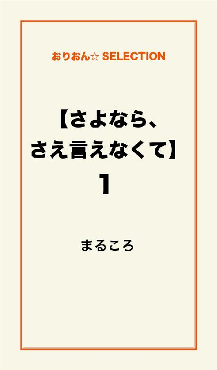
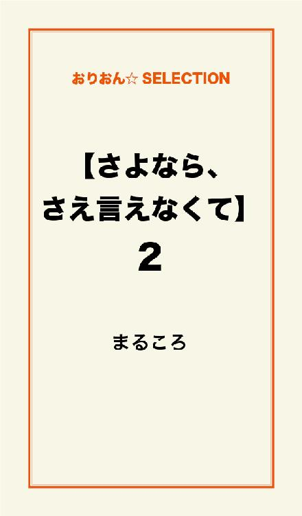
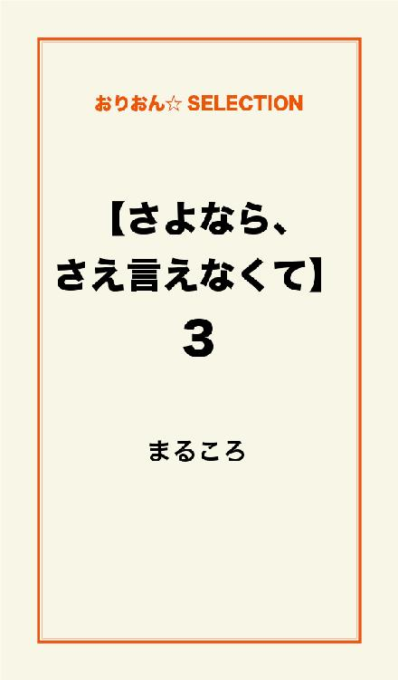

| 【さよなら、さえ言えなくて】 完全版 | |
| まるころ | |
この本は横書きでレイアウトされています。
また、ご覧になる機種により、表示の差が認められることがあります。

今、彼氏と同じ大学に通うために必死に勉強している。
数学、英語......。
一つでも多くの公式。
一つでも多くの英単語。
一つでも多く試験で書けるようにがんばっている。
一つ年上の彼氏。
来年は彼と同じ大学。
彼と半同棲のような新生活。
そんな毎日を楽しみにして受験勉強とたたかっている。
それなのに......彼は変わった。
都会に行ってからすごく冷たくなった。
だから、私だけ置いてけぼりにされた気分。
電話だってそう。
たまにかかってくる電話。
嬉しいから長電話したい。
でも、すぐ切らないといけない。
すごい不満だし、不安。
どうしてこんな扱いなの？
私って、彼女でしょ？
でも、せっかく話せた時には暗い話なんてしたくない。
ワガママ言ってケンカになるのは余計にヤだ......。
純也？
最近、彼の行動に「どうして？」と思うことが多くなっている。
たとえば、疑問文で送ったメールの返信も何日も後に返ってくる。
電話は、一週間に一度くらい。
彼の方から、「会いたい」って言ってもらえない。
......そもそも一人暮らしをしているマンションがどこにあるのか教えてもらっていない。
けど......、私は、彼のことが、好きだった！
好きだからこそ、一緒の大学に行って幸せになりたいからこそ......、受験勉強をがんばってやっていけていた。
ある晩のこと。
暖房をつけると眠たくなるから、くつ下を二枚重ねではいて、すぐに冷えてしまったココアを飲みながら勉強をしていると、
「新しい携帯にしたから──」
純也からメールが来た（コピーメールじゃなかった）。
「そっか、変えたんだ」って思いながらアドレスを見た。
そこには私の名前が入っていなかった。
今まではアドレスを変えても、いつも入れてくれていた私の名前。
それなのに......。
不安がますます強くなる一方だった。
でも、なぜか、その「アドレス変更の日」から嬉しいことが起こるようになった。
彼からのメールが増えてきた♪
電話で話さなくても寂しくないくらいマメに送ってくれるようになった♪
私は、あきらめなくてよかった、「別れた方がいい？」ってきかなくてよかった。
そう思いながら一つ一つの純也からのメールに返信を書いていった。
【城島大学 文芸学部 日本史学科】の合格通知が届いた。
合格通知が入った大きな封筒。
中に入っていた書類を見た時、たおれてしまうくらい嬉しかった。
純也！ やったよ！
最初に彼に電話をかけた。
だって合格したんだもん♪
直接言いたい！
......。
......。
でも......、純也は、出てくれなかった。
その日、何回電話しても結局出てくれなかった......。
入学式が終わり、大学に入って数ヶ月がばたばたと過ぎていった。
ある日、大学の図書館前を歩いていたら、男の人に声をかけられた。
初めて見る人で、白色に近い金髪をしている男の人（たぶん、大学生だと思う）。
その人は、どうしてこんなに馴れ馴れしいのかって怖くなるくらい、軽い口調で、
「純也の元カノだろ？」
いきなりそう言って、
「落ち込むなって。俺が新しいカレシになってやるから」......なんて笑いながら口にした。
もちろん、わけがわからなかった！
あなた誰!?
なんだかすごく怖かった。
都会には色々な人がいるから気をつけないといけない。
それが頭にあったから、無視して逃げるように帰った。
......大学生になったらオシャレをがんばろう。
そう思って履いていたハイヒール。
この靴のせいで、足がとても痛くなった。
マンションに帰った。
入居してまだ時間という時間も経っていない一人暮らしの部屋。
あまりに静かすぎる。
部屋の静けさが私を押し潰すように広がっていた。
男の人から逃げてきた私は、マンションに帰ってもまた一人きりだった。
人見知りのせいで、実はまだ友達もいない。
サークルもクラブも見つけていない。
学校と家の往復ばっかりの大学生のイメージとは違った毎日。
音楽もテレビもつけずソファーベッドに座って、携帯電話を開き、純也との思い出の写メを見た。
そして、その一枚一枚撮った時の『思い出』を頭に浮かべた。
純也の変顔や本気モードで笑った写メ......。
長い時間、写メを見ていたら携帯電話の電池が一つ減った。
一つなくなったのを見ると余計に寂しくなって私の目からは、涙がこぼれた。
......涙をふくために、ティッシュを取ろうとソファーベッドから立ち上がった。
その時！
携帯電話を置いたガラステーブルが、小刻みに冷たい音を出してゆれているのに気づいた。
えっ......!?
着信だった！
涙をふかないで、携帯を手に取った。
「純也」から電話がかかってきた。
──「もしもし......」──
──「......」──
かかってきた電話。
それなのに、何も声は返ってこない。
まるで電話を耳に当てて独り言をつぶやいているみたいだった......。
吐く息までが携帯電話に反響する。
私はますます戸惑う。
「もしもし」
男の人の声。
「純也!?」
聞こえてきた声はまるで機械の音のように思えた。
それくらい単調な声だった......。
「純也なの!?」
「ああ」
ああ？ そんな一言ですまさないで。
久しぶりに話してるんでしょ。
くやしい......。
涙が出た。でも、さっきとは違う涙。
「久しぶり」
「そうだね」
「元気だったか？」
「うん。純也は？」
久しぶりすぎて彼の名前を呼ぶのに違和感があった。
「オレは元気」
「そっか」
よかった......。元気だったんだね......。
「大学、受かって来てるんだって？」
「うん」
......昔の純也じゃない。それは声で、わかる。
「合格。おめでとう」
感情のない声で言われた。
「うん」
「ところでさぁ──」
そう言って少し黙った純也は、
「正紀と今日会ったって？」
「まさき？」
なぜかすぐにさっきの"怖い男の人"が頭をよぎった。
......。
「もしもし、ちなつ？」
......。
純也の感情も何もこもっていない声。
......。
なんでだろう？
私は電話を切ってしまった。
電話を一方的に切ったら、たぶん、私の中で一本の線がプツリと切れてしまったのか......自分の頭の中からキレイに全てのことを消してしまいたくなった。
だから、私も無感情に携帯電話の『履歴』を全部消した。
そのまま流れ作業みたいな感じで、純也からの受信メール、私から彼への送信メール......それに......アドレスもＴＥＬ番も......。
消す作業はほんの一瞬だった。
そっとガラステーブルの上に携帯電話を置いた。
「ごめんね。ツラかったよね」
携帯電話に声をかけた。
本当は......独り言だけど......。
ふと顔を上げると、テレビの画面に顔が映っていた。
なんてヒドイ顔......。
不細工すぎる。
サイテー。
今までだって、自分のことが大キライだった。
でも今までは......こんな不細工な私でも、「純也」がいてくれた。
こんな私に、「好きだよ」とか「かわいいなお前」とか「ずっと一緒な」って言ってくれていた。
だから、こんな不細工な私でも大丈夫なのかなって自信がもてた。
「この人と一緒にいたら幸せ」
そう思った。
それなのに......ヒドイよ......純也。
こんなことするなら、はじめから私なんかと付き合わないでよ。
冷たくするなら、たくさんの思い出を残さないでほしかった......。
彼、本当は「ずっと、一緒」なんて思っていなかったかもしれない。
男の人ってエッチができれば誰でもいいらしいから、あの人だって私とただセックスがしたくてウソついたのかもしれない......。
......。
そんなのって......ひどすぎる......。
純也？
......私はね......女の子はね......。
そんなに優しくて、嬉しい言葉言われたら、本気にするのよ。
「ずっと一緒な」「お前のこと好きだから」
こんな言葉。ダメだよ......。
もともと私がさ、あなたに一目惚れして告白したんだから、あんなに「好き」とか言われたら、信じちゃうよ、ふつう。
暗いテレビ画面にはゆがんだ自分の顔。
「最低──」
何に向かって言ったらいいのかもわからない。
ぼんやりしていたら、携帯電話のイルミネーションが点滅した。
メール......。
携帯電話を手に取ってボタンを押した。
純也？
ついさっき消したから、アドレスはアルファベットと数字になって表示されている。
そして、タイトルには、短く「知夏へ」って書いてある......。
"さっきはいきなり電話悪かった。
ちょっとだけ伝えとこうと思って！
オレの事！ もう忘れて。
これからは楽しい女子大生の生活をエンジョイしろよ！！
お前のことだから、どうせまだ引きずってんだろ？ って思って。
もし、一人が寂しいんだったら、ちゃんとした彼氏ができるまでのつなぎみたいな感じで正紀と付き合えよ。
あいつ、オレなんかよりもセンスあるし、女経験も豊富だからきっと色々教えてもらえるぞ（＾＾）
エッチなこととかもな（笑）
じゃあな、久しぶりに声聞けて嬉しかった。
オレのことはもう他人みたいに考えてくれて全然かまわないからな。
それじゃあ（＾皿＾：） "
あの人、たった一年で変わったなぁ。
冷静な私がいた。
好きにしたらいい、私にはあんな人もう関係ない──。
受信したばかりのメールも削除した。
新しい人をさがそう。
大学なんて四年間もある。
絶対、イイ人なんてたくさんいる。
がんばろう......。
夏休みに入った。
友達ができた。
所属している文芸学部の日本史学科。
ほとんど一緒の授業を履修している大阪出身の絵里。
絵里は前期試験が終わって夏休みの間は実家に帰るって言っていた。
私は実家に帰っていない。
絵里から「やっぱり家族はええもんやで～」
こういうメールも来る。
私だって、お父さんやお母さんに会って色んな話がしたい。
久しぶりにお母さんが作ってくれる天ぷらとかコロッケが食べたい。
でも、私は......帰れない。
帰ったらきっと色々なことを思い出す。
色々な......純也のこと。
自分でもバカって思うくらいまだ引きずってる。
純也......あの人、そんなに良い人だったのかな？
最近では不思議に思う。それなのに......なぜかいつも頭の中にいる。
大学でもらってきた数冊のバイト求人誌。
ソファーベッドに寝転がり、パラパラと読む。
アルバイトかぁ......。
せっかくこうやって大学生になれたんだから、少しは「学生」らしいことでもしてみよっかな。
けど......、自分が、どこかのお店に立って、
「いらっしゃいませ～」とか「ありがとうございま～す」
笑顔で言っている姿がぜんぜん想像できない。
「なんか怖いなぁ」とも思ってしまうし。
【初心者だいかんげい】？
【簡単なお仕事です】？
【楽しい職場です】？
ほんとなの!?
......。
......。
求人誌をめくる。
んっ？
"花丸書店"？
へぇ～、花丸書店って、こっちにもあるんだ。
うわ～、なんか嬉しい。
花丸書店の求人の欄を見つけてテンションが上がった。
花丸書店は地元にもある本屋。
高校生の時、電車通学をしていた頃。
１時間に一本か二本しかない電車を待っている時によく入った。
マンガしか読まなかった私だけど、そのお店はいつも楽しかった。
純也と付き合いだしてからは、あの人のサッカー部の部活が終わるまで私は教室とかグラウンドが見える芝生に座って待っていて、部活が終わったら自転車に二人乗りをして送ってもらって帰っていたから花丸書店に行かなくなった。
いつも使っていた三ツ橋駅のまん前にある本屋なのに、花丸書店の話をしてもほとんどの友達が知らなかった。
たまに知ってる子がいて、
「ねっ、一回さ、一緒に行ってみようよ。あそこのおじいちゃん、カワイイんだよ」
誘ってみても、
「え～、あそこってさ、見るからに汚いオーラ出てるからヤだ」
相手にしてもらえなかった。
花丸書店♪
都会にもあるんだ。
花丸のおじいちゃん、スゴイ人だったんだ！
嬉しい♪
おじいちゃんがたった一人でお店を開けて営業していた。
そんなお店がこっちにも!?
もしかして！
おじいちゃんが社長なんじゃあ。
私の想像と期待は、ふくらむ、ふくらむ。
おじいちゃんの笑った顔、今でもハッキリ思い出せる。
スゴイね、おじいちゃん！
私もよっしゃあだよ！
夏休みも残り一ヶ月と少しになった８月20日。
19歳にもなったしお盆が明けたら、新しいことにチャレンジしようと決めていた！
求人誌にのっていた「花丸書店」に電話をかけてみた。
初バイトへのチャレンジスタートだぁ！
電話をかける。
左手には電話で話す言葉のカンニングペーパー。
──「ハイッ！ お電話ありがとうございます！ こちら花丸書店！ 黒崎です、」──
──「あの、もしもし。アルバイトの求人誌を拝見して、お電話させていただいた、鈴木知夏と申します。ご担当の山本さんはいらっしゃいますか？」──
わ～、手がふるえて、声もふるえる。
キョドってる自分が自分でわかった......！
ガーン！
これじゃあ、印象サイアクじゃん。
せっかく電話で話す言葉の下書きまでしたのに......！
──「申し訳ございません！ 本日ですね、山本はお休みをいただいておりまして、あのっ、鈴木さまでしたよね？」──
──「は、はいっ」──
そっこーで私の名前も覚えてる。
やっぱ「仕事」してる人って違うなぁ。
ますます自信なくなってきた......。
──「面接の日時だけ決めさせていただいてよろしいですか!? 都合がいい日にちと時間はございますか？」──
──「はっはい。ええっと、それじゃあ......」──
あれっ？ 私なんてヒマ人の大学生だよね？
別にいつだってダイジョーブなはずじゃん。
「いつでも大丈夫です」って言えばイメージアップじゃん。
頭が回らないなぁ。
──「ゆっくり考えて下さいね！ お待ちしてますから」──
明るく元気な男の人は、元気はそのままで小さくつぶやくように話しかけてきてくれた。
や、優しい。
事務的じゃなくて、私を思ってくれるようなその言葉に感激！
電話の向こうの男の人は、
──「僕も初めはキンチョーしました！ でも、大丈夫ですよ！ こんな僕でもこうやって働けてますから」──
そう続けて話しかけてくれた。
しかも、言葉の後に「ハッハ～」って感じで楽しそうに笑ってくれた。
──「あの、私、」──
──「はい、どうぞぉ！」──
──「ええと、明日とかでも。何時とかでも私は大丈夫です......よね」──
ってなんで聞いてんのよ！ まだキョドってる。
──「かしこまりました！ 明日でも都合がよろしいんですね？」──
──「はいっ！ そうです！」──
男の人は私のへんてこさをフォローしてくれた。
私もがんばって、
「はいっ！」
元気な声を出して返事をした。
──「りょうかいです！ それでは、明日の午後６時に当店にお越しいただけますか？」──
──「はいっ！ 大丈夫です！」──
私もがんばって元気な声を出してみたっ！
──「では、写真つきのリレキショを持ってお越しになって下さいね。カウンターに声をかけていただければわかりますのでっ！」──
──「はいっ！」──
──「では、お電話ありがとうございましたっ」──
──「はい、失礼いたします」──
「失礼いたしますっ」男の人は電話を切らずに続けて、
「がんばりましょうねっ」
私の不安を取ってくれるように声をかけてくれる。
──「はい、ありがとうございます」──
嬉しかった。
男の人と同じように、できるだけしっかりした声でお礼を言って、ゆっくりと電話を切った。
次の日。面接の日。
ぐっすりとはいかないけどきちんと眠った。
起きたのはお昼ごろ。
テレビを見たり、本を読んだり、面接で聞かれることをイメージしたりして時間を過ごして、出かける前、鏡の前に立って、
「髪の毛そめなくてよかった。よしっ！ ピアスとかも開けなくてよかった、うんうん」
鏡に映った自分に向かって何か話しかけている私。
あ～、緊張してる。
えっ......大きい。
自転車でやってきた私の目の前に建っているのは、地元の"花丸書店"の50倍は大きい都会バージョンの花丸書店。
自転車だけでも１００台くらいとめられそうなほど大きな駐輪場。
駐車場には車も大量にとめてある。
自転車の鍵を抜きながら、都会バージョンの花丸書店の建物を見わたす。
自動ドアの正面出入口には、キレイに最新刊のポスターが貼ってある。
オススメ本の一覧表の紙には、カワイイ丸文字で紹介文が書いてある。
......本格的な大型の本屋さん。
無理かも......。
ここに来て自信がなくなる。
あ～、「すいません！ やっぱり辞めます」って言おうかな。
初めてのアルバイトなのに、こんなに大きいところで働くのは無理だと思う。
一応は文学部に通ってる。
けど、本なんてほとんど読まない。
それにコミックだって話題になったのしか読まない。
雑誌だって周りのみんなが読んでるのをたまに買うくらい。
そんな私が、こんなに大きな本屋さんで働けるわけがない......。
やっぱり断ろう......。
携帯電話のアド帳から"花丸書店"って登録した番号を選ぶ。
電話をかけた。
────
────
今の時間、忙しいのかなぁ。
発信音が続くだけで誰も出ない......。
しばらくして、
──「ハイっ、お待たせいたしました。花丸書店、黒崎ですっ！」──
！！うわっ！！ あの人じゃん！！
私は電話を閉じていた。
反射っ！ めっちゃ速かった。
なんで？ どうして？
別にいいじゃん。そんなに焦らなくても。
普通に話して、
「すいません。面接なんですけど、やっぱり辞めます」
そう伝えてから、ソッコーで切っちゃったらよかったじゃん......。
それなのにあの人の声がしたら一瞬でものすごく恥ずかしくなった。
それで気がつけば、電話を閉じてしまっていた......。
くろさきさん、って言ってたよね。
......どんな人だろう......と改めて想像する。
実は、昨日からめっちゃ気になってしまっている。
電話での印象が忘れられない。
う～んと、声からすると、スポーツをやってて、背が高い。
外見はめっちゃスポーツマン。
でも、たくさん本を読んでて知的な感じ。
オシャレなメガネもかけてて──。
そんな人だったらいいなぁ。
それで、それでっ、恋人がいなかったらサイコー！
あっ！
妄想が暴走してた。
気づくと自分を忘れていた私。
でも、これって私だけじゃないはず。
女の子の悪いクセみたいなものだよね。
なんて思いながら、とにかくやってみようじゃないと気合を入れ直す！
がんばろう、知夏！
時間を確認したら、面接の５分前になっていた──。
出入り口から入って、少し行ったらすぐにカウンターがあった。
左右二つずつ置いてあるカウンターのレジ。
男の人が立っていない一番左側のレジを選ぶ。
よっし、がんばろう！
そう気合を入れて、
「すいません。今日の６時から面接の鈴木知夏です」
カウンターに立っていたのは、地毛かストパーかはわからないけど、めっちゃサラ毛。
お化粧もばっちり、まつ毛が長くて目もキラキラしてる、キレイな女の人。
正直、制服の灰色のポロシャツみたいな服から完全に浮いてしまっているお姉系のその女の人は、
「はい！ ありがとうございまぁす！ さいしょにリレキショだけおあずかりさせていただきたいんですけど、お持ちですか！」
アニメ系のこれまた可愛い声で、レジ越しに答えてくれた。
「持ってきてます」
返事をして、カバンの中でごそごそやって、クリアファイルから取り出して、
「すいません。これです」
両手に持って差し出す。
「はーい。それじゃあちょっとお待ち下さいね！」
「はいっ」
そう返事をして、レジから離れていく女の人を目で追った......。
あの人、すごいカワイイ。いいなぁ、私もあの人みたいになれたらなぁ。
きっと、モテるんだろうなぁ。あの人って──。
そんなことを考えながら、レジの前でぼんやりしていた。
「あの、おうかがいしていますか!?」
すると＜男＞の人の声。
えっ！！！
ドキっとして、
「はっはい、面接に来たので」
キョドったまま答える。
すると目の前には、クロサキっていうカタカナで書かれた名札をつけている男の人が立っていた！
「あっ、そうだったんですね！」
そして、私に向かって笑ってくれた。
この人がクロサキさん......！
身長が、高くて肩幅が広い。
不自然じゃないくらいの小麦色の肌で、髪の毛は短い。
けど、黒色をベースにした中に落ち着いた茶色のメッシュをところどころに入れている。
メガネは......かけてない。
けど、それ以外は私のイメージ通り。
一言で言うなら！！！！！！
ヤバイ！！！
カッコいい！！
「鈴木さんですね！」
「あっ、はいっ。鈴木知夏です」
どうしてもキョドってしまう。
キョドらないように意識すればするほど、きょどうふしんになるダメ私。
どうしても昔から......カッコいい人とはうまく話せない。
「昨日、お電話に出た黒崎です。がんばってね、というより、がんばろうね！」
......さっ、さわやかすぎるぅ......ナイスすぎ！！
なんか、本屋ってイメージじゃない。
海で「海の家」とかで働いててモテモテって方が絶対にそれっぽい！！
「はいっ、ありがとうございます」
私がそう答えていると、さっきの女の人が戻ってきた。
私が渡したリレキショと、たぶん、リレキショをコピーした紙を持ってきて、黒崎さんの隣にちょこんと立って、
「タイヨー？ なに、いきなり手ェ出してんのよっ。この女好きめっ」
そう言いながら、同性の私でもドキッとするかわいい笑顔で、リズミカルに黒崎さんに体当たりしている。
この二人すっごく仲良いなぁ。
......やっぱりこんなカッコいい人に「彼女」いないわけないよね。
......この二人ならめっちゃお似合いじゃん。
私なんかとは別世界だよ......ね。マジで。
「変なこと言うな！ おかしなごかいされるだろうが！」
そう言って黒崎さんは、手で押し返すように女の人の身体を遠ざけて、
「それじゃあ、鈴木さん！ 面接がんばってね」
そう続けて、別のカウンターに移動していった。
「じゃあ、事務所いこっか？」
女の人はカウンターから出て、私を先導するように歩きながら、お客さんとすれ違う度に、
「いらっしゃいませ～」
私もそれを見て、お客さんに向かってお辞儀だけする。
お客さんがいない本棚の通りに入ると、女の人は立ち止まるように歩くスピードを落とす。
どうしたんだろう。
そう思っていると、
「ここ通ると近道なんだよっ」
ウキャッって感じのきゃぴきゃぴした声で言って、
「あっ。鈴木さん!?」
「はいっ？ なんでしょう？」
「ちなっちゃんって呼んでもいい？」
「えっ、ハイ。私はぜんぜん」
いきなり？って思ったけど、ぜんぜん、嫌な気持ちにはならなかったので、歩きながら返事をする。
「気をつけてたんだけどさぁ、コピーする時って、どうしてもちらって見えちゃうんだよね。ごめんよぉっ」
女の人は手を合わせて笑いながら謝って、
「ところでぇ、ちなっちゃんも城島大なんだね」
「えっ、はい！」
「１回生？」
「はいっ！ そうです、今年入学してきたばかりです」
「若いねぇ」
「えっ、あの、えっと。城大生なんですか？」
「そだよん。って、ともちゃんでもなんでも気軽に呼んでいいよ。私、名前、知子だから」
そそそんなぁ、そんないきなりフレンドリーに言われても......。
私、そんなにノリよくできないよぉ。
「えっと、あの、ともちゃんさんは、何回生なんですか？」
「２回よ！！ いっこオバサンだね、私の方が」
「そんなっ、変わらないです」
「いやいやぁ、すっごいオバサンよ。いっこ上だとぜんぜん違うもん」
私達の歩きは、気づけばさらにスローモーションになっていた。
「この本屋、同じ年代の子が少ないから嬉しいんだよねっ。ちなっちゃんが来てくれたの」
ともちゃんさんは笑って言ってくれる。
「えっと、何学部なんですか？ ともちゃんさんは？」
「経済よっ。って、普通にともちゃんでいいのに」
私は首を振った。いきなりそんなの、ムリムリムリ。
"ともちゃんさん"でもがんばった方なのに......。
「んで、ちなっちゃんは！ 文芸学部なんだよね」
ともちゃんさん!?
もしかして、私のリレキショ、けっこう見てる？
でも、不思議な感じ。
ぜんぜん、イヤな気分にならない。
「そうです。いちおう文芸に通ってます」
「わぁ、なんかカシコそーだね」
「いえいえ、ぜんぜんです。経済の方が......すごいです」
そう言っていて、経済っていったら？
あの純也バカも経済学部じゃんってふっと頭を過った──。
そんな話をしていたら、事務所前についた。
「ちょっと待っててね」
ともちゃんさんは、私の肩をポポンッとたたいて、
「さきにパワー注入ね！！」
そう言ってから、事務所のドアをノックして、
「失礼しまぁす！！」
さっきよりもさらに高くてやっぱり可愛いらしい声で言って、中に入っていった。
少しの待ち時間のはずなのになんだか、じっとしていられない。
はぁ、緊張する～。
ともちゃんさんが出てきた。
「お待たせー！」
「はいっ！！」
「なかに店長の山本さんがいるからね。面接っ、ファイト～！！」
「はいっ」
私は、ともちゃんさんが開けてくれているドアから中に入って、
「失礼しますっ！」
先輩ともちゃんさんに負けないくらいの声を出した。
「じゃあ、しめるね～」
笑顔で言ってくれる、ともちゃんさんに、
「はいっ！！ ありがとうございます」
ドアが閉まるのを待ってから、いよいよ事務所の奥へと進む！
とにかく、がんばろうっ。落ちたら落ちたで、仕方ないじゃん！
決心！
「こっち、こっち！ 面接こっちでするから」
「はい！」
ロッカーの向こう側、事務所のさらに奥から男の人の声。
きっと、山本さん。
その山本さんの声に導かれるように進んでいった。
奥に進むと事務所の壁には、
"本は「心」で動く！ お客様第一！ てんちょ"
毛筆で手書き。しかもかなり達筆。
たぶん、このお店の「教訓」だと思う言葉が二枚くっつけた半紙にババァンって感じで貼ってあった。
そして、事務所の一番奥の壁にくっつくようにして置かれている机に男の人が座っていた。
「いらっしゃいませ。今日はお越しいただきありがとうございます」
私の方には目をやらずにリレキショを見ながら言う。
「じゃあ、そこに掛けてくれる？」
「失礼します！」
横に三脚並べてある真ん中の椅子に腰を掛ける。
一方の山本さんは足をちょこちょこと動かして椅子に座ったまま移動して私の前に来る。
山本さんは見た目、40歳前半くらいで細い身体。
声と外見にギャップがあって顔はちょっと老け気味（男の人にしたら高い目の声）。
おしゃれヒゲを生やしているのか、それとも無精ヒゲなのか？
その判断が難しいけど、とにかくちょっと汚い印象のコケみたいなヒゲがあごにあった。
目には薄くて軽そうなタイプの銀縁の小さなメガネをかけている。
髪型は中途半端な七三分け。
ワックスなのか頭皮の油なのかどっちかはわからないテカテカ感がある黒髪。
似ている芸能人は......思いつかない。
「ええっと、城島大なんだ？」
「はいっ」
「１回生、だね？」
「そうです」
「大学はどう？ 有意義に過ごせてる？」
「はい。初めてのことばかりでまだまだ戸惑っていますが、自分なりにはがんばっています！」
バイト求人誌の最初のページに載っていた"面接での注意点"。
（１）ハキハキと話す
（２）特に語尾には気をつける
これに注意しながら質問に答えていく。
その後、20分くらい面接が続いた。
志望動機、シフトに入れる時間と回数、大学では何を勉強しているか？
たくさん聞かれた。
緊張しすぎてうまく答えられなかったけど、花丸のおじいちゃん！ 力を貸して！
花丸書店で働きたいの！
そんな思いで面接を受けていた。
花丸のおじいちゃん......。
一人でお店をかまえてがんばっていたおじいちゃん。
おばあちゃんかおじいちゃんかわからないほど、顔をくちゃくちゃにして笑う花丸おじいちゃん。
「私も花丸書店で働いてるの」
そう言ってあげたら喜ぶだろうな。
面接の最後に店長から、何か聞きたいことないですかと言われた私は、
「初めは迷惑をかけるかもしれません。でも、一生懸命にがんばるので、ヨロシクお願いします！！！」
この一言。
難しい言葉とか使えないし、ヤル気があってもそれを上手に伝えることはできない。
だから、たった一言、店長に今の決心を言葉にして伝えた。
"花丸書店"
そう表示された一件の電話がかかってきたのは面接から一週間がちょうど経った日のことだった。
電話を受けた時、私は、絵里と二人でファミレスにいた。
電話を一人で待つのが我慢できなくて、大阪から帰ってきたばかりの絵里にムリ言って、
「今夜だけは一緒にいて」
そんなワガママを言って集合してもらっていた。
着信があった瞬間。
私の頭には、この前の面接の最後に山本さんが言っていた、
"「採用の場合のみ、一週間後にお電話差し上げます」"
という言葉がよみがえって、私は思わず、
「うわっ、かかってきたよ。きた、きた」
向かいに座っている絵里もビックリするような声を上げてしまった。
──「ハイッ、もしもし、鈴木です」──
──「こちら花丸書店 高崎店の山本と申します。先日は、お忙しいところ面接にお越し下さいまして、ありがとうございました」──
──「はい」──
──「本部の方とも慎重に選考させていただいた結果、今回、採用とさせていただきます。つきましては、え～、９月１日の18時に制服の貸与と簡単なオリエンテーションを行いますので、その際の持ち物なんですが、」──
──「あっ、ちょっと待っていただけますか!? メモ帳を用意しますので」──
私が急いでカバンを手に取ろうとしたら、黒髪ボブにくるくるのカワイイパーマを当てて帰ってきた絵里が、自分の携帯電話を両手で持って胸のところでかまえて、真剣な顔でメモの準備をしてくれていた。
頼もしすぎる～。
絵里に、口パクで「あ・り・が・と・う」とお礼を言って、
──「お待たせいたしました！ ハイッ、大丈夫です」──
──「まずは銀行通帳なんですが、こちら郵貯のものでも大丈夫です。次に筆記具、それと印鑑。シャチハタでも結構ですから持ってきて下さい」──
山本さんの言葉を繰り返すように、単語で、
「通帳、筆記具、インカン......、９月１日の18時ですね」
絵里が携帯電話を打ってメモしてくれているのを確認しながら言う。
──「あと制服なんですが、サイズはどうしますか？」──
──「一番小さいのを、えっと、Ｓサイズでお願いします」──
──「わかりました。では、用意しておきますので９月１日の18時に面接を行った時と同じようにカウンターまで声をかけてもらって、事務所まで来て下さい」──
──「わかりました。ヨロシクお願いしますっ」──
──「よろしくお願いいたします。失礼します」──
一つ息を吸うくらいだけの間があって、電話はそのまま切れた。
「やったやぁん！！」
絵里が目をパチパチさせて言ってくれた。
「うん！」
「今夜、私のおごりやね！」
「ううん、私におごらせて！」
「あかんよ、お祝いしようや。本屋の店員さんなんか、カッコよすぎ。文学部のカガミやぁ。ソンケーするぅ」
絵里はまるで自分のことのように喜んでくれている。
バイト、新しい友達、一人暮らし。
私の生活もようやく波に乗り出したなぁ。
あとは......、絵里ともども早く新しい彼氏を見つけて、夢のダブルデートを実現！
早く実現したいなぁ。
新しい彼氏と夏には海。
秋には紅葉見て、冬にはスノボー行って、春には花見～。
そんな夢みたいな大学生活を早く実現したい！
その後、私と絵里は、久しぶりにさわいで、本気でバカ笑いして盛り上がった。
そして、絵里の悩みごとやイイ男についての議論に話が続いた。
やっぱり私たちは女の子♪
ガールズトークが盛り上がる。
家庭教師のアルバイトをしている絵里は、
「やっぱりさ、今のバイトやと。いい人、見つからへんと思うねん」
なげくように言っている。
絵里もサークルに入っていないから、イイ人と出会うチャンスがなかなかない。
ちなみに彼女がサークルに入っていない理由は私なんかとは違う。
私の場合は４月～７月のサークル勧誘が一番盛んな時期に"純也"のことで「大失恋」していて、とてもじゃないけどサークルのことに頭が切り替えられなかった。
一方、絵里。
彼女は大阪から出てきたということもあって、標準語の言葉がまるで外国語みたいに聞こえていたらしく、
「聞いてるだけで、ムカムカしててん」
とのこと。
カルチャーショックを受けていた彼女は、一人暮らしのマンションの部屋に引きこもっていたらしい。
私からすればその理由も関西人って感じで面白い。
でもきっと絵里にすれば、カルチャーショックはかなり大きかったんだと思う。
でも、適応力がばつぐんの彼女は、今はもう、
「あ～あ、なんであん時、サークル入ってなかったんやろぉ。ちぇっ」
なんて言って、悔しがっているのだった。
──こうして話していて、ふと思うこと。
それはもし、絵里と出会えていなかったらということ。
もしかしたら私は、絵里なしじゃ未だにあの失恋のことを乗り越えてなかったかも......しれない。
今から数ヶ月前。
私が失恋して、人生すら投げやりになるくらい悩んでいた時。
しっかりと支えてくれたのが、友達になってアドレスを交換したばかりの絵里だった──。
絵里には本当にたくさんの涙を見せた。
あの頃は確か出会ってまだ数週間しか経ってなかった。
それなのに、私は、純也に裏切られたこととか、されたことを全部、絵里に話した──。
絵里は真剣な顔で私から目をそらさずに、
「だいじょうぶだよ。人生はこれからだもん」
気を使って関西弁じゃない言葉で話してくれて、私の部屋のソファーベッドに横に並んで座ってなぐさめてくれた。
私は、絵里のふとももの上を借りてこれまでの人生にないくらい泣いた。
絵里は、私から離れないでいてくれた。
家族にさえ見せたことない大量の涙を受け止めてくれた友達、絵里。
きっと、この子じゃないと見せられなかったと思う。
それくらい信頼できたし今でももちろん友達として大好き。
「なぁ、なぁ。どうしたん？ お～い、ち～ちゃん？ なにボケーとしてるん？」
この声で気づいた。
思わずぼんやりして考えていた私。
絵里は、可愛いタヌキのキャラクターが二カ～って笑ったみたいな笑顔を浮かべていた。
あ～、早くっ！
この子とこの子の彼氏と、私と私の彼氏でダブルデートしたい！
９月１日の17時！
メールが来た。絵里からだった。
本文には、
"初バイトまであと一時間やねぇ～（＾＾） ガンバッ"
早めに出かける準備をしていた私は絵里からのこのメールに、
"うっし！ 頑張ってきま～す（○＾＾○）"
そう返信をして、部屋を出て、マンションを出て、自転車に乗って、花丸書店を目指す。
９月初日の夕方にしては涼しく感じる風に秋の訪れを感じた。
風を身体に受けながら自転車をこぐ、交差点の信号は全部青！
とてもスムーズに"花丸書店"の初出勤へ向かう──。
バイト先に着いた。
駐輪所に自転車をとめて、店の中に入る。
カウンターに向かって軽く頭を下げる。
となり同士のレジに立っていた、ともちゃんさんと黒崎さんが右手の親指を立てて笑顔で、
「グッジョブ！ 事務所に店長いるよ！」って言ってくれた。
私も笑顔を返して、ヤル気１００倍で、事務所への足を進めた──。
そんな一日目はあっと言う間だった──！
制服をもらって"業務マニュアル"の説明を一通りしてもらった。
その後はさっそくレジだった！
人生初めての接客。
ドキドキする心臓。
パニくったもいいとこ......。
あっと言う間に時間が過ぎて、タイムカードを押した瞬間どっと疲れが出た。
むずかしいなぁ......。
続けられるかなぁ。
そう落ち込んでいたら、事務所で閉店作業をしていたともちゃんさんと黒崎さんが優しく励ましてくれた。
────。
────。
そうして私は花丸書店を通して少しずつ本屋の仕事を覚えていった。
バイトを通してともちゃんさんと仲良くなった。
黒崎さんにはどんどん惹かれていって、黒崎さんに会えるからバイトに行くのが楽しみにもなっていった。もちろん、片想いだけど......。
こんな感じで花丸書店で働き出してからの大学生活は、本当にあっという間に過ぎていった。
夏休みが終わり大学の後期が始まるとすぐに『学園祭』があって絵里とわいわい言いながら回った。
そして、気がつくと１年の最後の月。
12月になっていた。
12月。
私の実家よりは冷え込まない都会の冬。
クリスマスモードになっている街並み。
オシャレな冬服を着て、キャンパス内を歩く大学生。
冬かぁ。
クリスマスにお正月。
恋人と過ごしたい季節。
人肌が恋しい......。
私の恋は実らないだろうけど──。どうせ片想いに始まって、片想いに終わると思うけど──。
私は、黒崎さんのことが好き──。
親友の絵里は家庭教師のアルバイトを辞めて、コンビニで始めた。
その結果！
バッチリ、彼氏を見つけた！
しかも、お互いのマンションを行き来しているらしい。
私より一足先に幸せな大学生活を送っている。
性格が明るくて、めっちゃ面白いし、顔も雰囲気も可愛い絵里。
だからチャンスさえあれば絶対にイイ人が見つかると前から思ってた♪
「彼氏できてん」彼女から報告をもらった時は、私も自分のことみたいに嬉しかった。
でも、一方の私は、片想いなんだよね......。
なんの進展もないというか、アプローチなんてできない。
正直、高嶺の花。
ダブルデート......この夢は、いつになったら叶えられるんだろう......。
絵里と自転車で横に並んでキャンパスを走っていると、
「もうすぐ冬休みやね～」
絵里が声をかけてきた。
私は、
「そうやね」と返事をする。
たまに自分の言葉に関西弁が混じっているのに気づいて、なんだか少しおかしくて楽しい気持ちになる──。
「絵里は予定とかバッチリでしょ？ クリスマスとか年末年始とかもラブラブデートって感じでっ」
そう言って横を走っている絵里を茶化すと、彼女はえへへ～と照れて笑う。
「ち～ちゃんはどうなん？ バイト先のぉ？ 黒崎さん！ イイ感じなん？」
絵里に仕返しされるようにそう言われて私は、
「ダメなんだ......」
暗く言ってしまう。
「ごめん」
絵里に気を使わせちゃった......。
「相談会......しよか？」
絵里は心配そうに声をかけてくれる。
「でも、絵里、今日バイトは？」
「今日は休みやねん！ ち～ちゃんは」
「私も休みっ」
「それじゃ、行こか？」
「ごめんね、絵里......ありがと」
なんだか最近、しんみりしてしまうことが多い私。
......幸せな絵里の足を引っ張ってるみたい。
たまに罪悪感を覚える。
「いやいや、そんなそんなぁ！ ち～ちゃんにはいっつもお世話になってるもん」
絵里はこうやって私なんかにいつも明るく笑顔で言葉を送ってくれる。
本当に......ありがたい。
私はいい友達をもって、やっぱりシアワセだ。
いつものファミレスを目指して自転車をこぐ。
自転車をこいでいて、ふとキャンパスの建物に顔を向けた。
ガラスに映っていたのは私と絵里の姿。
この前、一緒に服を買いに行った。
その時に買った服を私も絵里も着ている。
大阪っていうめっちゃ都会から出てきてる子だから、オシャレのセンスはすっごい。
彼女いわく、"大阪じこみ"の判断力で、安くていいものをどんどん選んで、買っていった。
今日もこうやってバッチリ着こなしている。
一方の私はダメダメもいいところ。
絵里と一緒に買い物に行った時も、たった二枚の服を選ぶのにすごく時間がかかってしまった。
自分に似合うファッションっていうのがわからない。
だから迷ってばかりだった。
買い物に出る前、
「今日はめっちゃええ買い物して、二人ともオシャレ度アップしまくろな」
「うん！ もちろん！」
なんて言いながら、電車に乗った。
そして、色々な店に入って次々とセンスのいい服を選んでいく絵里。
私はぜんぜんイメージできなくて首をひねっていた。
どの服を買ったらいいのか迷って決められずにいた。
結局、声をかけてきた店員さんにオススメされてそれを買ってしまった......。
駐輪所に自転車をとめて、いつものファミレスに入った。
テーブルについて、ポテトフライとジュースを注文する。
大学の話とかとりとめのない話の後で、絵里が少し小さな声で、
「でも、ち～ちゃん？ 行動起こさんと、なんも進まんで」
そう切り出した。
「うん......わかってるんだけど」
「やんね？ それがなかなかできへんねんやんな」
「そうなの」
向かいに座っている絵里を見る。
私なんかのために、とても深刻そうな顔をしてくれている。
ホントにいい子。
「大変やんね......、色々と人生って」
うん......でも、絵里は大丈夫だよ、と私が言おうとしたら、注文したグレープフルーツジュースとミックスジュースとポテトフライが来た。
「黒崎さんって、二つ上なんやろぉ？」
「うん」
「兄弟とかはおるん？」
「うん、弟がいるみたい」
「似てるんかなぁ？」
「わかんない。そこまで詳しくは......」
絵里はストローでグレープフルーツジュースをかきまぜながら、
「二つ上やったら、黒崎さんって今は3回生？ ４回生？」
「う～ん、なんか大学生じゃないみたい。１年か２年前に大学辞めて、今はフリーターらしいんだけど......、」
絵里はこっちを向いて黙ってうなずいている。
「これ以上の黒崎さん情報は知らないの。......それに、」
私が言おうか言うまいか迷って言葉を止めると、絵里はコップから手を離して、
「それにィ？」と私に続けさせようとする。
「それに、そもそも、彼女さんいると思うし......」
私が言うと、
「でも、直接、ちゃんと聞いたわけやないんやろ？」
「うん。そんなこと私なんかが聞けないし......」
絵里は真剣な顔で、
「そんなことばっかり言うてたらアカンよ。ち～ちゃん、カワイイんやしもっと自信持って行動したら、絶対に大丈夫」
私の事をカワイイって言ってくれる人なんて......たぶん、絵里くらい......。
「私なんか......」
小さく言う。
そんな私の不安が絵里にはわかったのか、
「どうしたん......？ なんか事情でもあるん？ 大丈夫やって、話してみ」
そう言ってくれた。
私は、思い切って、
「ともちゃんさんって覚えてるでしょ？ この前、学校の地下食堂で三人一緒にご飯を食べた、花丸書店の先輩の」
絵里はすばやく、
「うん、めっちゃカワイイ人やろ？ ２回生で経済学部の？」
「そう、その人」
「ともちゃん先輩が、どうしたん？」
絵里は目を丸々とさせて私の言葉を待っている。
「どう思った？ 絵里は。ともちゃんさんのことを」
「どう......って？」
絵里は困った顔をする。
確かにどう答えたらいいのか、わからないかもしれない。
「......良い人やと思ったで。なんか、ステキなお姉さんって感じやった」
時間を置くようにちょっと黙っていたら、
「なぁ、さっきからどうしたん？ ち～ちゃん？ ともちゃん先輩となんかあったん？」
「......別にね。ともちゃんさんとは何もないの。でもちょっと、」
「でも？」
「......えっと。ともちゃんさんと黒崎さん、付き合ってる気がするんだよね」
「へっ？」
絵里はまた目を丸くする。
「気がする、ってなんなん？」
「だって、二人、すごく仲が良いし、外見もお似合い」
絵里は丸くしていた目をさらに大きくしている。
「ち～ちゃん？ それって黒崎さんかともちゃん先輩に直接聞いたことなん？」
私は首を横に振って、
「聞かなくても、なんとなくわかるもん」
そう答えると、絵里は大げさにも見えてしまうくらい表情を変えて、
「そんなんちゃんと聞くまでわからへんやん。ち～ちゃん？ もし、これで二人が付き合ってなかったとして、黒崎さんに彼女がおらへんかったらめっちゃ損してるで。チャンスあるのに逃してしもてる。他の人に取られてまうかもやねんで。そういうことはちゃんと聞かへんとアカンよ！」
そんなこと言われても......。
「なんやったら私が聞いたろか？ ともちゃん先輩とメアド交換しとるし」
「ううん、いい。......あっ、でも、お願いしてもいい？」
情けないけど、自分で聞けない。私は、ダメ女で臆病者。
ごめんね絵里、頼んだ。
「オッケー、ちと待ってね」
絵里は携帯電話をいじり始める。
うわ～、めっちゃメールを打つの速い。
「これでオッケー。あとはともちゃんさんからの返信待ちやね♪」
なぜか絵里は自信まんまんな感じで言う。
一方の私は、ドキドキ。
ふと思ったこと。
もし絵里がさっきのメールで「知夏が知りたがってる」って書いてたらどうしよう？
今さらそんなことを心配してももう遅い......。
もう待つしかない。
しばらく待っていると、「おっ、来たぁ」と絵里。
「先に読んでええかい？」
「うん！」
ドキドキ。
絵里が、メールを読む。
「はいっ！ ち～ちゃん。私、トイレ行ってくるから読んでいいよ♪」
そう言って私に携帯を渡してくれる。
顔は、笑顔。
絵里が席を立った後、私は絵里の携帯電話を見た。
From：ともちゃん先輩
Sub ：RE:いきなりメールすいません
"タイヨー（○＾＾○）？
まっさかぁ～、タイヨーはお兄ちゃんみたいな存在だよん。
私の男のタイプはあんな感じじゃないんだよなぁ（笑）
それでっ、それで、それでっ、ちなっちゃん本人はそこにいるの（☆○＾ー＾☆）？"
やっぱり、ともちゃんさんと絵里ってキャラかぶってる──。
絵里がどんなメールを送ったのか知らないけど返信の文面からして、ともちゃんさん、このことに興味アリアリ。
恥ずかしすぎるよ。
いけないことだと思ったけど、どうしても絵里がともちゃんさんに向けてどんなメールを送ったのか知りたくて、携帯電話のボタンを押して操作しようとした......。
けど、その前に絵里がトイレから戻ってきて、
「よかったねぇ♪」
なんだかスッキリした顔で言いながら、向かいに座る。
携帯電話を返すと、ともちゃんさんに返信を書いているのか、すぐに操作をし始めた。
その後、携帯電話を閉じて、ニコって笑った。
するとすごいタイミングで、いきなり私の携帯電話から着メロが鳴った。
まるで絵里が私の携帯に電話をかけたのかと思うくらいのタイミングだった。
電話の着メロ。
慌ててカバンを開けて液晶で発信者を確認したら、"ともちゃんさん（前田知子）"との表示──。
えっ！
向かいに座っている絵里は、キャラクターのタヌキが「にたーっ」て笑っているような顔になって私を見ていて、
「でんわ、でんわ」と繰り返している──。
私は、「わかってる」と口パクで返事をする。
──「もしもし」──
──「あっ、ちなっちゃ～ん！ もう水くさいんだからぁ！ エリーナから聞いたよ～ん！！」──
ともちゃんさんは絵里のことを"エリーナ"って呼ぶ。
──「もう、ほんとっ水くさいなぁ。どうしてもっと早く言ってくれなかったのさぁ。私、そういうの得意なんだからねっ、キューピーちゃんになったげるのにィ」──
ともちゃんさんは、いつも通りのきゃぴきゃぴとした声で、電話の向こうで話している。
外にいるんだろうか？
車の音とかもけっこう漏れてきた。
「ねっ、ねっ？ 今、エリーナと恋の結団式やってんでしょ？ 私もその同盟軍に参加してもいいっ？」
......けっ結団式......って。......どうめいぐん......って。
さすがともちゃんさん。
ともちゃんさんと絵里。
こんなに力強い応援団はいない。
すっごくありがたいって思った。
「はいっ、ぜひ来てください！ 大学前のファミレスにいます」
私が言うとともちゃんさんは、
「知ってるよん！ だって、もう来ちゃってますから！ すでにさっきエリーナともあってますよ。今は外で待ってるよぉ。こっち、こっち、窓の外よぉお」
えっ!?
向かいに座っている絵里はクスクス笑いながら、右手の人差し指で向こうをさしていた。
絵里が指差す方に目をやる。
うわぁ！
電話の通り、ともちゃんさんがいた。
しかも、他のお客さんがいるのに、せっかくの美形の顔をネタに使うように、その窓に向かって顔を押し付けて、私たちに手を振りながら、
「お～い、ここだよぉん！ ようやく気づきましたなぁ」
そう言っているのが、受話口から聞こえてきたし、窓にくっついている口の動きでもわかった。
「と、とっ、ともちゃんさん！ そんなことしないで早く入ってきて下さいっ」
私は驚いて、大きな声を出していた。
向かいに座っている絵里は相変わらずで、
「ともちゃん先輩、やっぱ、サイコ～」
お腹を抱えて苦しそうにゲラゲラ笑っていた。
嬉しかった。
すごく楽しい時間だった。
「とりあえず、許可だけもらっといてあげるからね！」
......これは【結団式】でのともちゃんさんの言葉。
結団式は三人になったあの後、ファミレスからカラオケに移動して、オールで時間を過ごした。
朝になってカラオケから出た時にともちゃんさんが、ふっと真剣な顔になって、
「あとは、ちなっちゃんががんばるんだよ」
その一言で私は絶対にがんばろうって改めて思った────。
そして、クリスマスも一週間後にせまった、12月中旬。
私の携帯電話のアドレス帳には、ともちゃんさんに教えてもらった、黒崎大洋さんのアドレスとＴＥＬ番が登録されている。
結団式から二日後、日曜日のこと。
私は定時にバイトから上がって、家にいた。
すると、閉店業務を終えたともちゃんさんからこういうメールが来た。
"「お疲れぇ、タイヨーに許可とったよん☆
あとは、ガンバレぇ（＾☆＾）タイヨーなんて手玉にとっちゃえい☆
それじゃあ、また、明日もバイト頑張ろうね、どあ～、疲れたぁあ～、山本めぇ、今日もコキつかいやがって」"
ともちゃんさん、ありがとう。
花丸書店でアルバイトを始めたこの三ヵ月強の時間は、私が、黒崎さんのことを好きな期間と同じ。
一人では無理だったと思う。
レジで黒崎さんのとなりに立てても、休憩時間に黒崎さんが事務所にいても、いつも自分の気持ちを隠して時間を過ごしていた。
たまに......自分の気持ちが抑えられなくなってアルバイトが終わって家に帰って、一人になった瞬間、泣いたこともあった。
自分なんかとは釣り合うはずがない、って思えば思うほど胸が締め付けられた。
私なんかが黒崎さんと付き合うなんて「むりむり」と思うほどにますます好きになってしまった。
ともちゃんさんのおかげで、メールを送ってもいいって許可がもらえた。
これって冷静な人が見れば、「なんだ、たったそれだけのことで大げさな」って思うかもしれない。
けど、私にとっては本当に大きな前進。
ものすごく黒崎さんに近づけた気がした。
だって、いつでも、メールを送れば連絡がとれるだもん。
私にとってはそれだけですごく嬉しいことだった。
......今日、さっそく送った方がいいのかなぁ。
......でも、今日、いきなり送ったら......めっちゃくちゃガツガツした女って思われないかな......。
そんな迷いが葛藤となった。
黒崎さんのアドレスから、"Ｅメール作成"のボタンを押したきり、指を動かせない。
やっぱり、今すぐはダメだよね。
まだ、黒崎さん達はバイト終わったばっかりだし事務所にいる時に私からメール来たら、迷惑だよね......。
花丸書店は年中無休。毎日22時まで営業している。
私はまだ立場が低いから営業時間が終わったらそこでバイトもあがる。
でも、ともちゃんさんや黒崎さんみたいに上の人は、営業が終わった後にレジを締めたり、売り場のメンテナンスをしたりする。
だから、とにかく、今はダメ......よね。
もうちょっと、待とうっと......。
......。
う～ん......。
......。
あ～、携帯電話が手元にあると落ち着かない。
ガラステーブルの上に置いてみる。
けど、どうしても気になる。
視界に入ると身体がもやもやした気分になって、いてもたってもいられなくなる......。
だから、携帯電話を裏返して置いてみる。
それでも、なんだかそわそわ......。
お風呂に入って、いつもよりも長くつかってお湯の中にもぐってみたりした。
どの「瞬間」からならメールしても大丈夫か、そんなのは決まっていない。
それなのに、一つ一つの行動を起こす度に、「これが終わったら黒崎さんにメールしよう」と自分に言う。
そして、その行動が終わると、「次のが終わったら、今度こそ本当にメールしよう」っていう感じで、ドンドンと時間だけが経っていってしまう。
そんなこんなで、お風呂から上がって、髪の毛を乾かしていたら午前の２時......。
自分で、あっ......とショックを受けた。
さすがにこんな時間にメールしたら、常識のない女だって思われる......よね。
そう考えてショックを受けたけど、一方では「もう今日は仕方ないじゃん、時間が時間なんだもん」って考えて、なんだか少しホッとしている自分もいた。
最終的には、「明日は絶対にがんばってメールしよう」って決めて、今日はもう寝ることにした！
寝る前に携帯電話を充電しようと思って、ガラステーブルに裏返して置いていた携帯電話を手に取ると、"Ｅメールあり １件"。
メールが来ていることを知らせるイルミネーションが点滅していることに気づいた。
携帯電話を開く。
そして、右手の親指に力を入れて、ボタンを押す。
メインフォルダに未読メール１件──。
ともちゃんさんや絵里からだったら、メールはすでにフォルダ分けしてある。
と、と、ということは......!?
見てみる。
"黒崎さん（黒崎大洋）"と表示されているアドレス！
やった～～～～。
まさかのメールに私は踊る踊る。心が舞い上がる。
そして肝心のメール本文には──。
"「お疲れ様です☆ 花丸書店でお世話になっている黒崎です☆
どうも～、知夏ちゃん。寝てたら、ごめんね。
知子から聞いて、知夏ちゃんのアドレスと電話番号を教えてもらったから、早速、初メールをしてみました☆
知夏ちゃんはすごく真面目に仕事してくれるし、礼儀も正しいから安心して色々なことを任せられます。これからも頑張ろうね。
また暇な時間とかがあれば、いつでもメール歓迎なんで、気軽に送ってきてね。
おれはさっき家に帰ってすぐにこのメールを打ってるから、なんだか文章がつながっていなかったりしたらゴメンね。
それでは、こんな遅い時間に長いメール、ゴメンね。オヤスミ～☆」"
私は、そのメールを三回も繰り返して読んだ。
それで、「保護」した！
それで、それでっ、ずっと空きっ放しだった"プライベートフォルダ"にメールを移動した。
なんだか、これだけですっごくシアワセだった。
顔がほえ～ってしているのが自分でもわかった。
興奮してぜんぜん眠れなかった。
夜が明けて、ウキウキしたまま、学校に行った。
それで、絵里と合流。
いつも通りに講義を受けて、一日の授業が終わるとともちゃんさんも集合した。
私と絵里とともちゃんさんで、学校の地下食堂で、少し早い夕食をとることになった。
地下食堂のすみっこの席に座って話に花を咲かせる。
ご飯を食べてからもうすでに小一時間くらい、世間話に夢中になっている私たち。
地下食堂には私達の他にもたくさんの学生が席に着いている。
"スキー・スノボーのツアー"や"温泉旅行"のパンフレットを机に広げ、きゃっきゃっと楽しそうに手をたたきながら笑って話し合っている。
私たち学生にとって地獄でもある"後期試験"は、冬休みが明けた１月下旬から始まる。
なので、「冬休み前」のこの期間は大学生にとって天国みたいな時間なのだった。
「でも、いいねぇ。エリーナとちなっちゃんはさっ、いい人がいて！」
ともちゃんさんの言葉に、絵里は照れたように舌をちょびっと出して、はにかんだ笑顔を見せる。
一方の私は、慌てて首を振る。
そんな私を見て、向かいの席に座っているともちゃんさんと絵里は、
「わぁ、ほらぁ、そのリアクション。ちょ～、おもしろい」と言って爆笑する。
どうやら、私がこうやって慌てる動きも二人にとっては面白いらしくて、私はよくからかわれる。
おもしろいのかなぁ？
ともちゃんさんと絵里はすごく気が合う。
二人に比べてテンションを上げる方法とかおもしろいネタなんてほとんど持っていない私。
それなのにいつも呼んでこうして仲良くしてくれる──。ありがたい。
三人で集まった時、私は話を聞いてるだけのことが多い。
それでも充分楽しくてイイ時間を過ごせてるな～。
楽しいな～って思う。
それで、さっきみたいにたまに話をフラれた時に、絡んでもらえるだけでここにいてもいいんだ、って安心する♪
向かいの席ではともちゃんさんが絵里に、
「クリスマスとかお正月は彼氏と何して過ごすのぉ？」と聞いている。
絵里は綿密に立てた計画をともちゃんさんに語っている。
そんな二人の話を聞きながら、私は、......今年ももう終わりかぁ......なんだか色々あったけど、早かったなぁ......なんて思っていた。
この１年間、本当にたくさんのことがあった。
ツラかったこと、嬉しかったこと、にくんだこと、楽しかったこと、悲しかったこと......。
そんな様々な記憶がたくさん、たくさんっ、巡りにめぐった。
そんな１年間だった。
「ちなっちゃんはタイヨーとだねっ！」
「わぁ、早くち～ちゃんの彼氏さんに会ってみたいわぁ」
「そう言えば、タイヨーになんて返信したの？」
ともちゃんさんと絵里のスピード感ある話し方。
「まだ、メールを書いただけで送ってないです」
「じゃあ、なんて書いたん!?」
二人は息を合わせたように同時に聞いてきた。
「えっと、」
カバンから携帯電話を取り出して、送信ボックスにある未送信のメールを表示して、
「昨日はメールありがとうございました。こんな私ですがこれからもお願いします」と読んで、
「返信、こんな感じにしようと思って」
「えぇ～！！ オシがかんじんやのに～！！ 弱いで～！！」
二人はまるでコンビみたいにピッタリのタイミングだった。
しかも、ともちゃんさんまで関西弁になってるし。
「ちなつ～、もうすぐ、クリスマスッ♪ クリスマスッ♪」
二人はその後も引き続き、まるで歌を唄うみたいに「クリスマス♪」コールをして私にプレッシャーをかけてくる。
もちろん私も......前進したいと思ってる。
強気のメッセージを送りたいって思ってる。
だから、二人に、
「なんて返事したらいいのかなぁ？」
アドバイスをお願いする。
大学生にもなって自分の恋愛をここまで他人任せにしてしまう女の子なんていない......。
でも、私にとって、この恋はやっぱりとても大切。
きっと自分で考えている以上に私の人生を変えてくれる。
そう自分では思っている。
この恋、実らせたい。
「やっぱりさ～、単刀直入にさ～、クリスマス。私と過ごして～？って送るべきだよっ」
ともちゃんさんはにんまりと笑っている。
となりの絵里も楽しそうにほほえみ中。
「でも、いきなり積極的なのはちょっとダメなんじゃあ」
そう言う私に、
「積極的にアプローチ、アプローチッ♪」
二人に何度も説得される。
......結局、私は、二人の指導のもと、もっと積極的な返信を書くことになった。
それで出来上がったのがこういったメール！
"「昨日はメールをありがとうございました。こんな私ですが、これからもヨロシクお願いします。
それであの、突然なんですが、12月24日と25日って黒崎さん何か用事はありますか？
もし予定とかがなければ、もしよければでいいんですが、私、今年、こっちに出てきて初めてのクリスマスになるんです。
それなのに、このままだと一人きりで過ごすことになってしまうんです。
正直、それは絶対、イヤなんです。それで、女の子の友達は彼氏さんと出かけちゃうし、私のことをわかってくれる男の人って黒崎さんしかいないから。
もし、迷惑とかじゃなかったら。今年のクリスマス。一緒にどこかに行ってもらえませんか。って思ってます。
本当、いきなりのお誘いでゴメンなさいです。でも、お願いします。考えてみて下さい。お返事、待ってます」"
送信する前に、携帯電話をともちゃんさんに渡す。
すると、前の席で二人は肩がくっつくくらい近づいてのぞき込むように見て、
「おぉ～！ ナイスッ！」
声を出してうなずいてくれる。
「やっぱり、いきなり過ぎますよね？」
「ううんっ！ ええよ！ 過激やね～！ 黒崎さんもち～ちゃんのこのギャップにドキッってするの間違いなしやで！ ええよ！ 男心はゆれるよ」
絵里の言葉に私はただただ、恥ずかしくなる一方だった。
送信......！
めちゃくちゃ、ドキドキする～。
送信完了した後、私達は、
「どんな返事くるかな～」っていうちょっと変な盛り上がりをしていた。
絶対、向かいに座っているお二人さん！
このドキドキ感を楽しんでいる。
一方の私なんて、まるで入試の合格発表を待っている時のような複雑な気持ちになっているのに......。
そんな私の気持ちは知らず、二人はきゃぴきゃぴ。
時間は午後５時30分。
私の携帯電話に着信があった。
メールだ！
テーブルに置いていた携帯電話がぶるるとふるえていた。
「ほら、メール！ メール！」
「うんっ」
手に取って中を見る。
"Ｅメール １件"
読む前の私の頭の中では、一瞬、黒崎さんと二人でどこかに買い物に行ったりクリスマスツリーを眺めたりする場面が広がった。
"「こんばんは☆ メールをありがとう☆ まさか知夏ちゃんから誘ってもらえるなんて幸せだなぁ☆
24～25日っていったらクリスマスかぁ。
おれもここ何年もずっと寂しく過ごしてたなぁ。うんうん、知夏ちゃんがそうやって誘ってくれるんだったら、おれも一緒に過ごしたいなぁ～☆
あっでも！ ゴメン。
もしかしたら、バイトのシフト入ってるかもしれない。まさか、予定ができるとは思ってなかったから（汗）
今、花丸書店に向かってるところだから、今日のバイトが終わってシフト確認してから改めて返事してもいいかな？
ごめんね」"
「どうやった？ ねっねっ？」
「ちなっちゃん!? タイヨー、なんだって？」
「......」
あれっ？
自分の意識がどこかわからないところに飛んでいた。
「えっと、一応、喜んでもらえた......のかな？」
「OKやったん？」
「わかんない！ バイトのシフト見てからもう一回返事くれるらしいんだけど」
絵里は、
「そっか～」
納得したように頭をこくりこくりと縦にふる。
問題は、一方のともちゃんさん！
「えっ！ なんでぇ～!? タイヨーのやつめ～！！ せっかくちなっちゃんが誘ってるのに、なにがバイトよ！ バイトなんて優先順位低いでしょ」と怒っている。
ありがとう、ともちゃんさん。
なんか嬉しいです。
私も正直、そういう気持ちなんです。
「よっし！ それじゃあ、もしタイヨーがシフト入っててバイトがあるって言っても。私、その二日間お休みとってるから、タイヨーとかわってあげるよっ」
「でも、ともちゃんさんの予定が......」
私が慌てて言葉を返すと、
「ちなっちゃ～ん！ 私は恋のキューピットよ」
両手の指をつかって胸の前でハートのかたちをつくり、うなずいてくれるともちゃんさん──。
嬉しい。
ありがとうございます......。
地下食堂で三人で話をして、黒崎さんに積極的なメールを送った日の夜。
私はテレビもエアコンもつけないで、ベッドで布団にくるまって、携帯電話のインターネットをしながら起きていた。
窓の外ではまるで冬の妖精が粉雪を舞わせるかどうかささやき声で相談しているような静かな音の風が吹いている。
ともちゃんさんと絵里には、
「黒崎さんから返信があったら、すぐメールか電話で報告します」
そう言ってしまったけど、時間はもう朝の４時......。
バイトの仕事が終わっているはずの時間は、もうとっくに過ぎてしまっている。
嫌な予感がする......。
もちろん、私は黒崎さんの彼女じゃない。
バイト先以外で話したこともない。
一緒にどこかに出かけたことも、当然、ない。
だから、黒崎さんが私の気持ちなんて考えなくても当たり前かもしれない。
......。
......。
私は、自分が思っている以上に、黒崎さんに、片想いをしてしまっている。
何度も"新着メール"を問い合わせてみる。
その度にまだ来ていないことを知るとぎゅんに胸が締め付けられる。
あ～。
こんなことになるんだったらあんな積極的なメールなんて送らなかったらよかったとさえ思うようになる......。
しかも......私。
明日、バイトのシフトに入ってる。
たしか、黒崎さんもいる。
気まずいよ......。
結局......。
その夜は、携帯電話を開いたまま眠ってしまっていた。
はっと目が覚めた朝。
手に握ったままの携帯電話の画面を見た。
けど......待ち受け画面のまま。
新着メールありの文字はなかった。
......とてもつらい。
胸が引き裂かれるように痛い。
バイト......行くのが嫌だった。
あのメールで、
「"──私のことわかってくれている男の人は黒崎さんだけなんで──"」
こんな言葉......書かなければよかった。
黒崎さんにとって私なんて、本当になんでもない存在で、ただのアルバイト先にいる女の子の一人としてしか見てないとしたら......。
ふと考えてしまう。
私が送ったあんなメールなんて、もしかしたら、笑いのネタにされてしまっているかもしれない。
もちろん、黒崎さんは、そんなヒドイことをする人じゃないと思う。
けど......わからない。
だって、男の人なんて結局......自分勝手で、女の子をすぐに裏切る。
夕方の５時になった。
バイトの準備をしないと......。
今日は、ともちゃんさんはお休み。
だから、花丸書店にいない。
でも黒崎さんは......いる。
やっぱりどう考えても気まずい。
５時50分に花丸書店の事務所に入る。
夕方の６時から出勤のスタッフさん達。
ロッカーの前でボールペンを制服のポケットにさしたり、自分の担当の棚に振り分けられた出版社からの注文書に目を通したり、書店の実務手帳に何かを記入していた。
私は、黒崎さんがそこにいないことを確かめてから、空いているロッカーに荷物を入れながら、
「おはようございます」
スタッフさん達に声をかける。
「あっ、おはよ～」「おっはよ～」「おはよ」
気軽になんのさしさわりもない挨拶を返してくれるスタッフさん達。
名前は知っていて、先輩か後輩かということはわかる。
けど、それ以上は特にわからない。
とてもあたりさわりのない存在。
特別な気を使わなくてもすむ人達。
レジに入るとすぐに、
「売り場のメンテナンスしてきて」
山本店長に言われた。
私はハンディーモップを持ってまずは雑誌売り場に行って、雑誌の陳列が乱れていたら元に戻したり人気雑誌の補充をして回った。
次にコミック売り場に行って、コミックの展開でくずれているところを直したり、コミック担当のスタッフさんに、
「おはようございます。一応、メンテだけしときました」と報告したりした。
メンテナンスが終わって、レジに戻った。
その後は、接客をしたりレジが暇になったら、コミック本の加工をしたり、販売した本から抜きとったスリップと呼ばれる短冊を各ジャンルに分けて担当の人のＢＯＸに入れたりした。
お客さんはいつもと同じかいつもと比べたらちょっと少ない感じだった。
だから、レジの接客の仕事は暇な時間が多かった。
何もすることがなくなると、私はふっと黒崎さんのことを心配した。
いつもこの時間は、担当している文芸書の棚から戻ってきてレジに立って接客をする黒崎さん。
でも、今日は注文書のＦＡＸをするためだけにレジに戻ってきて、レジの後ろにあるＦＡＸの機械を操作してから、すぐに売り場に戻って行ってしまう。
いつもとは違う雰囲気に他のスタッフさんも気づいているのか、
「黒っ、大丈夫かな？」
細い声で言い合っているのが聞こえた。
22時になった。
あがる時間。
レジの横にあるタイムカードを押して、
「お先に失礼します」
挨拶をしてレジを出る。
レジを出て、そのまま事務所に戻ろうかと思った。
けど、やっぱり気になるから黒崎さんをさがして、一言でいいから声をかけにいった。
昨日のメールのこともちゃんと謝ろうと思っていた。
お客さんもいなくなっていて、店内には閉店の曲が流れている。
モニターで流していたコミックのアニメとか映画のプロモとかの音も止まって、売り場はすごく静かになった。
文芸書の棚の前まで行ってみる。
けど、そこには黒崎さんの姿はなかった。
事務所に向かって歩いていると、黒崎さんが手押しの台車にのせた返本を事務所に運んでいる後ろ姿があった。
フェアー展開をしていた小説をひいたのか、台車にはまだたくさんの本があったので、私も手伝うことにした。
事務所の返本棚にいた黒崎さんに、
「これ、どこに置いたらいいですか？」
声をかけてみた。
黒崎さんは少しビックリしたように私の方を振り返って、
「あっ！ とりあえず、そこにのせておいてもらえるかな？ サンキュー」
いつも通りに答えてくれた。
昨日のこともあったし話しかけるまではかなり心配だった。
けど、声をかけてみたら、声の明るさとか普通でいつもの黒崎さんだったから安心した。
「台車の全部持ってきてもいいですか？」
黒崎さんは、
「たすかる！ ありがとう」
そう言いながらこっちに近づいてきた。
そして、私が運んできた本を受け取って、
「ありがとう、知夏ちゃん」
「はいっ！」
この花丸書店で働いていて黒崎さんからは何度も名前を呼んでもらえていた。
でも、さっきの瞬間が、一番うれしかった。
「これでラストです。台車、片づけときましょうか？」
返本棚に最後の本をのせながら尋ねると、
「ううん、いいよ。もうあがったんだよね？ おれも今日はこの時間にあがれるからタイムカードを押す時に台車も片づけるよ。ありがとう。あっ、ちょっと待ってね」
黒崎さんは、返本棚を整理し終わると、私の真正面に立って、
「よかったら、一緒に帰らない？」
「えっ！ いいんですか？」
「知夏ちゃんさえよかったら。昨日のメール返せなかったことも謝らないといけないし」
「謝るなんて。そんな、私が悪いんです」
黒崎さんは、顔を少し下げて、
「本当にごめんね。昨日」
「いえ、ほんと、いいんです」
食堂で書いたあのメールがよみがえってきて、かなり恥ずかしくなってしまった。
「知夏ちゃんと話してたら、なんか癒されるね。ありがと」
そう言ってもらえた。
仕事場でそんな嬉しいこと言われたら、もう、キョドるしかなかった。
「それじゃあ、ちょっと待っててくれる？ タイムカードだけ押してくるから」
そう続けて、私の横を通って事務所から出て行った黒崎さん。
私は、
「はい」
遅れて返事を返して黒崎さんの後ろ姿を見つめてしまった。
......。
やったぁ♪
一緒に帰れるなんて夢みたいだもん♪
「お疲れさまです」
黒崎さんが事務所に戻ってくる。
私は鏡とリップを慌ててカバンにしまって、
「お疲れさまですっ」と声を返した。
黒崎さんは、
「あっ、もうちょっとだけ待っててね。帰る用意するから」
いつもの明るい声で言ってくれたので、
「はい」
もちろん待ってます♪
は～めっちゃ嬉しいよ～♪
青春って感じ♪
ロッカーの前に立って、ジャケットを羽織っている黒崎さんに、
「閉店後のレジ閉めとかメンテナンスは大丈夫ですか？ いつも黒崎さんがやってるんじゃ？」
私の質問に黒崎さんは黒色のロングマフラーを巻きながら、
「うーん」
言葉をのばして、私より先に事務所のドアの方に向かって歩いていって、
「大丈夫、大丈夫！ 今日は他の人がやってくれるから。ほら、一緒に帰ろ」
そう言って、ドアを手前にひいて開けて、手で押さえて待ってくれている。
私は慌ててドアまで行って、
「ありがとうございます」
頭を下げて、先に事務所から出させてもらう。
......せっかくこうして黒崎さんと一緒に帰れるチャンスなのに、余計ことが心配になってしまった自分が嫌だった。
事務所から出た私たちは正面出入り口に向かって歩いた。
メンテナンス中のスタッフさん達とすれ違う時は、なんだか恥ずかしかった。
黒崎さんは、
「おっ、お疲れ！」
声をかけると、
「お疲れっす！」という返事。
こんなやりとりを交わしているのに、私は黒崎さんのななめ後ろに隠れるようにして歩く。
それで結局、何も言わずにスタッフさん達とすれ違ってしまった。
自分もスタッフなのに......。
反省していると、なんだか今の私って、黒崎さんに連れて帰られているペットみたいに思えてきて情けなかった。
けど......、正直......、それでも嬉しかった！
だって、一緒に帰れるんだから♪
黒崎さんと並んで歩いたことは何度かあった。
けど、それは仕事中のこと。
こうやって一緒に帰るなんて初めて。
今から一緒に外に出て道路を歩けると思うと、いつもはバイト終わりの帰り道を一人で自転車をこぎながら帰っているのより何十倍も楽しくなっていた。
それに、黒崎さんの家が、私のマンションと同じ方向ならいいのに。
そんなこともかなり真剣に期待してしまう。
外に出た瞬間黒崎さんが、ふ～と大きな息を吐いた。
その息はすぐに消えてしまったけど、とても白かった。
「ひえるね～」
こっちを向いて笑顔で言ってくれた。
私も同じように息を吐いてみたけど、自分の口から出た息の白さはほとんど見えなかった。
「知夏ちゃんは自転車？」
「はい。黒崎さんは？」
レジに立っている時に名前を呼ぶのとは違った感覚だった。
「おれは歩きなんだ」
「家はどこら辺なんですか？」
そう聞いてから、私は花丸書店付近の地域は、ぜんぜん知らないことを思い出す。
「田浦だよ。田浦の一丁目」
「えっと、そこって遠いんですか？」
黒崎さんは、左手でマフラーを直しながら、
「そういえば知夏ちゃんは、実家から出てきて一人暮らしをしてるんだったね？」
「はい」
「すごいなぁ。一人暮らしって！ えっとね。おれの家がある田浦はここからすぐ行って右の地区。だから、だいたい普通の歩きで10分くらいかなぁ。まぁ、バイトに遅れそうな時はいつも競歩くらいのスピードで来てるから、その場合は５分くらいで着くけどね」
夜でも真っ白い歯をむき出しにしてニカっと笑った。
「きょ、競歩ですか!?」
ちょっと想像してしまった。
長身でがっしりしている黒崎さんが背筋をのばして素晴らしいほどに良い姿勢で早歩きをしているところを......イメージ。
ちょっとだけイヤだった。
でも、笑えた。
黒崎さんってカッコいいし面白い人。
「知夏ちゃんは？ 家、どっち？」
「駅の方です」
「駅からどれくらい？」
「20分くらいです」
「自転車で、20分？」
「はい」
「へぇ、毎日がんばって来てるんだね」
ほめてもらえた。
嬉しい♪
歩きながら話していたので、私の自転車のところまで来ると、
「あっ、出すよ！」
黒崎さんは自転車を持ち上げて私の前に動かしてくれた。
「ありがとうございます」
自転車に鍵を差して用意する。
えっと。
この後、どうしよう。
どうやって声をかけるか悩んでいると、
「もうこのまま帰るの？」
黒崎さんが言ってくれた。
えっと。
私は、この質問にどうやって答えたらいいのか......考えた。
この質問はどう意味なのか......深い意味はあるのか......とかも考えた。
部屋は片付けてあったかなとか、黒崎さんが部屋に来たらどうしようかなとか、ブラジャーとパンツはちゃんと同じ色にしてたかなとか......色々なことを考えてしまった。
......。
......わ～。
気づくと、なんだか顔が痛くなるくらいに熱くなっていた。
答えを待っているのか、黒崎さんは何も言わずにこっちを見ているので、
「黒崎さんは？ もう帰っちゃうんですか？」
そう言葉を選んで自分に落ち着くようにと言い聞かせた。
「帰ろっかな？」
「あの、よかったら、一緒に帰りませんか？」
反射。一緒に帰りたいもん！
「いいよっ！」
黒崎さんも即答！
やったぁ！
この状況で、こうやって誘うことができなかったら、私はどれだけ奥手な19歳なのかわからない。
とにかく、やった～♪
私が自転車を押して花丸書店の前の歩道に出ると、
「おれこぐからさ、乗って？」
自転車のハンドルに黒崎さんの手がやってきて、私の手にも触れた。
私はちょっとだけ動きが止まってしまった。
自転車を黒崎さんにあずけ、
「えっ、でも、私。重たいですよ」
「そんな、そんな。大丈夫！」
黒崎さんはハンドルとサドルに手を置いて、ひょいと持ち上げ自分の前に自転車を引き寄せて、先にまたがった。
「ほらっ、どうぞ」
そう言いながら、腰をひねって振り返るようにして上半身を私に向ける。
相変わらず笑顔がまぶしくてステキ。
サドルの高さは私に合わせてあるので、かなり大また開きの黒崎さんだったけど、私は、トキメキっぱなしだった。
「あの、よかったら」
私は自分がつけている手袋をぬいで、
「寒いですから。コレどうぞ」
二枚を両手の平の上に重ねるようにして置いて、差し出した。
黒崎さんは自転車にまたがったまま、
「えっいいの？ でも、こんなにカワイイのにおれがつけたら、ゴムがのびちゃうよ」
心配そうに優しく尋ねてくれた。
「いいんです。黒崎さんにはめてもらえるんだったら、その手袋も私の宝物です」
「えっ、マジで」
黒崎さんの反応を見て『宝物』は言いすぎた......と思った。
頭に浮かんだことをついつい口にしてしまった。
変な奴と思われたんじゃないかなと心配していたら、
「知夏ちゃんは本当にいい子だね。おれが知ってる女の子の中でも一番、いい子」
そんな嬉しいことを言ってもらえたら、単純な私は大喜びした。
「失礼しますっ」
自転車の後ろに乗るなんて、久しぶり。
高校生の時に純也と乗って以来。
高校の時は、周りの目なんて気にしていなかった。
だから、自転車の後ろに乗るのもいつも大きく足を開いてまたがるタイプの乗り方。
でもまさか......この場面でそんな乗り方はできない。
なので、私は、大学の構内を自転車で二人乗りをして走るカップルがやっているように、横を向いて、お尻を荷台に乗せた。
「よっし！ じゃあ、行くぞお」
黒崎さんは勢いをつけて自転車を出発させる。
「キャッ！」
次の瞬間、私の足は地面についてしまった！
自転車は５ｍくらい先に進んで行っていた。
......落下......。
慣れない乗り方をした私は典型的な失敗をした。
荷台から私がいなくなったことに気づいたのか。
黒崎さんは、５ｍくらい先で止まって、こっちを向いて、
「お～い、大丈夫か？」
私はたまらない恥ずかしさの中。
かけ足で自転車に近づいて、もう一度、荷台に乗る前に、
「あの、腰に手を回させてもらっていいですか？ 今度は落ちないように」
「もちろん！」
黒崎さんはなんの戸惑いも感じさせない言葉で答えてくれたので、私は荷台に腰を掛け、黒崎さんのジャケットの上から腰に手を回した。
わぁ～。
黒崎さんの身体すっごい。
何が「すっごい」のか自分でもわからないけど、ものすごくドキドキだった。
出発した私達。
黒崎さんは、自転車を駅の方に走らせてくれた。
私は、「あっちの道です」と自分のマンションへの帰り道だけを短く声に出してそれ以上は喋らず、この幸せな時間を過ごした。
正直、ちょっと泣きそうだった。
大げさかもしれないけど、幸せで胸が熱くなって、呼吸が止まりそうだった。本当に。
新しい年を迎えた。
後期授業の続きが始まった。
私たち大学生には、地獄の後期試験が目の前になった。
黒崎大洋さん。私の大切な人。
好きな人とデートを何回かできた。
キスとかエッチとかは......もちろん、まだない。
好きだけど、そういう行為が目的のお付き合いは、絶対にイヤ。
黒崎さんは信頼できる人。
デートが終わろうとしている時でも、焦ってせまってこない。
別に試したりしたわけじゃない。
もちろん私だって、好きな人とキスとか結ばれる行為をしたい。
けど、最初に簡単に許したら、将来、それだけが目的の関係になってしまうかもしれないと思う。
だから、私もガマンした。
黒崎大洋さん。私の彼氏。
初めは慣れなかったけど、今は「大洋」って呼び捨てで呼ぶようにしている。
そう呼ぶように黒崎さんから直接お願いされた。
私はしばらく「黒崎さん」の方が緊張しないですむからよかったんだけど、お願いされちゃったらがんばるしかない。
私にとって、黒埼さんは人生で二人目の大切な男の人。
平均で考えたらきっと、20歳を目前にした女が今まで付き合ったことがある人数が二人っていうと少ないかもしれない。
けど、絶対、経験は数じゃない。
世界はどこまでも広い。
何十億っていう人がいる。
その中でも、自分の一回きりの運命を共有できる相手は限られている。
だから、この出会いは本当に大切。
クリスマスとお正月は黒崎さんが休みをとることができなくて、お祝いすることはできなかった。
ともちゃんさんもすごく協力してくれて、黒崎さんに「私がかわるから、ちなっちゃんと過ごしなよ」と言ってくれたらしい。
けど、やっぱりそこまでしてもらうのはともちゃんさんに悪い。
ともちゃんさんみたいな素敵な女性だったら、クリスマスには自分の時間を過ごす予定は、すぐに立てられると思ったしやっぱり、ともちゃんさんにも楽しんでもらいたかったから、私からも断った。
それに、私は黒崎さんと「彼女と彼氏」の関係になれたことで幸せ。
本当に色々手伝ってくれたともちゃんさんには、これ以上がないくらいに感謝している。
冬休みが終わって、一週間。
後期試験も目前になってきた。
大学の地下食堂。
いつものすみっこの席に座っている私達三人。
周りには冬休み前と比べて、かなりの人がいて、食堂なのにテーブルの上にはノートのコピーとか教科書が広がっている。
みんな、顔が真剣で必死さが伝わってくる。
ともちゃんさんも絵里も、そして、私も試験期間の前後はほとんどアルバイトを入れていない。
だから、今日も三人ともＯＦＦ。
「あぁ～、なんで補講なんかあるんよ～って感じじゃないですかぁ？」
城島大は先生や教授の都合で授業がお休みになると、そのお休みになった時間については、「補講」というかたちで補われることになっていて、それについて絵里が文句を言っている。
「１時間だけの補講のためにわざわざ化粧して出てこないとあかんって、面倒でしゃあないのにぃ。先生もそこら辺を考えてくれんとアカンわぁ」
「うん、うん、わかるよ～エリーナ」
いつものようにとなり同士で座っている絵里とともちゃんさんは共感し合っている。
その後、しばらくの間は、
「試験、嫌だよねぇ」とか言って気が重たい話をしていた。
けど、やっぱり私たちは女！
次第に話す内容は恒例のガールズトーク！
話題は恋バナになっていった。
「それでさぁ、エリーナとちなっちゃんは、彼氏ともう大人な関係になったのぉ？」
「えっ!?」
あまりにいきなりな質問だったのでかたまっていると、
「もう！ ともちゃんさんのエッチぃぃい～！ それは、ご想像にお任せいたしますっ」絵里はまるで漫才のボケとツッコミみたいな感じで答えてしまった。
「それでぇ～、問題はぁ」
何か打ち合わせがあったんだろうか？
ともちゃんさんと絵里はピッタリの息で同時にこう言って、
「アナタはどうなの？ アナタはっ？」
テーブルにひじをついて、私に向かって二人ともものすごく身を乗り出してくる。
当然、私は、困って、
「えっ、大人な関係......って？」
話をあやふやにするのが精一杯。
「もう、そりゃあ、キスとか......、あとは、ねっ、他にもあるでしょ!? わかるよねっ」
ともちゃんさんはさらに、キラキラ目。
「わかりますけど......」
「だったら、さぁち～ちゃん！ したん？ したん？ どうやったぁ!?」
絵里もあからさまな質問をしてくる。
「えっ......。まだ、してない」
「うそやぁ」
二人は明らかにうたがった顔で声をそろえる。
「本当に、してないっ！」
私はちょっと大きい声で言う。
「えっ、......キスも？」
「うん！」
食堂の暖房はそんなに効いていないはずなのに、顔がとても熱かった。
「うんうん、そっか、そっか」
私の答えを聞いたともちゃんさんは、椅子に背中をもたれさせて、胸の前で腕を組んで、
「やっぱりさっ！ ちなっちゃんはそうでなきゃあダメだよ！ 純粋でなきゃ！ けがれちゃいけない」
なぜかにんまりして満足げにうなずく。
となりの絵里も、
「うむうむ」と声に出して、ともちゃんとまったく同じ格好になる。
「そう言うともちゃんさんは、どうなんですかっ？」
反撃のつもりで聞いてみる。
顔はまだポッポと熱い。
「えっ私？」
ともちゃんさんは腕組みをやめて、
「私は全くだよ！ ってかむしろ、なんか下降ぎみ」
「えっ、なんかあったんですか？」
絵里は素早く横に身体を向けて、心配そうに聞く。
「えっ、聞いてくれるの？」
「もちろんですよ！ いっつも聞いてもろてるのに、ともちゃん先輩のことはいつもほとんど聞けてない感じやし、ぜひ、この機会に！」
絵里も相当、聞きたそう。
私も気になる。
「え～っ、でも、トキメキとか最近ないよ。逆にこのところキモイことしか起こってないし」
「キモイって、どうしたんですか？」
珍しく私と絵里の声がかぶる。
「うん」
ともちゃんさんは少し下を向く。
私が察するにどうやらともちゃんさん。
私達には言ってない悩みがあるんじゃないかなって感じて、
「ともちゃんさん......？ 私と絵里。ともちゃんさん大好きです。だから、どんなことでも聞きます」
気持ちを込めて声をかける。
ともちゃんさんは、
「えっ!? いいの？ でも、せっかくさ、ちなっちゃんとエリーナに彼氏できてこれから幸せになろうって時に、私なんて、貧乏神だよ。テンション下がっちゃうよ？」
「大丈夫です」
私と絵里の声がふたたび重なった。
ともちゃんさんは笑顔で、
「嬉しいよ。ありがとう、私はいい後輩をもって幸せだぁ」
私の勝手なイメージだと、こんなに美人の女の人ならもっとお高くとまっていてブリっ子......みたいなイメージがあった。
ともちゃんさんはまるっきり違う。
いつも顔がくずれるのを気にしないくらい、大きい目を細めて、唇の間からはかわいいちょこっとした八重歯がある真っ白な歯を見せて笑ってくれるともちゃんさん。
この前、ともちゃんさんが語ってくれた話。
ともちゃんさんは、"先生"になるっていう夢を小さい時から持っている。
その夢の実現に向かってずっとがんばってきたらしい。
でも、大学受験は緊張とストレスの繰り返しで失敗してしまったらしい。
本当は教育学部に入りたかった。
教育学部に入れば「"先生"になる勉強」ができるっていう期待がすごく強くて、夢に対する思いが本気であるが故にそれがプレッシャーになって、受験本番では自分の力がほとんど発揮できなかったらしい。
それで国公立と私立の教育学部を全部、落ちてしまった......。
浪人は親が許してくれなくて、最終日程で募集人数が多くてわりと知名度も高いこの城島大学の経済学部を受験した。
もちろん城大に入ってからも、ともちゃんさんは小さい頃からの夢を持って、経済学部だけの勉強じゃなくて先生になるための資格がとれる教職コースも履修している。
すごくがんばってる姿、本当に尊敬する。
中学校の先生か？ 高校の先生か？
どっちの先生になりたいかはまだ聞いてない。
けど、きっと、どっちでもともちゃんさんなら最高の先生になれると思う。
だって、ともちゃんさんはいつでも本気になって私達の悩みを聞いて相談にのってくれる。
恋愛とか将来とか自分の過去の嫌な思い出とかなんでも聞いてくれるし話しやすい。
もちろん、黒崎さんとのお付き合いだって、ともちゃんさんがいてくれなければありえなかった。
だから、私。もちろん、絵里も......。
いつも助けてもらっているから、ともちゃんさんの悩みとか心配ごとがあれば、聞きたいしできることなら力になりたいって思う。
ともちゃんさんだって私の大切な友達。
友達はやっぱりもちつもたれつじゃないとって思うから。
向かいの席で絵里が、
「ともちゃん先輩、私たち大親友でしょ？ いつも助け合うパートナーでしょ？ 私と、ち～ちゃんと、ともちゃん先輩。仲良しでしょ？ やから、話してくださいっ！」
ともちゃんさんは小さなコップについだ食堂のお茶をちびりと一口飲むと、
「う～んと。じゃあ、話すねっ。あのねっ、今って補講期間でしょ？」
「はい」
「二人のさ。文学部ってどう？ 人多い？」
「う～ん、かなり、多いです！ 今まではガラガラだったのに」と私が答える。
ともちゃんさんは、テーブルを見つめるように、目線を下げていて、
「だよね。ちょっとウザイよね。なんか、見たことのない人とかもいるし。今まではサボってたくせに最後の授業だけちゃっかり来て！って思うことあるよね」
ともちゃんさんは言葉のわりにものすごくあっさりと話す。
なので、本当の感情が読みにくかった。
絵里も私と同じようなことを思っているのか、声に出して何も言わない。
「それでさ、中には礼儀知らずというか。そんな奴がいるのよね。テスト前の補講っていったら、みんなテストのことで頭がいっぱいのはずじゃない？」
「はい。私なんて間に合わないくらいギリギリですっ」
絵里もともちゃんさんの様子を見ながら言葉を選ぶように言った感じがする話し方だった。
一体、どんな話が続くのかな。
正直、ともちゃんさんが言いたいことの先が読めなかった。
「それでね。この前、えっと三日前だったかなぁ？ 同じ学部の友達と補講受けてたんだ。席はいっぱいだったんだけど、その子が前の時間も同じ教室だったから、私の分まで席をとっておいてくれててね」
ともちゃんさんのお友達ってどんな人なんだろう？
やっぱり、ともちゃんさんみたいにお姉系のキレイな感じなのかな？
「その子と一緒に補講受けて、授業が終わった。そこまではいいんだけど、私たちが教室から出る準備してたら、いきなり、『ともちゃ～ん？ ともちゃ～ん！ お～い！』って聞いたことのない男の声がして。なんだろうって見たら。やっぱり見たことのない男がいてさ。見るからに、補講しか来ない感じの男でさ、冬のこの時期に全く合わない金髪っていうよりも白に近いロン毛でサロンに行ったのか知らないけど、不自然に顔も黒い奴が呼んでたんだ。それで、その男！ ありえないくらい笑顔でこっちに近づいてきてね。意味のわからない動きしながらダルイ話し方でいっぱい喋られたの。となりに友達もいるのに最悪だったよ。今、思い出してもムカムカするし。一応、気にはしないでおこうって思うんだけどね......」
珍しいっていうか、初めて聞いた。
ともちゃんさんの言葉の最後の方が、かなり乱暴になっていた。
それにしても......。
一瞬、私の頭に嫌な思い出がよみがえった。
真っ白に近い金髪って......まさかアイツじゃないよね。
「そのチャラ男に、なんて言われたんですか？」
「えっ、エリ～ナ？ そんなこと聞きたいっ？」
「はい」
絵里とともちゃんさんが話している。
一方の私は、頭の中で、
"アイツは純也と友達"
"純也は経済学部"
"ともちゃんさんと同じだし......もしかしたら......"
そう考えると、どんどん悪い方向に持っていってしまう。
まるで真っ暗闇に思考が汚染された感じだった。
「ありがとね。そこまで言ってくれるなら。えっとね。ほとんどは忘れちゃったんだけど、そのチャラ男の口調とかも覚えてる感じでまねしたら、こんな感じだったかなぁ。『ねぇ、ねぇ。俺、マサキって言うんだけどさ、ともちゃんだろ？ 冬休みの間会えなくて寂しかったよ～。あっ、俺のこと知ってる？ ちなみに俺は、ともちゃんのことなんでも知ってるよ～。ねぇねぇ。さっそくなんだけどさぁ俺と付き合わない？ 俺と一緒になったらなんでも叶うよ。夢とか願いとかなぁんでも。俺んち金持ちだからさ。オヤジが会社やってんの。だからなんでも可能なワケ。だからさ、俺と付き合いなって。俺といたら楽しいぜ。今はいきなりだけどそんなのじきに慣れるし忘れられない体験とかもさせてあげるし。それに大学だってこんな授業に来なくたっていいし。単位なんて気にしないで遊びまくっても大丈夫。えっ？ どうやるって？ 買収、買収。単位なんて勉強してとるもんじゃなくて金だして買うもんだからさ』」
......。
やっぱり。
......。
マサキだったんだ。
ともちゃんさんは途中で切って、
「まだ聞きたい？」
正直、あんまり気分のいいことじゃないから聞きたくはなかったけど、ともちゃんさんのことが心配だった。
私自身は、あの時に一瞬しかマサキに声をかけられなかったけど怖くて仕方なかった。
いつも明るいともちゃんさんがこんなに暗くなっている時点で放っておけない。
マサキが言っていることはおかしい。
「おかしい」なんて言葉じゃ足りないくらい普通の道からズレている。
ともちゃんさんから聞いただけでもすごく怖くなった。
怖かった。
それと同時に、久しぶりにマサキのことを聞いてふと思ったことがあった。
それは、もしかして、純也は、マサキに影響されたせいでたった一年であんなに変わっちゃったのかな......ってことだった。
だって純也は高校時代、あんな男じゃなかった。
今年の春、私を完全に裏切った......純也。
もともとがあんなに冷血な人だったら、そもそも好きになんてなってない。
私はまだ人生で二人の男の人としか付き合ったことがないから、一人の思い出が余計に大きいのかもしれない。
大学生になって、純也に最低なことをされていても......、高校時代に好きだったっていうのは事実。
その事実がたくさんの思い出となって未だにひっそりと頭の中に残っている。
ずっと会っていないから、正直言って、彼の顔や声を思い出せない。
それなのに、「思い出」だけは消えない。
......消せない。
やっぱり、マサキ！
あいつのせい？
すごくムカついた。
......私が、そんなことを考えていると、向かいの席では、絵里にうながされたともちゃんさんが、さっきの続きを話していた。
「えっ、でも、そもそもどうやって、そいつはともちゃんさんの名前、知ったんですか？」
絵里が神妙な顔で尋ねる。
自分の頭によぎった「純也」のことなんかよりも、私も今はともちゃんさんの身に起きていることの方が何倍も心配。
こんなに素敵な人があんなマサキみたいな男のために悩むことすら許せない。
ともちゃんさんは、重たい口を開くように、
「なんかね。私の名前とかについては、こんな意味不明なこと言ってたんだ。『11月の学祭の時にさ、ともちゃんを見かけてさ。俺、そく、一目惚れ！ それで、そん時はさ、俺も連れと歩いてたからさ、ともちゃんを横取りされたらヤだし、後からさがそうと思ってロックオンしといたんだけどさ。戻ってみたらいなかったんだよなぁ。あれはマジ凹みだったんだぜ。んでもさっ、やっぱり忘れられなかったからさ。俺が知ってる人とかその道の人とかの色んな力を使ってさ、情報集めさせまくったんだ。そしたら、ビックリ！ 灯台のもとなんちゃらってやつ!? なんと、ともちゃんも城大じゃぁんってなって。こりゃあ運命だなって思って。他にもいっぱい調べさせてたらさ、なななぁんと、同じ学部じゃん！ サイコーだよね、俺らさ！ あっ、最初に言っとくけど、俺からは逃げられないよ！ 捕獲率１００％だから』」
ともちゃんさんは、一度、大きく息を吸ってため息を吐いて、
「そいつ。マンションとかも知ってるし、バイト先だって知ってた。それで、その後、こんなこと言ったんだよ......。『いや～、ほんとに金の力ってか俺の力ってスゴイねっ。どう、ねぇねぇ、俺のことスゴイって思った？ だったら、さっさとこっちにおいでよ。あっ、ってウソウソ。俺、そんなワルイ奴じゃないからさ。そんなに怖がらないでね。俺、マジで純粋だから。ってま～もちろんドーテーではないけどねっ。あ～、これからスゴイ楽しみだよね』」
......ともちゃんさんはテーブルの上を一点に見つめていた目を閉じて、ふ～ともう一度ため息を吐いた。
「それって、かなりヤバくないですか？」
絵里は普通の声で言ったんだと思う。
けど、なんだか今の私達三人の雰囲気の中では、その声が大きくてちょっと空気を読めていない感じになってしまっていた。
そのことは絵里自身も感じたのか、
「あっ、ごめんなさい」
謝った後、
「でも、たまたまどっかでともちゃんさんの名前をお友達が呼んだりしてたのをチャラ男が聞いたりして知っただけかもですよ」
絵里の神妙な顔での質問にともちゃんさんは、首を横に振って、
「ううん。全部、本当だった。昨日も一昨日も知らない番号から携帯電話に着信入ってるし。それに、これはさすがに気のせいだとは思うんだけど、昨日の夜中。なんかマンションの外から大声で私の名前を呼んでいるような声がしたり......。実は、めっちゃ怖いんだぁ」
そう言って背中を丸めるともちゃんさん......。
こんなに元気のないともちゃんさん、初めて見た。
私だったら、そんな怖すぎることが身に起きていたら、絶対に、露骨に顔とか態度に出てしまう。
それなのに、ともちゃんさんは何一つそんな素振りを見せないでいた。
本当は、めちゃくちゃ不安で怖いだろうのに、いつも通りに接していて私たちが聞くまでそんなこと全く話さなかった。
本当に......スゴイと思った。
「それは絶対に放っておいたらアカンと思います」
絵里は、さらに心配そうに言う。
もちろん、ともちゃんさんは私みたいに弱い女とは違って、しっかりしている。
けど、今の状況を聞いていて、正直、そのしっかりしているのが逆に怖い。
どんなにがんばっても、私たち女は男の人の腕力とかには勝てないから......。
何かが起きた時には、もう遅い......。
人生を台無しにしてしまうことだってありえる。
「私もそう思います。ともちゃんさん！ 警察に行った方がいいです！」
「警察かぁ。ちょっと大げさかなぁ。たちの悪いチャラ男にいやがらせ受けてるだけだし、まだ、実際の被害にあったわけじゃないし」
......。
ともちゃんさん。
「ダメです！ そんなこと言うて、取り返しのつかへんことが起こったらどうするんですか？ 話聞いて大丈夫なことなんて一つもないです。ともちゃんさんも知ってるでしょ？ ニュースとか見ても女の人がストーキングされてめっちゃ怖い事件になったこととか後ろから襲われたりして命にさえ関わることにもなってるんですよ。ともちゃんさんに何かあったら......私ら、立ち直れません」
「エリー......ナ......」
絵里が途中から泣き出しそうな顔になりながら言った。
ともちゃんさんを心から大切に思っているから出た言葉。
もちろん、私には女の強さのきちんとした意味はわからない。
けど、ともちゃんさんには自分をもっと大切にして欲しい。
本気でそう思った。
「......ありがとう」
ともちゃんさんは続けて、「ごめんね。エリーナ、ちなっちゃん」と謝った。
「そうだよね。エリーナ、ちなっちゃん。あんな男に台無しにされちゃあダメよね」
この言葉に少し遅れて、絵里が言いにくそうに、
「なんか、私、ゴメンなさいです。先輩に向かってエラそうなこと言うたかもしれへんくて......」
「ううん。ぜんぜん、そんなことないよ。そもそも私は、先輩後輩なんて関係ナッシングって思ってるんだから！ それに、さっきエリーナが言ってくれたことって、なんか青春ドラマの一部みたいだったし、なんかジーンときたよ」
ともちゃんさんは言葉を切って、
「......なんか改めて言うと照れくさいんだけど、私なんかのことを大切に思ってくれてる二人の気持ちでめっちゃ心が潤った、嬉しかった、ありがとね！」
たぶん、絵里も同じだと思う。
ともちゃんさんが言ってくれた言葉がすごく心に染みた。
自分も誰かの力になれているんだと実感できた。
「エリーナ。ちなっちゃん！ 行ってみるね、警察！ なんか、警察に行ってお世話になるなんて想像したら恥ずかしいしなんか怖いって思ってた部分があったけど、そんなこと言ってたらダメよね。きちんとあのマサキっていうチャラ男からされてることを説明してみるね。自分が望んでないのに被害にあって、それを警察に相談するのってなんだか理不尽な感じはするけど、これが今の私に起こってしまっている現実なんだなってちゃんと理解して、自分を守るね！ ありがと。私なんかのために心配してくれて、私ゃあ、すっごく嬉しいよ」
そう言い終ったともちゃんさんの顔が明るくなった。
元通りの笑顔。
よかったぁ。
私なんかでも役に立てて。
改めてそう思った。
このタイミングで言うのは合ってるのかわからないけど、思い出したので、
「確か、頼めば防犯グッズとかも貸してくれるらしいです」
テレビでやっていたことを話す。
「そうなんだぁ。実はすごいんだね！ 警察ってぇ！」
「本来は平和な庶民の味方やもんね」
絵里が言って、私たちは「うんうんっ」とうなずきあった。
よかったぁ。
試験の日程とかバイトのシフトとかを考えてみると、この三人全員がこうやって集まれるのは、４月までないかもしれなかった。
だから今日、ともちゃんさんの話を聞けてちょっとでも気持ちを軽くしてあげることができてよかった。
私が住んでいるマンションにも春から大学生になる新入生がちらほらと見られるようになった。
一年前の自分のことをふと考えてしまった──。
今日は、２月15日！！
そして、昨日はもちろんバレンタインデー。
バレンタイン当日は運が悪いことに後期試験の最終日と重なってしまっていた。
だから、日中は大洋とのデートはできなかった。
けど、それでもぜんぜんいい！
なぜなら、私にとって忘れられない日、２月14日～２月15日となったからだった──。
バレンタインデーに私の後期試験があるのは大洋にも言って了解してもらっていた。
だから、他のスタッフさんの多くが休みをとる中、大洋はシフトインしていた。
シフトを申請する時に彼は、
「ある意味、おれは、店を救うんだな～」なんて冗談まじりに話していた。
だから、私は試験。
大洋はバイト。
そうやって14日の日中を過ごし、バイトが終わると私のマンションに来てくれた。
「一日遅いバレンタインデーでもかまわない。おれが、終わったらマンションに行くから二人で過ごそ？」
そう言い出してくれたのも大洋。
試験の最終日のせいでチョコが渡せないかもしれないと心配していた私を気づかってくれた。
バレンタインという特別な日に大洋から今まで聞けなかったことを聞くこともできて一歩関係が前進した。
大洋は大学２回生の夏で何かの理由で中退した。
それで、今は、実家に近いということと本を読むのが好きだということで花丸書店でアルバイトをしている。
お店が忙しい時はお昼から夜まで働いたり、商品の加工や陳列の入れ替え、棚卸しとかがある日は深夜まで働いている。
それで、バイト以外の日とかシフトが夕方からの日は、朝から夕方にかけて"公務員"になるために専門学校に通っているらしい。
花丸書店で働く前に、一度、"公務員"試験を受験したらしいけど、圧倒的な競争率で、一次の学科試験で落ちてしまったらしい。
でも、どうして"公務員"になりたいか......とか。
"公務員"の中でも何になりたいか......とか。
そういったことについてはほとんど話してくれないし、私も気になるけどあまり聞かない。
自分は一人っ子でずっと昔から兄弟が欲しかった。
まるでお兄ちゃんみたいな存在でもある大洋の優しさに触れる度にますます好きになってしまう。
もちろん、お兄ちゃんという意味じゃなくて彼氏という意味で好き度は上がっていく。
私が、バレンタインデーを特別な日だと決めていたのは、好きな人にただチョコをあげる日だけじゃなく、大切なもう一つの記念日にもしたいなっていう気持ちがあったから。
心から愛している人との記念日。
大洋と初めて一つになる記念日。
男と女だし、そういう身体の関係には遅かれ早かれなる。
でも、女の子が一度、身体を許せば男はそれを目的にする......っていうのは有名な話。
だから、身体だけが目的の関係になるのは絶対に嫌だったからこの約２ヶ月。
初めて声を交わしてから数えれば、もう約半年が経つけど、大洋との「初体験」は慎重にしたい。私はそう決めていた。
そうして、昨日の夜。
２月14日から２月15日に変わって数時間が経った時......。
私達は初めて本当の意味で愛し合った......。
すごく緊張した。
大洋も、「緊張した」って言っていて、私は、初めてこの人のカワイイ部分を見ることができた。
まるで子どものように私の胸の中でくるまる大洋。
普段だと絶対に見せない、その無防備な姿がまるで赤ちゃんみたいで、心からいとおしく感じた。
──絶対、この人と離れたくない──
そう強く強く、思った。
２月15日の朝。
私達は寝ないで、裸のままでお昼に近い時間まで、布団の中で色々なことを話した。
その後、
「おれ今日もバイトだから。ゴメンね。愛してるよ知夏」
お風呂だけ入って大洋が帰った。
一方、私はバイトもなくて完全なＯＦＦなので、今から寝ようと思ってお化粧を落として、シャワーを浴びて、寝る前に携帯電話を充電しとこうと思って手に取ったらメールの着信に気づいた。
中を開いてみるとともちゃんさんからのメール。
着信の時間は私がシャワーを浴びていた頃だった。
本文には、
"「お疲れ～い!? 昨日は、良いバレンタインデーを過ごしたかぁい？
はいっ、それでっ、いきなりなんだけどさぁ。ちなっちゃんは今日、バイト休みだよね？ それでタイヨーはバイトだよね。
もしヒマだったらさぁ、カラオケにでも行かない？
パァーとはしゃぎたいなぁって思ってさっ。どうかな（◎＾ー＾）？」"
この着信時間からして、ちょうどともちゃんさんの試験が終わった時間。
きっと、最後の試験が終わってすぐに連絡をくれたんだと思う。
試験後の解放的な感じがメールの文章に出ている。
「はい。私は大丈夫ですよ」
返信を打つと、すぐに電話がかかってきた。
──「はい、知夏です」──
──「あっ、ちなっちゃん？ タイヨー帰ったぁ？」──
──「さっき、帰りましたっ」──
──「よかったぁ。それじゃあさ、今日、カラオケに行っちゃおっか？」──
──「はいっ」──
──「えっと、エリーナってもう例の旅行中だよね？」──
──「はいっ！ 確か12日に出かけました」──
私よりも三日早く後期試験が終わっている絵里は、なんと！
今、彼氏の実家に旅行中なのだ。
しかも、彼氏の実家に行って何泊かした後は、そのまま絵里の実家に二人で移動するらしい。
クリスマス前から「春休みには彼氏の実家へ行く」の旅行プランを立てていた絵里。
温泉とかも考えていたらしいけど、予算の問題もあったらしく、もっと安く泊まれて楽しめるところはないかって考えた結果、お互いの実家に行こうって決めたらしい。
すごい行動力。
絵里は彼氏の玉野遼（たまのりょう）君にぞっこんもいいとこ。
私はまだ直接会ったことはない。残念。
聞く話によると、どうやらデートする時にリードするのはほとんどが絵里らしい。
もしかしたら、絵里にとって今年の春休みの実家への旅行は、人生で「最後の人」に決めた証拠かもしれないと私は勝手に考えている。
なんか、嬉しい。
きっと、絵里ならウェディングドレス、似合うだろうなぁ♪
──「ほんと、エリーナはラブラブでうらやましい限りですなぁ～」──
ともちゃんさんはなぜかオヤジっぽい口調になっていた。
それがちょっと面白かった。
──「二人でカラオケに行くのって、もしかして初めてですよね？」──
──「うん！ うん！ 今日はちなっちゃんの癒し系の声にどっぷりひたって、後期試験のストレスを洗い流そうと思ってさぁ」──
まだオヤジっぽい口調で続けるともちゃんさん。
やっぱり面白い。
──「どこ行きましょうか？」──
──「いつものとこでよくない？」──
──「東門の通りですかっ？」──
──「うん。いい？」──
──「オッケーです」──
──「よっし！ じゃあ、何時から集まれそう？」──
せっかくだから万全の状態でともちゃんさんと盛り上がりたかったから、私は今から寝る時間と用意をする時間を逆算して、
──「じゃあ、７時くらいはどうですか？」──と提案する。
──「７時ね!? よっし！ それじゃあ盛り上がろうぜい」──
──「はいっ！」──
──「じゃあ、私、今からちょっと行くとこあるから、７時にカラオケで」──
──「はいっ、また後でっ」──
──「じゃあねん」──
ともちゃんさんは電話を切った。
携帯電話を閉じて充電器にのせてから、すぐに布団に入る。
今夜、カラオケで歌いたい曲が頭の中に流れてきた。
そんなリラックスの中、私はすぐに眠気を迎え入れた。
夜はまだまだ冷え込む。
暗くなった屋外には冷たい風が吹いていた。
６時50分。
集合の10分前になると自転車に乗ったともちゃんさんが、
「わぁ、今日もまた、ちなっちゃんが早かったぁ」と言いながら私の前までやってきた。
「テストお疲れさまでした」
「お疲れ～！ 電話の後ね、買い物行ってから家に帰って着替えてきたの。やっぱりはしゃぐなら動きやすい格好の方がいいじゃんね」
ともちゃんさんは下が黒色のジャージでオレンジ色のトレーナーを着て、ダウンジャケットを羽織っている。
ともちゃんさんは自転車置き場の空いているスペースにとめて、鍵を抜いてカバンにしまうと、
「ちなっちゃんはいつも癒し系、」
ちょっと意味がわからない言葉をかけられた後、
「よっしゃ、んじゃ、入るかっ！」
「はいっ！」
カラオケに向かってともちゃんさんと並んで歩く。
私のテンションもどんどん高くなっていく！
カラオケ......大好き！
歌うのは好きだけど、得意じゃない。
どちらかと言えば聞く側でそっちの方が好き！
ともちゃんさんも絵里もプロに負けないくらいの歌唱力で十八番を熱唱してくれる。
それにアニソンをノリで歌ったり、大声を出してはしゃぎまくったり裏声でかわい子ぶった声で歌ったりしているのを聞くのが楽しくて好き♪
受付けをすまして、フリードリンクのコップにジュースを入れて部屋に入る。
部屋の広さは二人で入るのに広すぎず狭すぎずでちょうどいい感じ♪
ともちゃんさんも私も、いよいよテンションが上がった。
マイクの音量調整をした後、部屋の電気をぎりぎりまで暗くして"設定"を終えると、
「じゃあ、私、いっちゃいま～す！」
ともちゃんさん、さっそく一曲目！
前奏が始まると、ともちゃんさんはジュースを一口のんで、モードイン！
前奏で流れる女性歌手のセリフも全部覚えていて、やっぱり完璧っ！
３時間パックで入室した私たちは、二人ということもあって、その後は交互に歌い続けた。
そして、そろそろ持ち歌がなくなってきてカラオケの本を見てさがす私とちょっと飛ばしすぎたことを反省しているともちゃんさん。
いつもなら３時間なんてあっという間に過ぎる。
けど、私たちが「バテて」しまっているのは、きっと、絵里がいないから。
絵里のパワーというか、あの子のテンションの高さは神級で本人の話によると地元の友達と11時間のフリータイムではしゃぎ続けたことがあるらしい！
11時間のフリータイムがあるっていうこと自体にビックリしたけど、それをやってしまう絵里にはもっとビックリ。
そんな絵里だから、いつもは三人で来ると、ともちゃんさん→絵里→私→絵里→ともちゃんさん→絵里→私→絵里→......というカンジでざっと考えても彼女は私達の二倍は歌っている。
今日は、絵里がいないことを関係なしに二人でどんどん回してしまった。
だから、時間を30分くらい残して持ち歌がなくなってしまっていた。
部屋のテレビ画面には曲のＣＭや歌手のインタビュー、クリップ映像が繰り返し流れている。
私達はこのグダグダ感に「なんかダメだねっ」って笑い合った。
「体力ないよね、私達？」
「はいっ、絵里の偉大さがわかりました」
「ホント、ホントッ」
ともちゃんさんはジュースをストローで吸って、コップをテーブルに置くと、
「あっ、じゃあ、ちょうどいいやっ！」と言って、カバンから携帯電話を取り出した。
あれっ!?
ともちゃんさんの携帯電話が変わっていた。
「携帯変えたんですか？」
私が尋ねると、ともちゃんさんは嬉しそうに、私の方に画面を見せるように片手で持って、
「うん！ ついに最新のを買っちゃった。試験もようやく終わったご褒美」
「すっごいカワイイですねっ」
ともちゃんさんとは携帯電話の会社が違うので、機種名はわからないけどものすごく薄くてピンク色をしたともちゃんさんにピッタリの携帯電話を見て一緒に喜んだ......。
ともちゃんさんは、話を続けて、
「前のやつはかなり昔の機種だったから、赤外線とかもなかったけど、今回のはもうバッチリ完備！ アド帳もすさまじい量を登録できるから、今度はちゃんとやるんだっ！ 機種変で前のデータも受けつがれてるから、今日からはメールもどんどんフォルダ分けしたりアドも登録する時には友達の誕生日とか血液型をどんどんプロフィールとしてつくっていっちゃうんだっ！」
ともちゃんさんはとなりの椅子から立ち上がってぴょこんと飛ぶようにして、私と同じ椅子までやってきて、
「ちなっちゃん、もう登録はしてあるんだけど、赤外線の実験台になってもらってもいい？」
「はい、もちろん。じゃあ、用意しますねっ」
「よし、きた！」
私がカバンから携帯電話を取り出して、プロフィールを開いて赤外線を準備する。
ともちゃんさんは熱心な様子で新品の携帯電話の液晶をじっと見つめて、何やらボタンをしきりに押している。
その後、赤外線"送信中"になっていた私がタイムアウトになって"送信する相手が見つかりませんでした"と出ても、ともちゃんさんはボタンをしきりに押していた。
さらに少ししてようやく、
「おっ、よっし！ ちなっちゃん早く早く」
私の携帯電話の先っぽにともちゃんさんはゴツゴツとぶつけてくる。
ゴツゴツとぶつかってくるともちゃんさんの携帯電話をよけるように少しずつ手前にひく。
けど、ともちゃんさんはさらにゴツゴツと押し付けてくる。
ちなみに顔はこれでもかと言わんばかりの笑顔。
画面に「送信しました」と文字が出ると、ともちゃんさんは携帯電話に左手もそえて、両手で持って珍しそうに画面を見つめる。
「おぉ～、実家とかの電話番号とか住所までわかるんだぁ」
「はい！ ただ、送信相手が登録してたらですけど」
「あっ、だよね。そこ重要だよねっ」
ともちゃんさんはそう言って、マイクとか食事のメニューが置いてあるテーブルに携帯を置くとジュースが入っているコップを手にとって、
「新しい携帯を買って、ようやく時代の波に追いつけたってカンジ」と嬉しそう。
「ちなっちゃんのおかげで赤外線の初実験も成功したし、これから色んな人と通信しちゃうよぉ」
ともちゃんさんはさらに嬉しそう♪
私も携帯電話を変えるとなんだか世界が広がった気分になるからよくわかった。
「ところでさぁ、あのねっ、あのね！」
「はいっ」
ともちゃんさんが、リズムよく言うので私も応える。
「いきなりマジな話になっちゃうんだけど、エリーナにはまだ言ってないっていうか今回の後期試験の勉強をしてて、ようやくかたまったんだ私の目標！ 聞いてくれるかな？」
「目標ですか？ もちろん、私でよければ」
重大発表！
そんな感じで部屋の空気もほんの一瞬、静かになった気がした。
「私ね、前から先生になりたいって言ってたじゃん？」
「はい、学校の先生ですよね？」
「そうそう。それでね、私、中学校の先生になることに決めたんだ」
ともちゃんさんが言って、私は自分の中学生の頃を思い出してみた。
あまりしっかりとは頭に浮かばないけど、ともちゃんさんみたいな先生がいたら、きっと、人気者の先生になれる、そういう確信はあった。
具体的なことを思い出せない私は、
「なんだか、なつかしいです」
「うん、だよね。まぁ、私の学部がとれる教員免許は社会科と英語だけで、先生になるにはすごい競争率だけど、それはどこの会社に就職活動したって同じだもんね！ それだったら、私は絶対に、中学校の先生になる道を選んでがんばろうと思ってさ！」
「ともちゃんさんなら、きっと、夢かなえられますよっ！」
「だといいんだけどねぇ」
ともちゃんさんはぐいっと背中をそらせるようにして、コップの中身のジュースを一気に飲んだ。
その後、テーブルにコップを戻すと、
「でもね、今はまだ他の問題に悩んでるんだよね」
「問題って、もしかして？」
「そう、例のマサキっ」
ともちゃさんは思いの他、明るい声で言うので、それが逆に私にはとても重たく聞こえてしまった......。
「やっぱり、まだ続いてたんですね？」
この前、補講期間中に三人で地下食堂に集まってこの話が出て以来、ずっと聞いていなかった。
気にはなっていたけど、ともちゃんさんとバイトのシフトが同じだった時も学校で息抜きがてらに一緒にお昼ご飯を食べた時も私の方からは聞くことなんてできない。
ともちゃんさんも自分からマサキのことを話してくれなかったからずっと触れずにいた。
「......警察行ってきたんだ」
そうなんだ、よかったぁ。とりあえず一安心。
「警官の人、いい人でしたか？」
ニュースとかでは職務怠慢とか警察官の犯罪とかっていうのが、最近、増えている。
けど、私の中ではやっぱり、警察官っていったら、道路ですれ違うだけでどうしてもびっと背筋を伸ばして姿勢をよくしてしまう。
そういったまるで高校時代とかにいた怖い先生と同じようなイメージがある。
「うんっ！ 一回目のオジサンの方は、正直、すごく事務的で頼りなかったかなぁ。私が心配してたように『こんなストーカーくらいで来られても困るんだよなぁ』的なオーラがめっちゃ出てた。でも、二回目の２月２日の時の若いお兄さんはとってもいい人だったよ。明るくて話しやすくて、私がうまく説明できないところは誘導するみたいにリードしてくれて」
「へぇ～」
......警察官にもそんな柔らかい人がいるんだぁとなんだか意外だったので、ふいに長い声がもれた。
「それで調書っていうのかなぁ？ 私が話したことを書きとめてくれて、最後にその人が言ってくれたことがあるんだ。これ、私の一番嬉しかったことなんだけどね」
「はい」
ともちゃんさんは続きを話す前からなんだか幸せな顔になっている。
どうしたんだろ？
「そのお兄さんが、『実際問題はね。やっぱり実害がない限り警察の方もなかなか動けないんだ。忙しいとかは関係ないし、当事者の人にとっては事件の大きい小さいとかはないのかもしれないけど、警察ってどうしても閉鎖的で融通がききにくいから、今日、こうやって話してもらって書類はつくったんだけど、全力で力になることはできないんだ。申し訳ないんだけど、それが、本当のところ。でも、この番号、この交番直通だから何かあったらすぐにかけてきて。"滝川"が僕の名前だからつないで欲しいって言ってくれた方が結果的に役に立てると思うから。僕はまだまだ下っ端なんだけど、やっぱりどこの世界でも上に立つ人っていうのはどうしても皆が期待してくれるようには動いてくれないんだ』
ってね！ すごい正直に言ってくれてさ、私はなんだかそれが本当に嬉しくてさ。しかも、その後に防犯のグッズも貸し出してくれるっていうから書類にだけサインをして貸してもらったんだ。ちなっちゃんの言う通りだったよ、ありがとね」
ともちゃんさんがお礼を言ってくれたので、私は、
「よかったです」
笑顔で答える。
「うんっ！ とりあえずはね......」
とりあえずっていう言葉が気になった。
「もしかして......警察に行っても、嫌がらせは止まないんですか？」
この私の言葉に、
「まぁねっ！」
とともちゃんさんは軽く答えた。
......本当はすごく悩んでいるはずなのにどうしてって思うくらい軽い返事だった。
話をしていると、電話が鳴ったので、ともちゃんさんが出てくれた。
「ちなっちゃん。10分前みたいよ」
私は返事が少し遅れて、
「わかりました」
「じゃっ、出る準備しよっか!?」
「はい」
ともちゃんさんは帰る準備をしながら......
「マサキから、まだ嫌がらせされてるんだ......。それで......私、実は怖くて、本当、夜になると夢にまで見るようになってるから眠った気もしなくて......。情けないんだけど、久しぶりに一人で泣いちゃったりもして......」
「......」
すぐには声をかけられなかった。
「一応ね。言われた通りに何度か警察に電話したんだよ。でも、その時はいつも滝川さんはいなかったから、被害を報告したりもできないし。何も進展しなくて。実を言うと、マサキ、おもちゃを扱うみたいに私の後をつけたりマンション前にいたりして嫌がらせをしてくるようになってるから、限界がきちゃって。昨日ね、最悪のバレンタインかもしれないなって思いながらも、もう一回、交番に直接行ってみたの。三回目だね。だって、試験も後一日になったのに、このままだったら安心して春休みを過ごせない。マサキは私が花丸書店で働いてることも知ってるしさ。だから、また行ってみたんだ、交番......」
私は、部屋を出る準備をせずにともちゃんさんの話を聞いていた。
「それで、昨日は滝川さん......いましたか？」
「いなかったんだ。始めは」
「始めは？」
「うん、始めは！ だから、帰ってくるのを待ってたんだ」
「えっ？」
ともちゃんさんの顔は意外にも暗くなかった。
「滝川さんは今巡回中だってオジサン警官が言うから、10分だけって決めて交番の近くで待ってたの」
「寒くなかったですか？ 昨日、風冷たかったし」
「身の安全には変えられないよ」
そう言ってともちゃんさんは、笑った。
「まぁね。確かに昨日は一日中、かなりの冷え込みだったからキツかったけど、たった10分だけって思ってたし、実際、10分もしないうちに滝川さんが交番に戻ってきたんだよ。しかもね、私のこと覚えてくれてて、『あれからどうですか？』って」
「えっ？ 電話を何回かかけたって言ってませんでした？」
「それがさぁ、たぶんなんだけどね。滝川さんに連絡があったってことを誰も伝えてくれてなかったみたい。軽くイタズラ電話と同じ扱いされちゃったのかなぁ」
笑いながらも確かにしょんぼりしていた。
けど、ともちゃんさんはすぐに、
「もちろん、私は、そんな警察内部のことは知らないから。何度か電話したんです、って滝川さんに言ったら、『えっ、本当？ ごめんね。ウチの上司は手抜きで有名で』って言った後、『どう、まだ続いてますか？』ってすごい優しいお兄さんみたいに言ってくれたんだ。それで、私は、はい、って答えたら、『じゃあ、話聞かせてくれる？ ごめんね、外で。大学生の君ならもう気づいてると思うけど、上司が中にいると後々厄介になるから、我慢してね。寒いけど』って寒さの心配までしてくれたんだよ。それで、私がマサキからされたことを話したりしていったんだ」
ともちゃんさんの顔に笑顔が戻った。
ともちゃんさんの笑顔を見れて安心したのと、さすがにそろそろ退室の時間も気になったので、帰る準備をしながら、
「滝川さん、すごくいい人ですね」
「うん、正直、ちょっとだけ惚れたかも」
えっ!? 詳しく聞きたい！
あぁ、時間がぁ！
「でも、悲しいことなんだけどさぁ、警察官にとってはこれって仕事の一部なんだよね」
そういう風にともちゃんさんは言ったけど、もっと続きを話して欲しかったので、私は余計な口をはさまない。
それに、私は「警察官といっても仕事だけじゃないはず」。
そんなことも思って聞いていた。ともちゃんさんの恋を応援したい!?
「でもねっ、その後も話が続いて、滝川さんが、『えっと、前田知子さんがよければ、僕の携帯電話の番号を教えておいても大丈夫ですよ』って言ってもらえたんだ」
「すごいじゃないですか！ めっちゃ心強いじゃないですかぁ」
ともちゃんさんは満面の笑顔になって、
「そうなんだ！ もちろん、即ＯＫして、せっかくだから番号教え合おうってことになって、私が先に番号を言い始めたら、滝川さんが、『赤外線いけますか？』だって......。私ゃあ死にたくなるくらい恥ずかしい思いをしながら、私の携帯古くてついてないんです、って答えたよぉ」
ともちゃんさんは、そう言いながらもまだ嬉しさいっぱいの表情だった。
「まっ、それも理由の一つにあって、今日、テストが終わったら、最新の機種に買い換えようと思ったんだよね。そもそも携帯電話ってどんどん改良されていって見た目もオシャレでかたちも薄くなっていくから、古い機種のぶ厚いやつをカバンから取り出す度に恥ずかしくは思ってたんだけどね」
ともちゃんさんは笑った。
「それで昨日も滝川さんとメールのやりとりをさせてもらったんだ。もちろんマサキのことを報告するためだよ。一つ一つが証拠になるからきちんと記録しておいて欲しいとかっていうアドバイスももらえたし」
改めて、ともちゃんさんって本当にすごいって思った。
今のともちゃんさんって、マサキからのイヤがらせに苦しみながらも警察官である滝川さんとの恋の芽生えにときめいている。
もし、「恋」してないってともちゃんさんが言ったとしても、話を聞いていたらそれは間違いなく「恋」だってわかる。
ともちゃんさんってまるでドラマの主人公みたい......そんなことふと思ってやっぱり、尊敬した。
カラオケから出た。
ともちゃんさんも私もバイトは明後日からだったし、明日は一日中、寝てごろごろして過ごす予定しかなかったから、
「もう帰りますか？ よかったら、ご飯一緒にどうですか？」
私から誘ってみた。
「おっ、いいねぇ」
カラオケから出てきた心地の良いテンションのおかげで今年一番の冷え込みもあまり感じない。
私たちはとなり同士になって歩いて、駐輪所に向かう。
「ファミレスに行きますか？ それか大学通りの定食屋さんとか？」
「う～ん、ちなっちゃんはけっこうお腹へってたりするぅ？」
「はいっ！」
「私もなんだぁ。じゃあ、ガッツリいっちゃおっか？」
「はいっ！」
私たちは駐輪所から道路に自転車を押して行って、
「じゃあ、行こっか？」
ともちゃんさんのかけ声に合わせて、サドルにまたがる。
その時！
私の携帯電話に着信が入って、
「あっ、すいません。電話かかってるみたいなんで出ていいですか？」
「もちっ！ 早く出ないと切れるよ」
「はいっ！」
手袋をぬいで、前カゴに入れていたカバンを開けて着メロが鳴っている携帯をとった。
大洋からの着信だった──。
あれ、早あがりしたのかな？
電話に出たかったけど、相手が大洋だからともちゃんさんがいるのに悪いと思って保留にしようとしたら、
「あれっ？ 出ないの？ 切れるよ」
ともちゃんさんが改めて言ってくれたので、私は、「はいっ」と答えて、申し訳ない気持ちと恥ずかしい気持ちと嬉しい気持ちで、電話に出た。
──「もしもし」──
──「あっ、知夏？ 今、何してる？」──
──「ともちゃんさんとカラオケ」──
──「まだ一緒？」──
──「うん。どうしたの？」──
──「いや、バイト終わって晩飯買って帰るから知夏のマンションで一緒に食べれたらなって思って。もう食った？」──
──「今から食べに行くとこ」──
──「そっか。じゃあ、まぁしょうがないな」──
あれ？ 三人で行けばいいじゃん。
私は話しながらにそう思っていて、きっと大洋もそう言ってくれるかと思っていた。
私が大洋と電話していると、ともちゃんさんが横から、
「タイヨーと食べておいでっ。私のことはいいよ」
小さい声で言ってくれた。
私はともちゃんさんに対しても、三人で行けばいいじゃないですか、と思った。
けど、電話口では大洋が暗い声で、
──「じゃあ、また後でオヤスミメールだけ送るから」──
電話を切ろうとするので、
──「あっ、ちょっと待って」──
急いで引き止めておいて、一回、携帯の口を当てるところを手で押さえて大洋には聞こえないようにして、ともちゃんさんに、
「三人で食べるっていうのはどうですか？」と聞くと、
「ダメ、ダメッ。これから恋人の時間になるって時なのに。独り身の女が親友の幸せをジャマするなんてできないよっ」
ともちゃんさんは笑いながら答えた。
私は、納得ができないというか、そんなの関係ないんじゃないかなって疑問を感じた。
でも、やっぱり、大洋と一緒にいたいし、ともちゃんさんもこうやって言ってくれているから、
──「あっ、ともちゃんさんが大洋と二人で食べてもいいって言ってくれてるから、今から私もマンションに帰るね」──
──「了～解！ じゃあ、買って行くわぁ」──
大洋の声が明るくなった。
──「私は何も買わなくても大丈夫？ 飲み物とか」──
──「もちろん」──
──「ありがとう」──
──「おうよ！ じゃあ、また後でなっ」──
──「わかった」──
そう言って、電源のボタンを押して携帯を閉じた。
ともちゃんさんが、
「じゃっ、今夜はここで解散しよっかっ？ タイヨーと仲良くね」
「はい、すいません。ありがとうございます」
私が意識してしまっているだけかもしれない。
なんだか、独特な空気が流れている。
さっきまでカラオケではしゃいでいたとは思えない感じ。
......。
......。
私たちは自転車に乗って道路を進み、お互いのマンションに帰るために別々の道になる交差点までやって来た......。
交差点の赤信号で止まっていると、
「タイヨーさ、ちなっちゃんのこと本気で愛してるから、あんな男だけど、大切にしてあげてね」
ともちゃんさんが小さく言った。
両手でハンドルを握って、私の方を真剣な目でじっと見つめての言葉だった。
だから、信号が赤から青に変わって車の動きが変わったのに、私はともちゃんさんの目の力に吸い込まれるようになってしまって、しばらく止まったままだった。
「じゃっ、帰ろっか？ 次はバイトで会えるね。春休みもお仕事がんばろうね。もちろん、恋の方もねっ」
こう言われても、私の中では打ち消しようのない何か複雑なものが残り、なんて答えたらいいのかわからなかった。
そのせいか、この状況で自分が「こう言いたい」、っていう言葉が見つからない。
でも、何かを答えなければいけないと思った私の口から出た言葉は、
「いつかトリプルデートしたいですね」
こんなんだった。
確かにこれも本心。
だけど、私が大洋と電話で話してから、明らかにともちゃんさんの様子が変わったので、今、言う言葉ではなかったような気がした......。
ともちゃんさんは、
「もちっ！ 私もがんばっちゃうよ！ よっしゃ、それじゃあ、また花丸書店でね」
私が返事をする前にともちゃんさんは自転車を前に進めた。
私が遅れて、
「今日は、ありがとうございましたっ」
横断歩道の上にいるともちゃんさんは後ろを振り返るかたちになって、
「めっちゃ楽しかったね。んじゃあ、おやすみね」
いつもの笑顔になって言ってくれた。
私は右手をハンドルから離して、ともちゃんさんに手を振った。
ともちゃんさんは、手を振りながら横断歩道をわたり、左へと曲がっていった。
その後、私は交差点で自転車を支えたまま立っていた。
青だった信号は点滅を始め、もう一度、赤になった信号を待つことになった──。
〈２巻につづく〉

マンション前の石段に腰を掛けた大洋がすごく寒そうに身体を丸めて待っていた。
「ごめん。寒いのに待たせちゃって」
私が近づくと、大洋はすぐに気づいて、石段から立ち上がる。
低いところにあった大洋の顔が、すぐに私が見上げる位置になった。
「カラオケ、楽しかった？」
大洋は笑って聞いてくれるけど唇がふるえているのが見て取れたので、
「寒いでしょ？ 早く中に入ろうね」と答えた。
大洋は「そうだな」と言って、石段の前にとめていた自転車を手前に押してスタンドを外し、マンションの駐輪所に向かって歩いている私の少し後ろについてきた。
駐輪所に自転車を並べて停めた私達は、マンションの正面玄関を入って、集合ポストで郵便物を確認して、エレベーターは使わずに階段をのぼって三階まで上がって、一番奥にある「３１７号室」の鍵を開けて、中に入った。
カラオケでジュースを飲んだのと歌う時にお腹を動かした私は、どうしてもトイレが近かった。
テレビをつけて、適当にチャンネルを変えてから大洋にリモコンを渡す。
「見たい番組にしてね。ちょっとお手洗い行ってくるから。くつろいでて」
「りょうかい、りょうかい」
大洋は軽く返す。
私はまだ......。
......彼氏がいる時にトイレに行くのが恥ずかしい。
一応、水を流しながらするけど、奥の部屋まで私の音が聞こえてしまうんじゃないかと心配になってしまう......。
トイレに入って座って、水を流して気をつけながら少しずつ身体の中のものを外に出していく。
改めて思った。
自分の部屋に大好きな人がいるだけで、空気が全然違うということ。
一人の時はトイレのドアを半開きのまますることもある。
さっき玄関でぬいだ靴だって、あんなに丁寧にはそろえない。
きっと、これから何十年も一緒にいれば、そばにいても当たり前な存在になって"空気"のようにいくのだと思う。
けどまだ、今の私にとって大洋は、"空気"と"憧れの人"のどっちかと言われれば間違いなく"憧れの人"。
見つめられるだけでドキッとするし、今私の部屋のソファーベッドに座ってテレビを見てくれているんだなって思うと嬉しい。
キスや大人の関係になる時は先にお風呂に入って、歯も磨いて、もう一回きちんとお化粧をしておきたいと思う。
たとえその行為が電気を消して真っ暗な部屋ですることであってもそれは変わらない。
「やっぱりこの時間はニュースしかやってないな」
トイレから出て洗面所で手を洗っている私に大洋が声をかけてくる。
「うん、しかもニュースってどこも同じだよね」
奥の部屋に入って、ソファーベッドに近づくと、大洋が自然な感じにすみっこに詰めてくれた。
大洋が空けてくれたスペースに座って、二の腕が軽く触れるくらいまでくっつく。
「このチャンネルでいい？ 変えよっか？」
大洋が言ってくれる。
「ううん、これでいいよ。ありがと。今日のバイト、どうだった？」
「２月に入ってからぱったりだな。売れるようなタイトルもほとんど出てこないし」
私は相づちをうつ。
テレビでは何人かのご意見番の人とキャスターが報道されたニュースについて意見を言い合ったり世論のデータを紹介している。
それを見ながら私は、頭のいい人っていっぱいいるんだなぁ......と思う以外は特に何も考えずにぼんやりとテレビを眺めていると次の企画に移り、"特集"の時間になった。
特集では、今年の春に流行するだろうと各ファッション雑誌が取り上げているコーディネートを紹介したり、番組独自の取材結果を紹介している。
ふ～ん、オシャレかぁ。
......もちろん興味はある。
オシャレしてもっとカワイクなりたいって思う。
けど、流行とかについていけないし、自分のスタイルというのを持っているわけじゃないから自分が何系とかっていうのはわからない（でも、絶対、ギャル系とかお姉系とは違うなぁ）。
一方、大洋が着ているのは、長身でがっしりしている彼の良さをすごく引き出しているカッコいい服ばかり。
街中を一人で歩いていれば、「そうとうセンスの良い男の人だなぁって」、きっと、たくさんの女の人は振り返るような着こなしをする。
今日だってすごいオシャレな黒っぽい色のジャケットと私でも知っているジーンズブランドのズボン。
くつ下にまでこだわりがあるのかボーダーが入った大人らしいのをはいている。
「もうそろそろ春と夏服の季節だなぁ」
大洋はそう言いながら、買ってきてくれていたカフェオレとお弁当の袋を開けてガラステーブルに置いてくれる。
「ほらっ、冷めないうちに」
そう言って、カフェオレの缶を手渡してくれた。
「ありがとう、あったかいね」
「おうよ！」
大洋は笑いながらカフェオレの缶を開けると、
「飲もっか？」
「うん」
私もプシューと缶を開ける。
白い蒸気が鼻に届いて甘いニオイに落ち着きを感じた。
本当のところ、大洋は甘い飲み物よりもお酒が好き。
バイトの人達や書店で招待される有名作家さんとのパーティーとかではどんどん自分からお酒を飲むらしい。
大洋のお酒好きの話はわりと有名で、ともちゃんさんも知っている。
でも......お酒好きな大洋の彼女である私は、まだ未成年。
残念だけどお酒のお付き合いをしてあげられない。
実家でお父さんとお母さんが仲良く飲んでいることもあるけど、その近くにいるだけで、頭がふらふらになってしまう私......。
でも、20歳の誕生日には大洋と一緒にお酒を飲みたい。
彼の一番好きな日本酒で「かんぱーい」ってやってちょっとオジさんみたいに貫禄のあることもやってみたい。
それに、ロマンティックなレストランでワインとかブランデーをたしなんでみたいっていう憧れもある。
だって......やっぱり大洋も自分が好きなことを一緒にできる彼女の方がいいと思う。
だから、私も頑張りたいと思う。
大洋のことを思っていると、
「ＴＶで紹介される服って高いから手が出ないよなぁ」
「......う～ん。でも、やっぱり、高い物にはそれだけの着心地とオシャレさがあるって」
こんな言葉で返事をした。
本当の私は......そんな考えをもってない。
どちらかと言えば、「えぇ～、服なんて夏と冬物を何着か持ってて着回しすればいいじゃん」って考え。
女の子としてそれはダメっ。
そんな考えの女は大洋も嫌いなはず......。
「女の子の服は男に比べたら数も多いし、手ごろな値段のもたくさんあるから、うらやましいよなぁ」
「そう？ でも、女の子はお金かかるんだよ。服だって、やっぱり同じ服を着てると友達と会うとき恥ずかしいし、お化粧品だってたくさんあるんだからっ」
大洋は白い歯を見せて、
「カワイイな～、お前～」
猫なで声で言って、首筋に腕を回して私を引き寄せた。
大洋に抱き寄せられたはずみで、彼の胸に顔をうずめる姿勢になる。
──かわいいな～──
大洋の言葉。どうやら大洋にとって胸キュンポイントがあったらしい♪
なんだか得した気持ちになって、大洋の温かい身体に思いっきり甘えた。
「じゃあ、春服を買いにデートしよっか？」
「えっ、嬉しい！ お休みあるの？」
大洋の誘いに反射するように喜んだ私。
けど、絵里と買い物に行っても、いつも自分では決められない。
結局、店員さんのオススメとか絵里に選んでもらって服を買っているので、大洋と行くのも嬉しさと同時に不安も半分くらいあった。
「う～ん、公務員の試験勉強がいよいよ忙しくなるし、バイトも決算棚卸しがあるから忙しいな。けど、やっぱり、男ががんばる日は知夏のために過ごしたいって思うからさ」
「男ががんばる日？」
ピンとこないでいると、大洋が先に、
「ホワイトデー、３月14日！ その日に一緒に買い物行こう？」
あっ、そっか！
「うんっ！ 行くっ！」
私はもちろん二つ返事で嬉しさを込めて答える。
じゃあ、ホワイトデーまでに服とか靴のお勉強しとかなきゃ。
ちょっと焦ってしまう。
ネイルとかヘアーアレンジとかメイクとか、服とかアクセサリーとか靴とか......そんなファッション類にうといとこんな時に困る......。
「知夏、楽しみか？」
上から覆いかぶさるように強く抱きしめて大洋が聞いてくるので、
「もちろ～んっ♪」
自分でも甘え声を出しているのがわかって恥ずかしかった。
その後、大洋はまるで、朝の「おはよう」とか夜の「こんばんは」の言葉を交わすみたいに自然に私の顔に手を当て、唇を重ねてきた。
もう何度も感じた黒崎大洋という男の人の唇は今日もあたたかくて......優しかった──。
さっそく次のバイトの日。
出勤時間の１時間前に花丸書店に到着して今月号で「春服特集」が組んであったり「春・夏服」がのっている女性ファッション雑誌を五冊も買った。
レジでお会計をする時、できれば年配のおじさんに接客してもらいたかった。
けど、私がレジに行って並んでいると、運の悪いことに苦手な男のスタッフの人がレジに入ってきた。
まるで私がスタッフだということに気づいていないみたいに、レジをすまされた。
でもっ、正直、今日はこの人でちょうどよかったのかもしれない。
３月14日に向けて私の勉強は続いた。
ともちゃんさんに相談してみたり絵里に近況を聞くがてらにメールをしてみたりもした。
「ちなっちゃんは癒し系でぬいぐるみみたいだからさ、この際、ギャル系とかショーパンとカットソーのトップと薄手のカーディガンを羽織ってみたりしてモテエロ系とかもいいんじゃない」
えっ......!?
「ん～、やっぱ、ヒョウ柄で雌ヒョウを意識してみるんはどうかな（笑）ってジョーク、ジョーク。ち～ちゃんやったら、なんかお姫さんみたいなイメージやから、フリルとかついてるの買ってみたら？ あっ、でも、私は今のカジュアル系も好きやで」
絵里は、やっぱり彼氏さんとの時間で忙しいのかアドバイスはこのメールに書かいてあった内容のみ。
あとは遼くんとのラブラブな近況だった。
その絵里からのラブラブ報告を読んでうらやましいと思うと同時に、いつか大洋の実家に行ったり、大洋が私の実家に来たりする日もきっと来るんじゃないかなぁと想像してしまった。
そして、３月13日。
ホワイトデーデートの一日前になった。
13、14、15日と三連休をとってくれていた大洋。
私たちは、今日（13日）の夕方から一緒にいる。
明日の天気予報を調べたり、せっかくだから電車で遠くまで行ってみようと話し合ったりして幸せな時間を過ごしていた。
ホワイトデーのためのこの三連休は、大洋も二人の時間を楽しみにしてくれていたみたいで私も嬉しい。
二人でおかしを食べてジュースを飲んで、テレビを見て、明日の予定を立てる。
そんな感じで楽しく時間を過ごして、ちょうど、日付が変わって３月14日になった。
「あっ、ホワイトデーだ──」そう思っていたら、大洋はさりげなくジャケットのポケットから可愛い花柄の包装紙で包んである小さな箱を取り出して、
「これバレンタインのお返し。まずは定番からお返しします」
私の膝の上にポンッと箱を乗せた。
「嬉しい！ チョコ？」
「おうよ。けっこう美味しいらしい」
大洋はこっちを見ていたけど、私が目を合わせると照れているのか珍しく視線を外す。
お返しのプレゼントは服と靴を買ってやる。
そう言われてたから、チョコはないって思っていた。
だから、余計に嬉しかった。
「チョコをお返しにもらうの初めて。嬉しい......」
「そうなんだ、よかった！」
......純也の時。
あの人はもう、この時期には大学に通うためにこっちに引越しした後だから、お返しをもらう機会もなかった......。
もちろん大洋は、そんな事を知らないけど......。
それだけじゃない......。
大洋は、私の昔のこととか前に付き合っていた恋人とかについてほとんど聞いてこない。
もしかしたら、心の中では元彼とのキスやエッチのことも気になっているかもしれないけど、それを聞いてこない。
私は大洋で二人目だから、普通の男の人でも聞いてこないものなのか、それともこれは大洋だけの優しさなのか判断はできない。
けど、どちらにせよ、あまりいい思い出がない私にとってはありがたいことだった──。
ホワイトデー。
朝の10時すぎに二人でマンションを出た。
電車を二つ乗り換えて１時間弱かけて都心まで出て買い物をした。
今まで絵里たちと買い物に行く時はいつも城大がある近辺か電車で出かけても三駅くらいのところまでしか出ることはない。
だから、久しぶりに来た世界一の大都市の中心は、人、モノ、空気の動きがすごかった。
平日ということもあって週末や休日よりは少ないと思うけど、それでも、たくさんの人達が行き来している。
そんな都心で、すれ違った同年代の女の子達がいた。
「大学生になったらこれくらいしないとさ」とか「やっぱりがんばりたいよね」
そう言って買い物をしている。
どうやら新大学生のよう♪
話を聞いて、なんだか自分の一年前と重なってしまった。
私、今はすっごく幸せ。
初めてのことも多かったけど、それもなんとか乗り越えて、こうやって大学の一年目を終えた。
その女の子達にも心の中で「がんばって」と声をかけた。
あらかじめ色々なコーディネートを考えてはあったのに、いざショップに入ってみると、たくさんの種類がありすぎるので選ぶのに困った。
「びみょうにイメージと違うんだよね」って思う服ばかりで、なかなか思い通りのものに出合えず時間がかかってしまった。
でも、
「知夏が可愛くなるのが嬉しい」
大洋は私が服を選んでいる側についていてくれた。
それだけじゃなく他の場所に行って、戻ってくると、「コレは？」と言って大洋のおすすめの服をとってきてくれたりもした。
すごく時間がかかってしまっている私。
それに対して疲れた様子も嫌な顔もしないで待っていてくれた大洋。
本当にありがとう、嬉しいです。
私の買い物が終わった時はもう夜の８時に近かった。
こっちで夜ご飯を食べるにしても平日だからラストオーダーの関係や終電のこともある。
それに買い物袋もずっと大洋に持ってもらうのは気が引けたから、
「ご飯どうする？」
私の方からまず聞いて、
「私のせいでこんな時間になっちゃったんだけど、帰って、落ち着いて食べよっか？」
大洋は、
「そうだな。食べてたら終電間に合わないかもだし、いったん、帰ろっか」
賛成してくれたので、私達は駅に向かった。
駅について乗り換えの切符を買って、改札を通って、一番早く帰れる電車をホームで待って、乗り込んだ。
サラリーマンが多い車内は満杯。
大洋が私を囲い込むようにして守ってくれている。
しかも、荷物も守ってくれていることに、私は密かに気づいていた──。
────。
────。
ようやく乗り換えのために降りる駅に着いた。
「やった～、これで満員電車から解放される～」と思っていたらどうやら周りのお客さん達もこの駅で降りるらしかった。
乗り換えに慌しく出ていく人の波に流されるように私達も扉の外へと出た。
外に出るとすぐに大洋が横から私の手を引いてくれて人がいないところに移してくれたので、
「ありがとう」
改めてお礼を言うと、
「おれらはゆっくり行こっか」
そう言ってくれるので、
「うん！ ゆっくり行こっ」
ついさっきまで満杯だった電車はたくさんの人を吐き出して、すごく身軽な感じで次のホームを目指して出発していった──。
大洋の腰辺りをひっぱりながら後ろからついていった。
鉄道の乗り換えの改札口で切符を通して私のマンションに一番近い「永岡駅」に着く路線のホームで電車を待つ。
永岡駅は普通電車しか停まらない。
だから、10分くらいの待ち時間がある。
けど、全然、待つのが嫌じゃなかった。
「今日買ったあの緑色のロングニットのカーディガンとミニボトムの組み合わせは、おれ、かなり好きだぞ」
「ありがとっ！ 春になったら着るねっ」
「楽しみにしとく。きっと、もっと可愛くなるぞ」
大洋は周りに人がいるのにこんなこと言うから恥ずかしい。
でも、もちろん、そんな嬉しい言葉を言われると、喜ぶ私だった。
「今日は本当にありがとう」
「知夏のためだからできるんだぞ。愛してるから！」
また！ 嬉しいっ！
今日は、大洋のお気に入りのコーディネート以外にも、私なりに「脱カジュアル」を目指して、ピンク色のチュニックと白色のミニスカート。
背中が空いている白地で黒とあと何色かのボーダーが入っているニットワンピ。
そのコーディネートに合うパンプスを二足も買った......というか大洋に買ってもらった。
私はチョコしかあげていない。
だから、絶対、今日のお返しとは釣り合わないけど、
「今度、知夏の手料理が食べてみたい」
そうお願いされたから、これからはお料理も勉強してたくさんのお返しをしたいと思った。
なんだか......大洋にこうやってお願いしてもらえたら、私にも好きな人のためにできることがある。
それがわかって、心の底から幸せな気持ちになった──。
一人で待てば長い10分間の待ち時間。
でも、好きな人となら一瞬で過ぎてしまう幸せな時間。
ホームにすべり込んできた電車を見て、大洋が、
「おっ、もう来た。あれ、普通電車だな、乗るぞ」
そう言って、私の手を握る。
私も、
「うん」
大洋の大きな手を握り返して、扉が開いた目の前の車両に向かって歩く。
「あれっ!?」
一瞬、聞き覚えのある着メロが聞こえたかと思ったけど、電車、人、アナウンスの声とかの音でわからなかった。
でも、そのあと続けて携帯電話に着信が入っているのが、カバンから腕に伝わってくる振動でわかった。
誰からだろう......？
一瞬聞こえてきた着メロと振動のパターンからして未登録の人からの着信だということだけはわかった。
とりあえず電車の中に入る。
ちょうど二人分空いていた椅子に座ってから、
「さっき、携帯にメール来たみたいだから見てもいい？」
「もちろん！ あっ、おれも見とこ」
大洋もそう言ってジーンズのポケットから携帯電話を出しているので、私はカバンをひざの上に置いて携帯電話を出す。
携帯電話の画面を見ると、"新着メールあり"の文字。
ボタンを押して、メールフォルダを見ると、「メインフォルダ」の文字の横に数字の「１」があった。
さらにボタンを押して、メインフォルダに入ってみる。
すると、一番上に受信しているメールに、
『知夏へ』
そんなタイトルが......あった......。
身体が急に締め付けられた。
心臓が、一瞬、何かに止められたように痛かった。
冷たい感覚が全身に走ったのがわかった。
そして、すぐに全ての感覚がマヒしたようにもなった。
実際、ほんの一時的にだけど、電車が走っている音や他の人の声が聞こえなくなった......。
気づくと電車は、停車した。
でも、まだ永岡駅じゃなかった。
扉が開き、人を入れ替える電車という乗り物。
人を吐き出して、人を吸い込む。
そして、再び走り出す。
再びゆられながら私は自分に「冷静になれ」と声をかけた。
これって、純也から......メール？
1年前にも見覚えのあるタイトル......。
怖かった。
何が一番怖いかと言えば、それは明らかだった。
こうやって大洋と幸せそのものの恋人関係を築けている今。
そこに障害が現れて幸せが少しでも崩れてしまうこと......。
それが......怖かった。
このタイミングでとなりにいる大洋には、絶対に知られたくない。
......。
私は本文を見ないまま、携帯電話を閉じてカバンにしまった。
けど......、やっぱり、私はわかりやすい人間なのか、
「なにかあった？ 誰からのメール？」
私が普通じゃない感じになっていることに気づいたのか、大洋が心配そうにきいてくる。
「別にっ！」
自分では普通に言ったつもりだった。
それなのに、声となった言葉はすごく乱暴な言い方になって大洋に向かって投げ出されてしまった。
大洋は私がそんなぶっきらぼうな声で返事をしたことに対してさすがに気を悪くしたのか、
「ならいいけど」
短く言って、前を向いてしまった。
大洋がいくら優しいとは言え、ホワイトデーの帰り道というこのタイミングであんな言い方されたら不機嫌になるのは当たり前。
どうしよう......。
ごめんなさい。
もちろん、「ごめん」と声に出してすぐに言わなきゃいけないと思った。
絶対に悪いのは私だから......。
でも......言えない。
それどころか......私。
大洋とふとももや腕が触れていたのを自分から離れた。
大洋はそうやって私が離れたことに敏感に反応して、一瞬、横を向いて私を確認したのがわかった。
けど、私は......じっとひざの上のカバンを一点に見つめていた。
なんだか......そうすることしかできなかった。
永岡駅に着いた。
マンションまでは５分くらい。
いつもと違って遠く感じた。
駅のホーム、改札、階段、歩道橋、歩道。
ねぇ、大洋？
大洋は一人で帰ってしまう。
電車を降りるとすぐ彼は何も言わずにどんどん歩いていってしまった。
一方の私、小走りで大洋のすぐ後ろについていった。
けど、声をかけても無視されてしまった。
どんどん離れていく大洋。
大きな彼の背中が離れていくのを見つめることしかできない。
ホワイトデーのこんなタイミングで着信したあのメールのせいでこんなことになった。
そう思って言い逃れをしようとしてしまっている自分......。
......やっぱり、私、最低。
私と大洋の距離が......わからなくなる。
大洋の姿は曲がり角で消えてしまった。
「大洋......」
──ごめんなさい──
涙が出た。
外。歩道の上。泣いてしまっている自分。
好きな人がいる。
その人はなんにも悪くない。
大切なのに、大事なのに......。
何よりも優先させたいのに。
──ごめんなさい──
私の足は固まった。
自然に顔をおおった両手には自分でもどうしようもないほどの涙でべとべとになった。
──ごめんなさい、大洋──
──好きなのに、なんで考えられないんだろう──
──いつも自分の感情ばっかりを優先させてしまう──
......元彼からのメールが来ただけじゃん。
......無視して気にしなければいいだけじゃん。
......それなのに私は世界一大切な人の気分まで悪くさせてしまった。
マンションに帰った。
玄関に座り込んで泣きじゃくった。
止まらない涙。
どんどんあふれ出てくる。
......ずっと大切にしたい人。
......ずっと大事にしたかった気持ち。
それが自分から離れていったのがわかった。
しかも、大切な日に......。
考えるとさらに涙が出てきた。
チャチャチャチャチャチャチャッ♪チャチャチャン♪
チャチャチャチャチャチャチャッ♪チャチャチャン♪
────。
カバンの中の携帯電話に大洋から着信が入った。
大洋の好きな曲の着メロが部屋中に響いている。
私は、止まらない涙と短い息をくり返したまま、動けなかった。
電話に出られない。
着信が止んでしまった。
大洋がどんな気持ちで電話をかけてきたんだろうと想像した。
まさか......「別れよう」なんて言うつもりだったんじゃ？
......そう考えるとまた涙が大量にあふれた。
────。
しばらくすると、再び大洋の着メロが流れた。
短く切れたので、電話ではなく次はメールってことはわかった。
......今。
......私の携帯電話はすごいことになっている。
読むのが怖すぎるメール。
今彼と元彼。
純也からのは、別に見ないままでもいいと思う。
でも、大洋からのメールは......。
「別れよう」って書いてあるかもしれない......。
それが不安で仕方がない。
......。
......。
「別れよう」と言われるかもしれない。
その不安にかられる理由はきちんとある......。
大洋に「おれの好きなところってどこ？」って聞かれた時。
私はすぐに、優しいところ、大きいところ、頼もしいところ、男らしいところって答えられる。
それなのに、「私の好きなところは？」って私から聞く。
大洋は悩んで、結局、「う～ん、全部！」って答えた。
単純な私のことだから、大洋の言葉をそのまま信じた。
それでバカみたいに「私みたいな子でいいの？」と聞き返すことまでした。
......でも。
実はこれって今考えるとすごく抽象的。
そもそも私なんて可愛くもないしオシャレでもない......。
特別何かに優れているわけでもない女。
それなのに「全部」を好きになってくれる人なんて......いない。
そんなことを考えていたら、さっきまでの涙が頬の上で乾いてきたのがわかった。
立ち上がって、奥の部屋に向かう。
お尻に全体重がかかってドスンと落ちるようにソファーベッドに座った。
その後、しばらくしてカバンのチャックを開あける。
化粧ポーチとか映画館のパンフとか出かけた場所でその都度もらってきていた観光マップとかが入っているカバン。
問題の携帯電話は、【着信あり】を知らせるためにランプが点滅している。
携帯電話を取り出す。
カバンはガラステーブルに置く。
一呼吸ついてから、携帯電話をゆっくりと開く。
"着信あり１件"の下に"Ｅメールあり１件"の文字がある。
ボタンを押して着信履歴にいって、液晶の上の方に出ている電話のマークを消す。
それからメールの受信フォルダに移ると一番上のメインフォルダの右側には数字の「１」。
そして、一番下のプライベートフォルダにも数字の「１」がある。
......。
......。
何を考えてるんだろう？
別に読む順番なんて関係ない。
でも......なぜか、今は純也のメールの方が大洋から送られたメールよりも気持ちが楽に見れる気がした。
メインフォルダ。
やっぱり、「知夏へ」っていうタイトルのメールがあった。
さらにボタンを押して、そのメールを開く。
メールの本文が画面に表示されて、私は、
「なにこれ」
短い声を出してしまった。
なぜなら、携帯電話の画面には本文の文字がびっしりと表示されたからだった。
改行はしてある。
けど、最初に表示された部分だけを見ても顔文字も絵文字も（笑）も（涙）も（汗）も見当たらない。
句読点だけで文が区切ってあるメールがびっしり。
読み始める前に、本文がどれくらいあるのか気になって、先に上から一番下まで画面を動かしてみた。
ものすごい文字の数だった。
こんなにびっしりと書かれたメールを受け取るのは携帯電話を持ち始めた高校2年生から今までで初めてのことだった。
......。
......。
......。
......。
......。
......。
......。
......読み終わった。
今の私の頭の中では、大きな「どうして」と強い「やっぱり」が激しく交差している。
──純也からのメールにはこう書いてあった──
"はじめに。
長い文章のこのメールを書いた後。
知夏がアドレスを変えていたらどうしようって真剣に心配になりました。
知夏に本当のことを話そうと決めたとき。
１年前にあんなことをしたんだから、アドレスを変えられているかもしれない、着信拒否をされているかもしれないという心配がすごくありました。
それでも、オレは、ダメ元で書くことにしました。
１年前にオレがやってしまったこと。
オレがあれほどまでに変わった「フリ」をしていた理由を知夏にとっては今さらかもしれませんが、真剣な気持ちをもって今から伝えたいと思います。
実は、知夏より先に大学に入って、城大で大学１回生として生活していたオレは、６月くらいからある女の子のことをずっと看病してきました。
看病と聞けば病気だと分かると思います。
そうです。
オレが看病をしているその子は、とても重たい病気で苦しんでいるんです。
詳しい病名は分かりません。
だけど、遺伝性の病気で非常に深刻な状態だということは聞きました。
いつ亡くなってしまうのか分からないとのことでした。
知夏と同い年でまだ20歳にもなっていないのにです。
その女の子のことを知ったのは、正紀の妹だったことがきっかけです。
正紀と一緒に病院とかその子のための療養施設として建ててある彼の家の別荘のようなところ（彼の家系はお金持ちなのです）とかに看病にいくうちにその子がオレのことを好きになったらしく、「ずっと一緒にいて欲しい」と頼まれました。
その後、「大学のことは心配いらないから、娘のそばにいてやって欲しい」とご両親からも土下座までして頼まれてしまったのです......。
やっぱり、人の命って大切だし、この子に定められた「変えることのできない不公平な運命」を考えるとその子のそばにいるしかないと思いました。
その時のオレにとって男でも女でも関係ありませんでした。
「人」がオレなんかの存在で幸せや糧を感じてくれるのならオレは価値のある時間を過ごしたい。
自分からもそう望みました。
そのことを決めたのが、丁度、知夏が受験勉強の山場に迎えていた頃でした。
それまでは看病の時間の合間とかに電話をかけたりメールを返したりしていました。
でも、いつも遅い返信とか、かかってきてもすぐに出られない電話とかだったら知夏を不安にさせてしまったり、大切な受験に失敗したらダメだと思いました。
だから、気づいていたかもしれませんが、友達の正紀に知夏のアドレスを教えてました。
そして、せめて大学に入るまでは安心させて勉強に集中してもらうように、正紀に「オレのかわりにメールを送って欲しい」と頼みました。
勝手なことだし、逆の立場ならそんなことはして欲しくなかったと思うかもしれません。
でも、全ては、知夏。
お前のことを思ってしたことだったんです。
それで、４月になって正紀にこう言われました。
「お前の彼女、城大受かってたぞ」って。
オレは、「他の大学はどうなった？」って聞き返しました。
でも、正紀は、「えっ、そんなの知らねぇぞ」って......。
オレは正紀に頼んでいました。
もし知夏が城大に入ってきても、高校のときに約束したような幸せな生活は難しいと思っていました。
看病が、あるからです。
だから、城大だけじゃなくてもっと他の大学も選択肢に入れて入試を受けてもらいたかったんです。
お前がオレを優先させて進路を決めるのではなくて、自分で自分の進む大学を決めて欲しいと思っていたんです。
もちろん、これだけは先に言っておきます。
看病をしているからといってオレの気持ちがその女の子に動くことはありません。
けど、やっぱり、これからも長い時間、そばについているわけだから、実際は周りから見てもオレとその子は付き合っているのと同じ。
その子自身もきっとオレが愛していると思っているでしょう。
知夏とその子。
そんな二股をかけるようなことは、オレには絶対に無理だということは知夏だったら分かってくれると思います。
だから、状況的に考えても、知夏が大学に入って来ればオレみたいな高校のときから"サッカーをやっている変顔のお笑い芸人"とかっていうあだ名をつけられるようなブサイクな男なんかより。
大学のサークルとかに入って、もっとカッコいい男と付き合った方が知夏のためになると考え、オレは、お前のために別れた方がいいと決心しました。
本当は直接、全てを話して「別れよう」ってきちんと言おうと思いました。本当に何度も。
でも......知夏は大学に入ってきたばかり。
それなのにいきなりオレから「別れ話」をされたら、これから始まるお前の新生活を台無しにしてしまうかもしれないと思ってしまい、伝えることは出来ませんでした。
あと、正直に言ってしまうと、実はそれだけじゃありませんでした。
直接言えなかった理由は、実は、オレ、自信がなかったんです。
オレの心の一番奥ではお前に「別れ」を告げる決心ができていなかったんです。
だから、いっそのこと嫌われてしまおう。
そう考えました。
知夏がオレのことを憎んでくれれば、関係も自然消滅。
そっちの方が諦めがつくと考えてしまいました。
これがお互いが一番傷つかないように別れられる方法。
そう思ったので、正紀に頼んで大学でいきなり声をかけさせたり、電話でてきとうなことを言って大学に受かっていること自体を知らない「フリ」をしました。
ごめんな。
本当に。
ごめんなさい。
もうバレてしまっているかもしれません。
オレ。
こうして時間が経っても、やっぱり自分の気持ちを抑えられません。
むしろ時間が経てば経つほど自分には知夏が必要だって思い知ったんです。
高校生のとき。
さえないしサッカーが上手でもないおれに、
「頑張って下さい」
ほっぺたを真っ赤にして緊張しているのが丸分かりの顔でそう言って、オレにスポーツタオルをくれたお前のことがやっぱり好きなんです。
ずっと照れくさくて隠していたんですが、あの時、初めて声をかけてもらった時、オレ、吹っ飛びそうなくらいドキドキしていました。
あの時のドキドキした気持ち。今でも忘れられません。
知夏のことが、忘れられません。
オレは、知夏のことがずっと好きなんです。
忘れられない。
それなのに、１年前、あんなさよならさえも言えない別れ方をしてしまって後悔しています。
だから、せめてもう一度だけでいいです。
オレに謝るチャンスをくれませんか？
一回だけでいい。会って話を聞いてくれませんか？
それで、もしよかったら......。
オレとの関係自体をもう一度考え直してくれないですか？
せっかく大学生になって大人にもなったんだから。
高校生のときとは違うきちんとした付き合いもできると思います。
もっともっと愛し合うことができるはずです。
最後になりましたが、お願いです。
なんでもいい、短くてもいいから、このメールを読んだら、返信下さい。
待っています。
佐々木 純也より"
メールを読み終わって、ものすごく複雑な気持ちになっていた。
読み返してみようとか「オレとの関係自体をもう一度考え直す」ってどういうことなのかを深く考える気にはなれなかった。
読み終わってすぐの私は、「どうして」と「やっぱり」が頭の中でさまよっていた。
まるで電力を使いすぎてブレーカーが落ちた部屋のように頭の中が真っ暗になったようだった。
それでも......、私は、見覚えのある純也のアドレスをアドレス帳に登録した──。
ソファーベッド。
やわらかいその上に寝転がった。
......何分間かわからないけど、とにかくわりと長い時間。
部屋の天井を見てぼんやりしていた。
そうしていると、大洋から再び電話がかかってきた。
でも、私は、電話に出られなかった。
......。
......。
電話はある程度して、切れた。
......。
......。
着信が切れたことを確認した後、ボタンをゆっくり一つずつ押して着信履歴を全て消した。
「０８１７」自分の誕生日と同じ暗証番号を入力して、プライベートフォルダを開いた。
大洋からのメール。
純也とは違ってタイトルに何も書かれていない。
開いてみる。
"ごめんな。おれ、今日一日、ずっと幸せで何もかも忘れるくらいだった。
だから、電車で今日の晩ご飯は何にしたら知夏が喜んでくれるかなって考えていたら、突然、知夏の雰囲気が変わって、素っ気無くなってたから、正直、そんな知夏にムカッてきて、あんな態度をとってしまった。
おれ、めっちゃ子どもだった。
反省してる。せっかく買った服もおれが持って帰ってきちゃったし、夜道に知夏を独りにしてしまったし。
今、すごく、心配してる。
今もうマンションにいるかな？ いたらもう一度、行っていい？"
服のことを大洋からのメールで思い出した。
でも......なんか今は、会いたくなかった......。
恋人には色んなタイプがあると思う。
でも、たいていは似たもの同士が多いと思う。
違うところだらけの恋人は少ないはず。
それなのに、私と大洋は外見の系統も違うし、性格だって違う。
食べ物の好みだって......違う。
それに、将来に対する考え方だってそう。
何も考えていない私としっかり考えている大洋。
今までは好みの違いはあっても心のすれ違いを感じてしまうことは、一度もなかった。
初めて感じたすれ違い......。
今、どうやって大洋に返信をしたらいいのかわからない。
それに、これからどうなっていくのかとか、自分からも謝った方がいいのかとかもわからなかった。
......。
......。
だから......私は、大洋からのメールを消すことにした。
......。
......。
さっき読んだ一件のメールだけを......消す。
後々に読んだ時、「こんなこともあったな」なんて初めてケンカした記念みたいに残しておくような余裕なんてない。
数回のボタン操作。
それだけで消えていった大洋からのメール。
罪悪感みたいなものはあった。
......。
......。
"返信"のボタンを押す。
大洋ではなく、純也にメールを返すことにした。
画面には、『From 佐々木純也』 『Sub：RE：「知夏へ」』というメールが表示される。
長い時間考えた。
色々な内容を打ってみた。
でも、何度も書いては消してを繰り返す。
そして、結局、
「ごめんなさい。今、付き合っている人がいます」
たったこれだけの文章で送信した。
時間は午前３時になっていた。
純也からの返信は、すぐに、来た。
「それでもオレは構いません。
この１年間で知夏に新しい恋人ができているという覚悟もしていました。
それでも、オレは知夏に本当に謝りたいと思っているんです。チャンスを下さい！
一度でいいから会って謝らせてくれるチャンスを下さい。
返信......本当に嬉しかったです。
知夏からの返信を待っている間、心臓が破裂しそうなほど苦しくてツラかったです。でも、今、こうやって返信をもらえて本当に嬉しかったです。
本当......ありがとな」
ホワイトデーを明けた３月15日。
私は、そのまま返信のボタンを押して、
「なんて答えたらいいのかわかりません。
まさか、あんな内容のメールが送られてくるなんて考えてもいませんでした。
でも、はっきり言います。
私は、本当に、あきらめたんです。
だから、やっぱり......ムリです。
ごめんなさい」
こう書いてメールを送信した──。
携帯電話を閉じて充電器にセットする。
充電のランプが光ったのを確認してまだ眠たくはないけど、布団に入ろうと思ってソファーベッドから立ち上がった。
......そのとき......。
またメールが来た。
純也からの返信。
......純也......からの......メール......。
私......と......純也。
付き合っていたあの頃は、まさか自分たちの関係が「過去形」になるなんて思っていなかった。
でも、もうそれは現実。
私とあの人の関係は「過去」。
──もう「過去」──
──それなのに私──
──何かを期待して携帯電話を再び手に取っている──
その後......結局、私と純也はまるでチャットみたいに『送信⇔受信』を繰り返した。
大洋のことは常に頭にあった。
それに、いくら純也にメールで謝られたとしても、私にはもうどうすることもできないと決めていた。
それなのに......。
......。
......。
メールを繰り返しているうちに気がつけば時間はもう朝の６時になっていた。
そして、結局......その数十通におよぶメール交換の最後には純也の喜びの顔文字（「◎＾☆＾◎」）が本文に書かれる結果になってしまった。
意思の弱い自分。
先のことが考えられない。
──私は純也と「再会」する約束をしてしまった──
断りきれなかった自分の意思の弱さを感じた。
私......と......大洋。
初めてケンカした時、メールを削除して返信さえしていない。
それなのにあれからすぐに、大洋は春服を届けにマンションに来てくれた。
その日、私が出かけるまで何時間も、大洋はマンションの前で待っていた。
それ以来、私は「ありがとう」と「ごめんなさい」を心の中で繰り返している。
私たちの関係は、一応は前までみたいに修復された。
けど、私は違和感を感じていた。
一見は修復された私たちの関係。
本当のところでは全部が全部、完全に元通りというわけではなかった。
今までは「障害」としか思っていなかったものを心のどこかで私は受け入れ始めてしまっていた。
３月の最終週の休み。
その日に純也と会うことなっている。
大洋に黙っていた。
絵里やともちゃんさんに、あらかじめ事情を話して、
「元彼と会うことになったんですけど、大洋が怒ると思うから、会う日、私と遊ぶことにしてもらえませんか？」
なんて頼めない。
だから、純也と会うことを誰にも内緒にしておこうと思っている。
......。
......。
......。
──純也と会う日になった──
......。
......。
......。
もともと優しい大洋が初めてのケンカをきっかけにさらに優しくなって私に「愛してる」って言葉もよく言ってくれるようになった。
すごく嬉しかった。
だから、ぎりぎりまで純也に会いに「行く」か「行かないか」を迷っていた。
けど、その当日の待ち合わせ２時間前くらいには迷いはすっと消えていた。
なんだか不思議な気持ちだった。
準備をする。
大洋に買ってもらった背中が空いている白地で黒とあと何色かのボーダーが入っているニットワンピと白色のミニスカート。
まだ大洋にも見せていないけど、それを着て、純也に会いにいった。
もし、大洋が待ち合わせ場所である城大の東門付近にいたらどうしよう......という心配はあった。
けど、純也と会う日もその次の日も大洋は公務員試験の勉強のために、一日中家にいるみたいだった。
大洋の場合は勉強すると決めたらそれを守り通せる人だから、多分、彼が言っていた通り一日、家にこもって勉強していると思う。
だから、バレる心配はない......と思う。
待ち合わせ場所の城島大の東門。
あまり早く着きすぎるよりも、どちらかと言えば、遅れていって純也が待っているところに自分から声をかける方がいいと思った。
だから、ゆっくり自転車をこいでいた。
けど、私が東門の前に着いたとき。
純也の姿はない。
それどころか、休みの日の大学前だから当たり前かもしれないけど私以外の人は誰もいなかった。
携帯電話で時間を確認してみた。
すると、約束の夜７時まで後15分もあった。
待っていると、大学通りからこっちに向かってくる男の人がいた。
私が気づいたとき、その人との距離はだいたい50ｍ。
ここから分かるのは、私と同じくらいの長さのボブくらいまである茶色というよりも真っ赤に近いサラ毛。
頭のトップの部分はワックスで固めてあるのかピンッと上を向いて立っていて、前髪も流して分けてある。
いわゆる今風の男の人って感じの髪型。
お兄系って呼ばれているのかは私にはわからないけど、多分そんな感じの男の人が歩いてくる。
男の人の服の種類に詳しくないから、名前とかはわからないけど、その人が着ているのは、スーツみたいに見えてしまう上下の服。
それと先がすごくとがっている白い靴をはいている。
──あれが純也？──
確信するよりも早く、純也の方も私に気づいたらしく、
「おぉ～」と声を出しながら10ｍくらいかけ足で近づいてきた。
走って風にゆれる髪。
高校時代とは全く違う。
あの頃は黒髪で短髪。
くしでといてもすぐに元に戻る強いクセ毛だった
そんな面影は全くなかった。
１６９cmで男の人で言えばそうは高くない身長。
細身ではなくどちらかと言えばポチャッとした体型は、変わっていなかった。
彼は私の目の前３ｍくらいのところまで来て、
「おぉ～、やっぱり！ 久しぶりっす！ 知夏！ すっごい可愛くなってんな。驚いたぁ」
こんな第一声をかけてくる。
この空気を読めない感じと人なつっこい子犬みたいな顔をして笑う仕草は昔と変わっていない。
でも、近くで見て明らかに変わっているところの方が多いとわかった。
たとえば、高校時代に本人もずっと悩んでいたニキビがつぶれた跡。
それに鼻の左右同じ高さにあった黒豆くらいの大きなホクロ。
それらは全部なくなっていた。
......整形したのかな？
ふとそんなことを思った。
「ごめんな。遅れて」
「ううん、まだ５分前だよ」
私が言うと、純也はまた自分の調子で、
「それにしても、ほんとなつかしいなぁ。知夏っ、変わったなぁ。なんか大人っぽくなった」
「ほんと!?」
「うんうん！ だってオレ、最初わからなかったもん」
笑うと昔のままで、顔が完全にくずれるくらいの満面の笑みになった。
この笑顔を見ていると、──悪いことをするような人じゃない──と考えてしまう......。
「オレはどう？ 変わってないだろ？」
今日このときまでに色々考えていた「再会」の場面とはあまりに違う軽い空気。
まるで今まであったことが全部ウソだったかのように感じるくらい自然な感じだった......。
でも、私は、この空気がなんだか悔しかった。
本当は真面目な純也をイメージしていたけど、そんな様子は少しもない。
1年前に私にしたことは、決してメールの文字だけで許されることではない。
そのことをもっと実感して欲しかった──。
昔、純也は"サッカー好きの顔芸お笑い芸人"と言われていた。
選択肢に「イケメンorぶ男」とあれば、１００人中90人は「ぶ男」を選ぶと思う。
私も、昔でも今でも迷わずに「ぶ男」を選ぶ。
別にそういった顔のことはどうでもよくて、私は昔、この人が好きだったことは事実。
不思議なのは、あんな最低なことをされたのに、本当に久しぶりに会って、純也と顔を合わせて直接話すと、私と純也の波長が同じでお互いの存在がすうっと受け入れられていく感覚がある。
純也はスーツみたいな服にピエロのような靴をはいて、唇と左耳には二つずつ金色のピアスをしているサラ毛の男になってしまっている。
けど、やっぱり......どうして昔好きだったのかということは思い出せる。
似た者同士にしかわからないこの溶け合うみたいな感覚がなつかしくもあり、ちょっと嬉しいのだった。
「今日は、来てくれてありがとな。えっと、一応さ、こっからちょっと離れたところの居酒屋、予約してあるからそこに行こ？」
「うん、いいよ」
......昔みたいな素朴さや地味さはなくなっている。
けど、私の記憶の中にもあるこの子犬みたいな小さな純也の目は変わっていない。
なんか、やっぱりなつかしいなぁ。
だって、本当に久しぶりだもん。
高校生のときの純也は私と同じで引っ込み思案、努力しても報われない、自分に自信がない......そういったタイプ。
そうやって全部、私と同じだったのに、純也だけが成長していたらどうしよう。
会う前はそういう心配もしていた。
だから、こうして会って、私はそのことを一番安心したのだった。
居酒屋へ向かう純也の後ろについて、自転車を押している私。
春休みの夜の大学通りはほとんど人が通らない。
私と純也の間には全くと言っていいほど会話がなく、私たちはただ道を進んでいった。
私は私で今からの時間を純也と一緒に過ごすというのに全く関係のないこと、例えば大学を卒業したら地元に戻るかそれとも都会で就職するか、そんなこととかを考えて歩いていた。
少し前を行く純也も純也で私と会話しようとするわけでもなく、携帯電話をイジってはポケットにしまってを繰り返している。
そんな私たちにきちんとした会話が生まれたのは大学通りから外れたところにひっそりと建っている居酒屋さんの前だった。
大きなチェーン店の飲み屋さんとは違って一階建てで年季の入ったのれんからしても、「知る人ぞ知る名店」みたいな印象で『吉平』という名前のお店だった。
お店の前で純也が立ち止まって、
「ここよく来るんだけどさ、いい店なんだよな。大学生の客もあんまり来ないから、知夏と飲むのもちょうどいいかなって思ってさ。知夏、ここでいいよな？」
さっき予約とってあるって言ってたし、ここで「いやだ」と断わるのはお店の人にも悪いと思って、私は、
「いいよ」
すると純也は戸を開けて、中をのぞき込むと、
「あっ、店長、来たんで、お願いします」
そう声をかけている。
「チャリはさ、駐車場とかないから店の前にとめといて大丈夫だから。鍵はちゃんとしといた方がいいけどな」
そう言って、店の前の場所が空いているところまで行って、
「こっちこっち、ここならいける」と手招きをしながら私を呼ぶ。
そこに自転車をとめてから、
「吉平っていうんだね、ここ？」
「おう。あれ、知ってた？」
「ううん、そこに書いてある」
私が指さすと、純也はあっち向いてほいに引っ掛かるみたいに首を動かして、
「ナイスだっ。ちなみに今の店長で二代目らしんだけど、吉平っていうのは一代目の名前らしい」
純也はすぐに私の方を向き直って店名の由来を話すけど、私は、
「高くない？ こういうとこって？」
おかまいなしに気になったことを聞く。
「大丈夫、大丈夫！ 気にすんなって。せっかくだしパァッと食べていいからさ」
純也の言葉に甘えてしまう気にはなれなかった。
そんな私の気持ちなんて知らず、純也は一人楽しそうに笑って、
「ささっ、なんか今日はやけに寒いし、入ろうぜ」
そう言って、出入口の戸を開けて、私を先に通そうとしてくれる。
私は、
「ありがと」と言って、先に店内に入る──。
初めての空間。
私にとって居酒屋という場所は初めて。
テレビドラマとかで見て、知ってはいるので、知識はあったけど、まさにそんなドラマと同じような風景が店内には広がっていたのにはちょっと感動した。
お客さんはもちろん全員大人の人。
みんな、顔を真っ赤にして楽しそうにお酒を飲んでいた。
「いらっしゃい」
カウンターにはクマみたいな大きな体格に見合った大きな顔をしていて、あごヒゲと口ヒゲをたっぷりと生やしている30代後半くらいの男の人いた。
どうやらこの人が二代目店主さんだというのは雰囲気で聞かなくてもわかった。
店主さんはヒゲの間から白い歯を出して愛想よく笑って、私たちを迎えてくれた。
クマのような店長は、純也がやりどを閉めたくらいに、
「おう、純ちゃん！ テーブル行っていいよ」
「ありがとっす」と親しげに話す。
カウンター席の向かいには四人がけのテーブル席があって、そのテーブル席の一番奥を選ぶ純也。
「ここにしよう。いい？」
「うん。大丈夫」
「じゃっ座ろっか」
純也は先に席に着くので、私は反対側に座った。
すぐに純也はスーツのようなジャケットをぬぐ。
テレビとかで見るホストの人みたいなカッターシャツ姿になる純也をなんの気なしに眺めていると、
「いらっしゃい。純ちゃん、お通しはなしにしとこうか？」
注文を聞きに来た店長が声をかけてくる。
「ありがとっ。えっと、オレ、生中で！ 知夏は？ 何飲む？」
手慣れた様子で店長に注文をすませた純也は私に何か飲むようにとすすめる。
「えっと......。私、ウーロン茶」
「あれっ、飲まないの？」
純也は意外そうな顔をする。
「飲まなきゃダメ？」
本当にお酒を飲んだことがないし、初めて飲むとしてもこの人と一緒の時はいけない。
意思表示があまりできない私でもさすがにそれくらいのことは判断できたのでそう言うと、
「そんなことないけど、」
純也は少し困ったように答える。
すると店長は私たちの空気を読んだのか、
「ウチは食べ物の味も絶品だから、食べるだけでも楽しめるよ」
豪快に笑いながら言葉を挟んできてくれる。
純也は、「すいません」と一言謝ってから、
「じゃあ、オレもウーロン茶お願いしてもいいっすか？ ウーロン茶二杯でお願いします」
「かしこまりましたぁ」
店長はそれだけ注文をとってカウンターに戻っていった。
「ごめんね。お酒、飲まなくて。純也は飲みたかったら頼めばよかったのに」
「いいよ、いい。別に飲むのがメインじゃないし」
純也が笑う。
......やっぱりこの笑顔は変わってないなぁ。
そんなことを思ってしまった。
「はいよ、ウーロン茶お待ちどう」
店長がグラスに入ったウーロン茶をテーブルに運んできてくれた。
「それでっ、食べ物は何にする？」
グラスを私と純也の前に並べ終わった店長はそう尋ねてくると、
「あっ！ そっとね。一通り、いつものでお願いできるっすか？」
「あいよ」
このやりとりだけで、店長はまたカウンターに戻っていった。
「じゃあ、とりあえず乾杯しよっか」
純也がグラスを持つのを見て、
「うん」
私は左手を底にそえてグラスを両手で持った。
「じゃあ、かんぱ～い」
ちょっとだけ身を乗り出すようにして純也が私のグラスに自分のグラスを当てる。
カチンッという音が鳴って、私は一口だけウーロン茶を飲んでからテーブルに置いた。
一方の純也は、二口、三口とどんどん飲んでお酒でもないのに、飲み終わった後、
「ぷっは～、これだな」
なんて言ってなんだかスッキリした顔にもなってグラスをテーブルに置く。
ちょっと笑ってしまった。
その後、「たこわさび」とか「からあげ」とか「焼き鳥」とかが時間をあけて次々に運ばれてくる。
それを少しずつ食べる。
私はほとんど自分から話し出すことはせず、純也から聞かれたことに答えていくだけで時間を過ごしていた。
純也の話は、
「大学に入ってどう」だとか「バイトはやってるの」だとか「試験はどうだった、単位はとれてる」だとか、そんなとりとめのない話題ばかりで、私は全部、単調な答えだけを返していった。
だから、時間が経つほどに、私たちの間には無言な時間も多くなっていった......。
でも......。
......。
純也が、
「あ～、なっつかしいよなぁ」
そう切り出して、
「まだお笑いは好きなの？ あのさ、例の番組見てると、今でもオレ、知夏のこと思い出すんだよなぁ。芸人の入れ替わりって激しいからたまに番組つけるとわからないコンビとかいるけど、なんか思い出すように今でも見ちまうんだよ」
......こんなことをつぶやく感じで続けてくれたので、私は......本当にまだ覚えてくれているんだ......と純也と再会して初めて本当の暖かい喜びのようなものを感じた。
「純也は？ まだサッカーやってるの？」
私からも質問してみる。
「いいや！ 最近は忙しくてさ。でも、日本代表の大切な試合は観に行ったりテレビで観戦したりはしてる」
......よかった。
ふっと安心感がよぎった。
そういえば私は、サッカーをしているこの人が一番好きだった気がする......。
「聞いていいかな？」
「もちろん！ そのための時間なんだ」
「......忙しいっていうのはやっぱりさ、この前のメールで言ってた女の子のことなの？」
私がそう尋ねると、やっぱり昔と変わらないどこか弱気な瞳で、
「うん......」と短く答えた。
本当は、もっと詳しく聞きたかった。
けど、聞いてはいけないこともあるかもしれないという意識もあって、本当に迷ったけど、
「付き合ってあげればいいのに？」
わざと素っ気なく言ってみた。
笑ってごまかしたりして違う話題に変えてくるかなって思ったけど、純也は意外にも、
「側にいるのと付き合うのは、オレにとっては違う」
そう言った。
「どういうこと？」
私は聞き返す......。
すでにわかっていることを何度もさとすように純也は、
「好きとか愛しているとか。そういう感情を感じるのは、近いとか遠いとかの距離の問題じゃない。側にいるからと言って、好きになるわけじゃないし、遠く離れてしまっても本当の愛は変わらない」
一度も私の目には視線を合わせず、純也はどこか一点を見つめて言った。
......。
......。
私たちの間にはまたしばらく無言な時間ができた。
純也も私の言葉を待っている様子はあった。
無言な時間が１分、２分、３分......と続くので、
「飲み物なくなってるから、頼んだら？」
私から言った。こんなことしか言えなかった。
「おうっ！ んじゃあ、」
純也は身体をひねって後ろを向いてカウンターに、
「すいませ～ん、もう一杯もらえる？」
「はいよ～！ ウーロン茶～？」
カウンターから店長の声が返ってくる。
「それで～お願いします！」
「あっ、純也。飲みたかったから飲んでもいいよ、お酒」
思わず言ってしまう。
せっかく居酒屋さんに来ているのにガマンさせるのはかわいそうだと思っていた。
さっきまでの自分を反省して気をきかせたつもりだった。
「あっえっと。じゃあ、やっぱりビールでお願いします♪」
純也は嬉しそうに注文をし直す。
お酒飲めるなんて、大人になったんだね。
すごいや......。
「生中でいいか～？」と店長。
「うん、それで～」
そう答えてこっちに身体を戻して、
「知夏は？ どうする？ 飲む？」
「ううん、いい。まだこれあるし」
ウーロン茶が残ったグラスを片手にとって答える。
「わかった」
気のせいかもしれない。
けど、なんかふとした会話だったのに、純也の対応に優しさを感じてしまっていた。
もちろん、純也のことをまだまだ認めているわけじゃない......。
でも、こうやって夜の居酒屋で話をしているというシチュエーションが、昔、夢みていた「大人なお付き合い」のイメージともかぶっていて、正直、これ以上、楽しさを否定するのは難しくなっていた。
......そもそもメールで純也も言っていた。
あの「ヒドイこと」も私を思ってやったこと......。
純也は変わっていない。
正直、それは嬉しかった。
逆に純也から見た私が、「知夏は昔と変わっていないな」と思われるのは嫌だった。
いつも流れに任せて、結局、自分の言いたいことは言えずにいる。
そんな私のままだと思われるのは......嫌だった。
「はいよっ、生中お待ちっ」
すごい分厚い白い泡が立っているビールを店長が運んでくると、
「ありがとうっ」
お礼を言う純也。
店長がカウンターに戻ると、すぐに純也は、
「それじゃあ、いただいちゃっていい!?」
待ちきれない様子で言ってくるので、
「もちろん。頼んだんだし」
そう答えると、
「それじゃあ～」
右手にジョッキを持って口に当てて首を後ろにそらせるようにしてグビグビと喉を鳴らす。
そして、ジョッキをテーブルに戻した時にはあんなにあったビールが後少しのところまで減ってしまっていた。
純也は口の周りについたビールの泡をまるで子どもがクリームを舌でぬぐうようにペロペロとなめ、
「ぷは～、やっぱこれだな」
一人盛り上がった。
......お酒っておいしいの？
ふとそんな疑問がよぎった瞬間、お酒が大好な今彼である大洋の顔が浮かんだ。
......。
こうやって内緒で男の人......しかも、元彼......と会っていることに改めて罪悪感を覚えた......。
......。
はずまないにしても私と純也の会話はどんどん続いていった。
......。
時間が過ぎる。
......。
嫌な気持ちとか違和感が次第に消えていった。
......。
その後、私がウーロン茶の二杯目を注文する時にはすでにほんのりとほっぺたを赤くしている純也も同じようにビールの四杯目を追加で頼んだ。
私たちが入ってきた時にいたお客さん達はもう帰っていて、いつの間にか店内には私達二人だけになっていた。
少しずつ色々な話をするようになったけど、私は、「例の女の子」については詳しく聞くことはなかった。
正直、そのことよりも今の私にとって、この場面で一番伝えたいことは決まっていた。
それは、純也に裏切られたと思っていたこの一年間。
他のどんなことよりも今、目の前にいる純也に言いたいこと。
とても大きくて私にとっては大切なこと──。
四杯目のビールもまた一気に飲んで顔が真っ赤になってきている純也。
こんな状態だと私が言ったことをきちんと判断してもらえるかはわからなかった。
けど、それでも......よかった。むしろ......そっちの方が......。
とにかく私は自分の言いたいことを伝える。
それが今、一番したいことだった。
だから、私はこの一年間ずっと胸の内に秘めていたことを言葉として口から出せるように頭の中であらかじめ確認してから、
「ねぇ、純也」
「うん？」
酔っているせいか語尾が上がっている返事。
けど、私は続ける。
「純也がさぁ、緑丘の実家からこっちに引っ越してくる前日、私の部屋に遊びに来たことを覚えてる？」
アルコールのせいでほころんでいた頬と垂れていた目元が持ち上がって、赤いけど真面目な顔になる純也。
「もちろん。覚えてるけど......」
けど......？ けど......なによ？
私の言葉を待つように右手に持っていたお箸を取り皿に置いてくれた。
「あの日、バイバイする時さ、私に玄関まで送らなくていいって言って、部屋から出ていったの覚えてる？」
私が言った内容を思い出そうとしているのか、それとも全く覚えていなくて焦っているのか、戸惑った顔になって、時間を置いた後、
「......ああ」
本当に覚えているのかはこの返事からではわからなかったけど、私はすぐに続けて、
「純也、あの時言ったよね？ 大学に行ってもすぐに会えるし、さよならするわけじゃない。この知夏の部屋がオレらの家みたいな空間だから、つまりは、このドアがオレら二人の家の玄関。オレはここで行ってきますをして、知夏はそれを見送ってくれ......って」
「......」純也は黙って私の目を見つめた。
お酒のせいかもしれないけど、目がうるんでいるような気がした。
私は続ける。
「私ね。あの後......純也が引っ越してしまった後。ずっと、ずっと、思い出してたんだよ。
純也が最後に遊びに来てくれて、部屋のドアが玄関だって言ってくれて、そのドアを閉める時、最後の最後までのぞかせてた寂しそうな顔とか、一階に降りていく足音とかを......私、何回も思い出してたんだよ。同じ城大に入って幸せな毎日を送るためにがんばった......。純也が約束してくれたことを目標に、一人になってからも受験勉強を必死にがんばってたんだよ。でも、先に大学生になった純也からの連絡がぜんぜん来なくなって。心配すればするほど......あの日、階段を降りていった足音とかドアを閉める顔が頭をよぎって、本当どうにかなっちゃうくらいツラかったんだよ」
......話していて泣いてしまいそうだった......。
......目の奥に涙の粒がたまり始めているのがわかった......。
でも、今、それがバレてしまうのはイヤだった。
だって、悔しい......。
「純也、昔から誰に対しても優しいけど。こんなの勝手すぎる」
はっきり言えた。
さすがに純也も私が言わんとしていることがわかったのか、
「......ごめん」
両手をテーブルからおろして謝った──。
「絶対、勝手すぎるよ。私は、純也がこの前のメールで言ってた女の子のことなんて知らないし。あのとき、私は、まだ付き合ってたと思ってた。それなのに、マサキっていう人にいきなり声をかけさせたり私の気持ちなんて少しも考えてないメールを送ってきたりして......。許せない。マサキって人の妹のことはすごくわかる。私は、大きい病気とかしたことないから具体的な事情はわかんないけど。一年前にきちんと説明してくれてたら、私だって理解するよ。一緒にお見舞いだって行くし。その子の命を本気で応援したい。そう思ったはずなのに......」
......。
......。
佐々木純也。
私の元彼。
......気が弱くて、消極的で、真面目で、責任感が強くて......。
だからきっと、その女の子のことも断れなかったんだと思う。
私に直接、「別れた方がいい」って切り出せなかったのも性格のせい......きっとそう。
私のお母さんも純也のことを「優しくていい人ね」と言っていた。
......。
それじゃあ。
純也が変わってしまった理由は──やっぱり!?
......。
......。
やっぱり、マサキのせい!?
ともちゃんさんから聞いている話もある！
こんなこと言っちゃいけないと思う。
けど、マサキと知り合わなければ看病をしているその女の子にも出逢わなかったはずだし......。
全部、あいつが悪いんじゃん。
そう考えると腹が立ってきた。
マサキに対してもムカつきがほとんどだったけど、今は純也の気の弱さが一番腹立たしかった。
消極的な女である私から見ても、この男の人は本当に「気が弱い」と思うことが昔からよくあった。
付き合っているときも年上のくせに、何か気まずいことがあればいつも「ごめん」と言ってすぐに謝ってきていた。
高校生の時はそれが優しさだと思っていたけど......お互いこういう関係になってみればその「優しさ」が欠点そのもの。
でも......。
それでもやっぱり......、昔の私はそんな純也が好きだったのかもしれない。
たとえ欠点と思っても、自分と似ているところが多すぎてなんだか家族のような人。
そして、私がここまでこの人を忘れられなかった理由で、一番大きな理由は、すごく一生懸命に私なんかを大切にしてくれた──。
やっぱりそれが一番の理由......。
今はお互いもう、大学生。
大人だよ......ね？
私は、向かいに座っている純也に、
「純也？ 純也ね、昔から優しいけど、ダメだよ。友達は選ばないと。誰でも仲良くしたらいいってものじゃないよ。人生、考えないと不幸になるのは自分だよ。だからね、お願い。マサキっていう人とできればもう付き合わないで欲しいの。私のね、友達にもね、あの人のせいでかなり困っている人もいるんだよ。純也は自覚しているかわからないけど、私からすれば、私の友達も純也も同じでマサキの被害者だよ。だから、これからはあんまり関わって欲しくない」
ゆっくりと言葉を選んで話した......。
私がこんな説教みたいなことを言える相手は世界中でもたった一人。
今、目の前にいる佐々木純也だけかもしれない。
自分が思っていることを本当に伝えることができる。
さっきみたいに言葉を慎重に選ぶことはするけど、相手のことを思って１００％の気持ちを伝えられる。
本音を言えば、大洋みたいに自分よりがんばっている人には「がんばってね」や「ダメだよそんなこと」なんて言えない。
一方、私と純也は、落ち込み方とか自分でもどうすることのできない感情のアップダウンとかが同じだから、共感もできるし助けてあげることもできる。
昔からそうだった。
......。
......。
「純也」
「何？」
私の呼びかけに純也は目を上げて答えた。
「なんだか、なつかしくない？」
私が笑って言うと、純也も少し笑った。
私をうかがうようにして上げている顔がお酒のせいで赤いままでまるで叱られた後に泣いた子どもみたいで......なんだか、可愛かった。
私は、軽い気持ちで、
「最近、地元には帰ってるの？」
「気づくと色んな予定があって、まだ帰れてないなぁ。知夏は？」
「私もまだ一度も」
「大学生って何かと忙しいもんな」
「うん......」
今度は純也に合わせて私がうなずいた。
「お母さんとお父さんは？ 元気？」
純也が聞いてくるので、
「帰ってないからきちんとはわからないんだけど、たまにメールはしてるから、その返事とか見てると二人とも元気そうだよ」
「よかったぁ」
純也は屈託のない顔で笑う。やっぱり昔と変わっていない。
「めっちゃなつかしいけど、知夏は覚えてる？ オレがお前のお父さんにこっぴどく怒られたこと？」
「もちろん！ でも、あれって怒ったんじゃなくて私たちのことを心配してのことだったんだよ。だって、お父さん、普段は全然あんな風じゃないもん」
「知ってるよ！」
純也は言葉を弾ませるように言う。
なんか一瞬、幸せだった......。
純也との大学生活を目指して一生懸命に難しい公式を覚えたりすごい量の日本史の年号を暗記してしんどかった。
けど、今日この居酒屋さんでの時間のように純也と過ごせることを楽しみにして受験勉強を乗り越えた。
一人で頑張って勉強していた頃のことを改めて思い出してしまった......。
......。
すると......。
なんだか複雑だけど......「この時間が終わって欲しくない」って思ってしまった。
居酒屋「吉平」にはスーツを着たカップルとベテラン夫婦の二組のお客さんが増えていた。
「本当なつかしいなぁ！ だって、お前のお父さんに怒られたあのときもさ。オレら自転車でニケツして帰ってたじゃん？ しかも、めっちゃダラダラしゃべりながら帰ってきてさ」
「うんうん！」
「何時間もかかって夜の９時とか10時になったりした」
「うんうん、なつかしいねっ！」
元々、純也は話し上手。
調子が出てくるとまるでお笑い芸人みたいに舌がよく回って、声の強弱のつけ方もうまい。
だから、昔から私は、純也の言葉に相づちを打つだけで、話は流れるように進むのだった。
「それでさ、お前ん家に着いてみると、」
純也が間をためるように言葉を切るので、
『お父さんが玄関で待ってた！』
私も同じ言葉を重ねた。
その続きを先に言葉にしたのは純也で、
「あのとき、マジで焦った」
「だよね。私もあんな形相のお父さん見たの初めてだったよ」
「うんうん。いやぁ、彼女のとなりでこっぴどく叱られるダメ彼氏......！ かなりキツかったなぁ」
「だからぁ、あれは怒ったんじゃなくてさ。愛情の裏返しだったんだって」
「わかってるって。それにそのおかげで知夏も携帯電話デビューできたんだもんな？」
「うんっ！ 私の家は高校卒業するまでダメって言われてたけど。純也がお父さんから逃げずにまるでドラマの主人公みたいに私のことをどれだけ大切に思ってくれているかを伝えてくれたおかげだったもんね」
純也は照れくさそうに、
「でもさ。あれは効いたなぁ。あの後、お父さんに言われた言葉は今でもはっきり覚えてるもん。『知夏のことを大切に思っているなら、きちんと早い時間に帰ってきなさい。君がやっていることは言っていることと矛盾しているぞ』」
「だったね」
「でも、その通り、お父さんの言う通りだ」
「うんっ」
私もお箸を持っておつまみをつかむ。けど、口には運ばずにお皿の上で転がす。
「それからだよね。両親公認になったのってさ。休みの日に純也が遊びに来たり一緒に夕食を食べたりさ」
純也は縦に大きく首を振る。
「お母さんなんて、純也のことめっちゃ気に入ってたよ。お父さんも純也のこと『純一君、最近元気か？』ってわざと間違えた名前で呼んでたりもしてたんだよっ」
「なんか嬉しいなぁ」
「なつかしいよね！」
──ホント、なつかしい──
「なんか知夏と過ごせた時間は、本当に楽しくて嬉しくて初めてのことばっかりで最高だった」
──うん──
さすがにこの返事は声には出せなかった。
さすがに......これを声に出してしまうと、私が引いている純也とのボーダーに穴が開いてしまうかもしれない。
それはまだ怖かった。
だって、私には大洋がいる......。
「部活だってさ。オレ、知夏が教室から見てくれてるって思ってがんばれた日も多かったんだ」
えっ!?
......そんな。
......そんな嬉しいこと今さら言わないでよ。
......高校生のときにだってそんなこと言ってなかった。
「それに、良くても補欠だったオレがさ、最後の大会のスタメンを決める大事な練習試合でゴールできて。顧問にようやく認めてもらえたのも、知夏が応援に来てくれたからだったし。それで努力すればいつか報われるってわかって、部活の引退後は勉強もがんばって、ダメ元で城大の公募制推薦を受けたら合格できた。それもやっぱり、知夏。お前が支えてくれたからだよ。今でもぷにぷにしているのに、勉強のストレスで今より10キロも体重増えてデブだった頃もお前は愛想を尽かさずに、ずっと応援してくれた。全部、知夏のおかげだよ」
......。
「ありがと──」
私が少し間をおいて答える。
「んっ、どうした？ なんか悲しそう」
「なんでもないよ。平気だから」
......。
──純也──
──あなたはイイ人なんだけど、こうやって鈍感なところがある──
──私は今、すごく複雑な気持ちなんだよ──
──もう、私たちは......付き合ってないんだよ──
──私には新しい彼氏がいるんだよ──
社会人のカップルが帰った。
ベテラン夫婦もお店を出た。
そして、入れ替わるようにまた新しいお客さんが入ってくる。
すっごく長い時間、話した。
タイミングをみて私たちも席を立った。
「忘れ物ない？」
「うん、大丈夫」
私が答えると、
「りょうかい」
返事をして純也はレジに向かった。
慌てて私もレジに行って、会計をしている純也の横に立って、
「お金、出すから」
「いい、いい」
「ダメだよ。あんなに食べたのに」
「大丈夫だって。オレに払わせてくれ」
こんなやりとりをしている私たちをクマみたいな店長さんは、なんだか楽しそうににんまりしながら見ているのがわかった。
「また、来てな」
「ありがとう！」
純也がそう言って先に店から出る。
私も店長さんにおじきをして外に出る。
「うう、さむっ」
純也の言う通り、外はすごい冷え込みようだった。
まるでもう一度、冬が到来したかのような寒さだった。
私は念のためにカバンに入れていた手袋をはめて、ハンドルをもって自転車を押しながら道路を歩く。
私の一歩、二歩前をズボンのポケットに両手を突っ込んでガニ股で歩く純也。
「純也？ お金、ごめんね」
純也はゆっくり首だけでこっちを振り返り、
「男の宿命！」と笑う。
「ありがとう」
「いいよ。当然のことだから」
「......ありがとう」
私は二度もお礼を言っていた。
大学の東門まで戻ってきた私たち。
「今日は楽しかった。また時間あったら誘っていいかなぁ？」
あまりにも自然に誘われた。だから、断れない空気もあって、
「うん」
これでいいのかな？ と迷いながらも私は答えた。
でも......そんな私の迷いも、相変わらず鈍感な純也には伝わっていない様子で、
「おぉ、よかったぁ。今日、会う前はさ、知夏にあのこと許してもらえるか心配だったんだ。でも、良かったぁ」
一人で勝手に安心してしまっている。
「それじゃあ知夏、またメールするから！」
「うん......」
純也は私が答えたのを確認すると、それまでは離れていた距離をすうっと詰めて、私の唇に軽くキスをしてきた──。
「えっ」
私が遅れて短い声を出したのは、純也が、
「今日は本当に楽しかった、ありがとう、またな」
そう早口で言って、あちらに歩き出しているときだった。
両手をポケットに入れてガニ股で歩いて少しずつ遠くに行く。
そして、曲がり角で純也の姿は見えなくなった......。
そこでようやく私は、涙が自分の頬を伝っていることに気づいた──。
春休みがあけた。
２回生になった。
大学の新学年が始まって、今日で３日目。
構内には見るからに新入生だとわかる子たちの姿をたくさん見かける。
桜も見ごろ。
絵里とともちゃんさんが、日を見計らってお花見に行きたいね、って誘ってくれた。
そんな春真っ盛りの４月。
たくさんの笑顔が咲いている中で、私は純也がしてきたキスの意味を何度も考えて複雑な気持ちになっていた。
そのせいで、大洋が私のマンションにやってきて、話をして、キスをして、身体を重ねても前みたいに胸がドキドキすることがなくなっていた......。
黒崎大洋......。
普通に話はするし、
「好きだぞ」と言われれば、私もすぐに、
「うん、私も」
そう答えられる。
それなのに、私の心はすごく閑散としていてまるで心にポッカリと空洞ができてしまったみたいだった。
新学年が始まってから、２回生ではどの授業をとるか決めるために絵里と一緒に授業に出ている。
そんな日のお昼休み。
売店で買ったお弁当をベンチに座って食べていた。
「たまちゃんもさ。ち～ちゃんに会ってみたいって」
「私もぜひ会ってみたいよぉ」
「ち～ちゃんは？ 黒崎さんとはどんな感じなん？」
絵里はコロッケに割り箸をさして、空いた左手でとなりに座っている私の肩をにんまりしながらバシバシとたたきながら嬉しそうに聞いてくる。
「うん、もちろん順調だよ」
......絵里にもともちゃんさんにも、誰にも、大洋に対する思いが自分の中で変化してきていることを話していない。
もちろん、元彼の純也からメールが来て、居酒屋に行って、帰り際に唇を重ねられたことも誰にも言っていない......。
「幸せそのものって感じなんっ？」
「おかげさまでっ」
わざと明るく笑った。
絵里を安心させたいっていう気持ちがあった。
「そっかいそっかい。おめでたいことでぇ」
絵里は、は～とわざとらしく大きなため息を吐いてやれやれといった感じになっている。
「そういう絵里だって、同じでしょ？」
絵里が帰省旅行から帰ってきて久しぶりに会った時にはもう左手の薬指にシルバーリングがはめてあることは知っている。
それだけで幸せであることは伝わってくる。
「まぁねん。でもなぁ、問題もあるねん。たまちゃんさぁ、２回生になったらコンビ二だけじゃなくてバイトもう一個増やそうとしてるねん。単位、半分くらい落としてるし、ただでさえ、理工学部の課題とか英会話のサークルの活動で忙しいくせにやで！」
そう言ったあと、絵里は割り箸でコロッケを細かく分けている。
絵里も単純、この子、すねてるな～っ。
そんな絵里が、かわいくて癒された。
乙女だ～なんてふと思ったりもした。
「バイトかけもちしたら遼くんと会える時間へっちゃうね」
「そうね～ん」
普段から明るい絵里が自分のことで凹んだ顔をするのは珍しい。
だから、なんだか余計にかまいたくなってしまう。
「はっきり言っちゃったら？」
「う～ん」
「気持ちは伝えないと、伝わらないよっ！」
......どうして自分のことじゃなければ、こんなにも言えちゃうんだろう。
無責任。
説得力ないなぁ。
でも、絵里は私なんかの言葉に、
「うん！ そうしてみるわぁ。ち～ちゃんありがとうっ、ラブ～」
まるで桜のように明るい笑顔でさっきまで器用に細かくしていたコロッケを割り箸でかき集めて、一口でパクリと口に運んだ。
「ち～ちゃんは？ 黒崎さんと会えよるん？」
「うん！ なかなか忙しいらしいけど、わりと会えてるよ」
「そっかぁ。会えてるんやったらよかったぁ。でも、大変なんやろ。就職って。やっぱり苦労しまくらな決まらへんのかなぁ。春休みかって大阪の梅田とか難波とか歩いとったらさ、リクルートスーツ着た人らが忙しそうに歩き回ったの見たりしたし」
「大変なんだね。やっぱり......」
"就職"とか"社会人"とかわからない。
バイトは社会での仕事とは違う。
そう大洋が言っていた言葉を思い出しても、正直、危機感はないし実感も沸かない。
でも、私も絵里もいずれぶつかる壁、というか、選択肢。
今からそのことを考えると、胸の中の方がむずがゆくなる。
「私らもあと二年で就活やで。あっと言う間やで」
「うん......」
社会に出た将来の自分はもとより就職活動をする二年後の自分の姿すら想像できない私......。
「やったらさぁ！ いずれその時はくるんやし、今はちゃんと単位とってバイトに励んで！ 大学生活を思いっきり楽しもうや！ ねっ、ち～ちゃん!?」
「うんっ！」
私は意識して顔をほころばせて歯切れよく答えた。
「それでさぁ、私、前から思ててんけど、まだ２回生の４月やったらさぁ。サークルとかにも入りやすいらしいねんけど、ち～ちゃん!? どうする!? 入る気ないっ？」
「う～ん！ いいかもっ。だったら絵里はさ、遼くんと同じサークルはどうなの？ 英会話のサークル」
この言葉で絵里は照れ笑いを浮かべるのを想像していた。
けど、意外にも口をしぼめて首を横に小さく振りながら、
「アカンねん。サークル言うたらさ、男の子も女の子もいっぱいおるやろ？ しかも、たまちゃんのは英会話やろ？ 英会話のサークルには女の子が多いねん。やから、たまちゃんが他の女の子と楽しく話をしたりするの見るの、イヤやねん」
絵里のシルバーリングが太陽の光かげんでキラリと輝いた気がした。
「ジェラシーだねっ？」
絵里に向かって私はいじわるを言ってみた。
「う～ん、自分でも意外、独占欲強いのかもなぁ」
そう言って、自己分析をしている絵里が可愛い。
「やから、この際さ私もなんか違うサークルに入って、たまちゃんにも私の気持ち味わってもらおうって思うねん。私がどんな気持ちで飲み会とか行事とかに行くのを許してるんかって知ってもらいたいねん」
絵里ぃ!? かわいいな～ぁ！
でも、それって仕方ないよね。好きである証拠だもんね。
......。
そう考えたら、純也のメールに書いてあった「女の子」がふと頭をよぎった。
その子に対して、私はそこまで嫉妬をしなかった。
ということは......、やっぱり、純也への気持ちはもうないってことなのかな。
ふとそう思った。
けどそれなら、キスされて以来、私の胸の中にあるこのわだかまりは一体、なんなのだろう......。
──今、付き合っているのは黒崎大洋──
──昔、付き合っていたのは佐々木純也──
大洋との関係は現在進行形。
純也との関係は過去形......のはず。
でも、正直、彼との関係を「過去」だとは思えなくなっている自分がいる。
「一年間ってほんまに早いやんね」
私が返事をしないで黙っていると、絵里は続けて、
「もうちょっとしたら、ち～ちゃんと友達になって一周年やで。なんかお祝いしよか？」
そう言って、ひじで私をつついてくる。
「こらぁ～、またお得意の妄想族になってるんちゃうのか～!?」
そう言って絵里は、わざわざお弁当をベンチに置いて両手を使って私の脇の下をこしょばしてきた。
「ちょ、ちょちょっとやめて、うわっ、こぼれるよっ」
残念なことに、たくわんが私のお弁当から地面に向かって落ちてしまった。
「ありゃ、ごめん」
絵里が目を大きくして驚き半分に謝ってきたので、私は、
「さすがにこれじゃ３秒ルールもきかないね」
笑いながら言った。
「やねっ、よかったら、はい！ これ！ 私のあげるっ」
絵里は自分のお弁当からたくわんをお箸でつまんで私のお弁当の容器に入れてくれていた。
私が、
「いいって」っていう前の絵里の早わざだった。
「ありがとっ」
お礼を言って、地面に落ちてしまったたくわんを拾おうとしたら、
「あっちょっと！ ち～ちゃん待った、待ったぁ」
「えっ」
「あなた立派なレディーでしょ？ さっすがに手づかみでたくわんはアカンことよ」
「そっ、そうね」
なるほど確かに、と思ってカバンからポケットティッシュを出そうとすると、絵里がさっとティッシュも何も持っていない素手を地面に向かって伸ばした。
そして、たくあんを拾い上げる。
「もぉ～、絵里ぃ～」
絵里はたぬきのキャラクターがほほえむような顔でごまかしている。
────。
本当に面白い。
もちろん、いい意味で。
本当に私は、いい友達と出会えた。
本当に幸せ者だ──。
平日は、花丸書店でのバイトのシフトのこともある。
だから、履修する授業を選ぶ時には注意。
午後４時30分で終わる４コマ目まででなんとかカリキュラムを組んで図書館のパソコンから履修登録を終えた。
履修登録を終えた前後にともちゃんさんも久しぶりの集合♪
ともちゃんさんは経済学部と教職のカリキュラムの二通りがあるので履修登録の申請用紙を見せてもらって私と絵里はビックリした。
ともちゃんさん......一時間目から最後の時間までびっしりと入っている曜日もある。
私と比べればざっと二～三倍のコマ数を履修する予定だった。
やっぱり、【夢】がある人のがんばりってすごい！
「確かに大変ではあるけど、私がんばっちゃうよぉ！」
ともちゃんさんは少し疲れた顔になっていたけど、言葉は元気だった。
私は、ともちゃんさんの言葉よりも疲れて見える方が気になった。
もしかして......マサキが関係してる......!?
だって、久しぶりに会って、なんだか前までとは雰囲気が違う気もした。
絵里もともちゃんさんの雰囲気には気づいているのかな？
「すごすぎですっ！ さすがともちゃんさんやぁ。尊敬っ」
「そんな、エリーナ。照れるぜぇ」
私も絵里と同じで、
「これだけがんばってるともちゃんさんなら、絶対、いい先生になれますっ」
「うん！ がんばるね。絶対、皆から憧れられるような立派な先生になるね！ ありがとう、エリーナ、ちなっちゃん！」
生徒として【ともちゃん先生】に授業を教えてもらったりスキー教室や修学旅行に行きたいなぁってふと思った──。
みんな、【恋愛】に【夢】にがんばってる。
それなのに私は違って、なんだか泥沼にはまっていく感じ。
......大洋、ごめん......
今、大洋に大きなウソまでついてしまっている。
だましてしまっている......。
最近、有料の「お笑い芸人情報」という携帯電話のサイトに入会した。
その理由は......サイトから届く定期メールと随時送られてくる耳より情報のメールが目的だった。
いけないことだとわかっているし、大洋にウソをついていることに罪悪感は感じている。
それでも、やっぱり純也からの連絡は気になる。
正直、純也と再会して約一ヶ月が経った４月下旬の今現在。
私の中では......純也と大洋。
二人とも失いたくない気持ちが強かった。
甘い考えなのかもしれないけど、いつの日か大洋と純也が仲良くなって三人で遊んだりもできたらいいな、なんてことも思ってしまっている。
そして、今の私、大洋と一緒にいるときに純也からのメールが着信すれば、
「あっ、いつものお笑いのメールだから」
そう言ってごまかして、ウソをついている......。
はじめのうちは大洋も、「どれどれ？ 見せて」と言って興味を示していたけど、時間が経っていくうちに、
「いつものメールだよ。お笑いの」
そう説明すれば、「見せて」とは言われなくなった。
......こうやって私は、内心ではいけないと思いつつも、毎日のように来るようになった純也からのメールを受け取って、返信するようになった。
そして、すぐに返せなかったときは、メールの冒頭に「返事遅くなってごめんね」と謝る文章も書くくらいになっていた。
......メールは多い日で一日10通以上になることも珍しくなかった。
......私が携帯から目を離しているうちに、万が一、大洋にメールを見られたら大変なことになる。
......だから、純也からのメールも大洋と同じ【プライベートフォルダ】に振り分けるように設定した。
私の携帯電話はロックがきくメールのフォルダはたった一つしかない。
だから、そこに元彼と今彼のメールを受信させている私......。
こんなこと女として間違ったことだとは思う。
でも、純也から来るメールは、高校時代の思い出や大学のイベントのこと、それに「彼氏と別れたらいつでもオレのとこ来いよ」とかそんな内容まで送ってくれる。
女として嬉しい内容のメール。
それに加えて、ただでさえ大洋との関係に今までみたいにときめくことが少なくなってしまっているから、私は今、純也からのメールを楽しみにしてしまっている。
タイミングも悪い。
公務員試験で大洋がいよいよ忙しくなってしまった最近。
私のマンションに来てくれるのも、バイトが残業なしで定時であがれた日くらいになっていた。
会えない日には、メールか電話で「おやすみ、愛してる」と言ってくれた。
......でも......。
純也も、
「おやすみ。オレは今夜も知夏のことを考えてる」
内容的に大洋と同じメールを送ってきて......くれる。
私みたいななんの取り得もない女にここまでのことを言ってくれるのは申し訳ない。
自分なんかにそんな価値はないと本気でそう思う......。
こんなことを考えている時点で、なんだかうぬぼれている気がするけど、本当のところを言えば、大洋と純也の間にあった不等号が「＞」の向きから「＜」に変わりかけているのが日に日にわかっていた......。
ツライ......。
うぬぼれ？
でも、片想いのときが一番幸せ......。
その言葉が身に染みるようにわかる気がしていた。
もちろん、大洋は私のことを本当に大切に思ってくれている。
絶対に裏切りたくない。
けど、こうも思ってしまう。
大洋みたいに外見も性格も完璧な人にはもっと素敵な大人の女性がお似合い......。
街を歩いていても、ふとしたとき、たとえばガラスに映った私とそのとなりを歩く大洋を見たとき。
私たちは、明らかにバランスが合っていない。
だから、こんな劣等感だらけの女じゃなくてもっといい女の人の方がお似合いなんじゃないかって真剣に考えてしまうようになっている──。
あと数日大学に行けばゴールデンウィーク。
ともちゃんさんに急用ができてお花見には行けなかった。
なので、ＧＷには女三人でどこか行けたらいいなって思って、絵里に伝えると、
「ごめ～ん、ゴールデンウィークな、たまちゃんと旅行ねん」
語尾に泣いている絵文字がたくさんついているメールが返ってきたので、
「りょうかい、りょうかいっ。お幸せにねっ」
笑っている絵文字をたくさん使ったメールを送信して絵里の愛を応援した。
ともちゃんさんも、
「ごめ～ん、教職のボランティアで──」
みんな、やっぱり予定があるんだ。
相変わらず忙しい大洋からは５月に入る前から、
「ゴールデンウィークも忙しくなるけど、ごめんな？」
あらかじめ言われていた。
まさかその時に「せっかくの連休なのに」なんて言えるわけもなく、
「お友達と出かけるからいいよっ」
強がって答えた。
......あ～あ、せっかくのゴールデンウィークなのになぁ。
結局、大型連休を前になんの予定もなくなった。
あ～あ。
純也から誘いのメールが来ないかな。
そんなことを考えながらソファーベッドに横になって、雑誌を読みながら深夜の通信販売の番組をなんとなくつけて眠れない暇な連休前の夜を過ごしている。
交通網が大混雑するのをさけるために絵里は授業を休んで、世間がゴールデンウィークに入る前に遼くんと旅行に出発していた。
どうやら行く予定は「北海道」とだけ決めているらしい。
旅行会社が企画しているツアーに参加するのではなくて二人で北海道の大自然に飛び込んで行って、無計画にいろんな所を旅するのが今回の旅行のテーマらしい。
だからもちろん、ホテルも予約してないし何日に帰ってくるのかもわからない。
......うらやましい......
雑誌を読んだりぼんやり通信販売の番組を見て、
「あっコレ欲しいな。電話しよっかな」
なんて衝動買いをしそうになったり、携帯電話をいじったりして、何時になっても眠れない夜は続いた。
んっ!?
えっ！
夜中の３時を回っているというのに、携帯電話に着信が入った。
一瞬、びっくりしたけど、テレビのリモコンをテーブルに置いて、携帯電話を手に取ってみると、「純也」からの電話だった。
こんな時間に......!?
しかも、電話......！！
素直な気持ちは、嬉しかった。
思いが通じた感じだった♪
電話が切れないうちにと急いでテレビの電源を消して、眠たい声のフリを一回だけ練習してみてから、
──「ハーイ、知夏です」──
ゆっくり言おうとしたら、電話に出た瞬間......、ものすごい爆音が受話口の向こうから聞こえてきた。
何かのＢＧＭみたいな感じだったけど、音が割れていてわからなかった。
とにかく、耳が痛いくらいにうるさい。
──「もしもし、もしもし？」──
こんなウルサイ中で聞こえているのか不安になりながらも声を飛ばす。
──「もしもし、どうしたの純也？」──
純也は場所を移動したのか、さっきまで聞こえていた爆音がおさまると、電話口で息のような声が聞こえてきたので、
──「どうしたの!? 何かあったの？」──
尋ねると......、
──「おっ!? やっぱあいつの番号だったら出るんだなっ」──
こんな声が返ってきた。
──「えっ」──
声が、明からに純也じゃなかった。
──「あいつもやるなぁ。まったく、ナンパ師めっ！」──
そう言って大笑いしてしゃっくりも続けて二回する。
......この人、誰......？
はっきりと相手がわからなかったけど、純也のことを知っている男の人だということとテンションの高さから考えて、完全に酔っ払っていることはわかった。
怖かったからすぐに切ってしまいたかったけど、純也の番号でかかって来ているので、彼のことが心配になって切れなかった。
──「久しぶりだよなぁ！ 鈴木の知夏ちゃんよぉ！ 俺だよ俺！！ マサキ、マサキ、マサキ様」──
そんなことを言って、一人で「イエーイ、ホーホーッ」と叫ぶと、
「お～い、しらとりぃ～、酒だぁ～、酒もってこ～い」と大声で言っている。
──「ようよう、鈴木の知夏ちゃんよぉ。ずいぶんとごぶさたしちゃって、申し訳ないねぇ。おひさしゅう」──
──「......」──
私は何も答えない。
──「あれぇ!? なんで黙ってんのぉ!? もしかして、男とやってるさいちゅうだったぁ？ ごめ～ん、俺様もまぜてぇ」──
どこにいるのか全く検討すらつかないけど、ＢＧＭの音のこもり具合からしてどこかの建物の中であることはわかった。
純也はコイツに操られているんだ。
そのことを改めて思い出すと、ムカツク以上の怒りを感じてそれが爆発してしまいそうだった。
けど、歯をくいしばって我慢する。
──「今日はさぁ、お前にイ・イ・コ・ト教えてやろうと思ってさぁ。嬉しいかぁい？」──
私は答えない。
......。
何も言わずに黙っている私の反応をよく思わなかったのか、マサキはダミ声をさらに低くして、
──「純也のことだぜぇ」──
短く続けた。
マサキの意図通りになるのが悔しかったけど、反射するように、
「何よ！ 純也がどうしたのよ！」
力が入った声を思わず返してしまう。
──「おっ。やっぱお前さぁ、あいつのことまだ好いちゃってんのかぁ。おめでたいねぇ」──
そう言った後、マサキの声が受話口から離れて、
──「おっ、ワリーな。コレ、チップだチップっ」──
そんな声がして、
「もうっ、マサキさん。俺、ウェイターじゃないっすよ。今日はフツーの新歓コンパなんだから」
......新歓コンパ......。一瞬わからなかったけど、すぐにそれが「新入生歓迎コンパ」の略であることはわかった。
「いいから、いいから！ 俺は金なんて腐るほど持ってんだから貧乏人に恵んでやってんだ。とっとけよ」
チャラ男と不良を合体させたイカツイ口調で言うマサキ。
「ウッス。ありがとうっす」
「おっし、んじゃあ、行った行った！ もうお前に用はねぇからな。今、おもろいことやってんだ」
「ナニやってんすか？」
「あん!? てめぇには関係ねぇんだ。あっ、そうそう戻っても純也には言うなよ。俺のこと」
「えっ、なんで純也さんなんすか？」
「いいからいけや、殺すぞテメーよぉ」
マサキはすごみのきいた声と巻き舌で言った。
その言い方は、電話口で聞いている私もふるえるくらい......怖かった。
その後、何か恐らくアルコールの類を一気飲みし終わった感じになって、ぷはぁと聞こえ、
──「お待たせぇ、マイハニーは～はっはっはっは」──
──「あんたさっきから何言ってんの！ 頭おかしいんじゃない！ 純也が何！ そこにいるの!? さっさと言いなさいよ！」──
さっきのマサキの怖さが頭から離れなかったけど、ひるんじゃいけないと思って、私も強い口調でがんばって言い返した。
けど、マサキは私なんかに動じることなく、何も変わらない感じで、
──「ホーホーホー」──とふくろうみたいな声を出しておどけて、
──「いよよっ！ ムキになってぇ、ガハッ、バカバカ女だァ。頭おかしいのお前？」──
へらへら笑いながら言う。
私はとにかく悔しくて、泣きそうになったけど、絶対にこんな奴に泣かされたくなかった。
──「今日はさァ、親切にこの俺様がお前にだいじな忠告をしてやろうと思ってさァ、親切にも電話してやってんだぞぉ、感謝しろっ」──
マサキは気が狂ったようにさらにへらへら笑っている。
──「......何よ。ちゅうこくって。純也は？ 純也はどこなのよ？ アンタのせいであの人......」──
本当は思い切り言ってやりたかったのに、一番大切な部分を口にする前に胸が熱くなって声を出せなかった。
──「よっしゃァ、ではっ、お利口に結論から言って差し上げましょうかァァ」──
私の反応を待っているのか、マサキは黙る。
けど、私からは何も言わない。
マサキは一気にまくし立てるように、
──「はっはァ、俺たちはなァ！ 前田知子とかいうハイスペックなギャル女とヤリタカッタだけだぜ！ そんで、お前のお優しい元彼とさァ、競争してさァ、どっちが早くあの女に近づいて一発ヤレるかって勝負でなっ！」──
......!?......
なにいってんのこのひと。
しんでよまじで。
......。
......。
──「うおっ！ ショック受けてるっ！ 純也も言ってた通りの単純な女だなッ！ お前さァまだわかってねぇの!? 純也の奴も最初から、お前なんて眼中にねぇんだよ。ともちゃん！ あのギャル女が狙いなわけっ！ わかる!? あの女さァ、この俺に抵抗しやがってさ。この前、家で気持ちよくなってたらいきなり警官か探偵かわかんねぇムキムキ筋肉野郎が来て、前田知子さんって知っているか!? だって!? もちろん知ってるぜ!? それで、なんだ!? 今後、迷惑行為をはたらかないことだと!? 君がやっていることは犯罪だと!? ハッ、笑わせるよなァ。狙った女を捕獲することのどこがワリーってんだよ!? ふざけんじゃねぇ、変な誓願書みたいなのも書かされるしマジ切れだったぜ！ お前にこの俺の怒りがわかるかァ!? 百戦錬磨のこの俺に、もう女には近づくな、犯罪だだと!? ふざけるなっつうんだよ！」──
一気に喋り切ったマサキは喉を鳴らして、タンをためてペッと吐き出す音が聞こえた。
......。
......。
携帯電話を壁に向かって投げつけたいくらいムカついた。
こんなにも自分勝手な男がなんで存在してるの!?
生まれて初めて人の存在をマジで消したいと思った。
コイツのせいで純也が！
コイツのせいでともちゃんさんが！
多分、マサキが言っている「家に来た男の人」っていうのは駅に近い交番の警察官の滝川さんだと思う。
詳しくは聞いていないけど、ともちゃんさんが滝川さんと毎日何通かのメールのやりとりをしているうちに、マサキに迷惑行為をやめさせるように全力を尽くすと約束してもらったと、ともちゃんさんからも教えてもらっていた。
だから、きっと......マサキは、そのはらいせに私に電話してきてこんなこと言ってるんだ。
しかも、純也の携帯電話で。
......。
......弱い男......
......小さい人間......
......こんな奴、存在していいの？......
何かの歌を唄い始めているマサキが哀れにすら思えてきた。
......。
......。
──「あんた、男らしくないよ」──
私はつぶやくように言った。
口から自然に言葉が出た。
──「なんだと」──
歌っていたマサキは明らかに切れた声になる。
でも、
──「弱い人間なんだね。自己中心的なかわいそうな男だね。人の痛みも感じられないわけ？ 自分の幸せだけに血迷ってる、」──
私のこの言葉尻を潰すようにマサキが声を重ねて、
──「ぶっ殺すぞテメー。ダレに向かって口聞いてんだッ。あっ、はっはーはっ。そうだった、そうだった。だったら、お前さァ、いいこと教えといてやるよ。」──
──「何よ」──
──「お前まだ純也のこと信じてるみたいだけど、お前がいかに生きてる価値もねぇブサイクなチビ女なのかってことをわからせてやろう」──
あのマサキが、不敵な笑みを浮かべたのが感じられた......。
──「お前のお優しい元彼は言ってたぜ。あんなブサイクなチビ女に説教されてヘドが出そうだったってさ！」──
──「何言ってるのよ！ でたらめ！ 純也はそんなこと言う人じゃない！」──
私は切れた。大声を上げた！
でも......、マサキは、
「バカかお前？ 大声だしてんじゃねぇよ、耳いてぇ。殺すぞ」
恐ろしい声で返してきた。
私が全力で叫んでも、怒りすら届かない。そんな思いにさせられた。
マサキに軽くあしらわれて自分がいかに無力なのかを知った気もして、私はもう何が何かわからなくなって携帯電話を床に向かってたたきつけた。
けど......携帯電話は、マサキの声を漏らして伝えてくる。
──「俺はな、あの女に顔われてるし、キモイ筋肉マンに変な誓約書まで書かされたりして圧力をかけられたからよぉ。純也の奴にだけ美味しい思いをさせるのは納得できねぇからお前にチクってやろうと思って、わざわざ電話してやったってわけだ。そんな優しい俺様になんでキレてんだよこのチビ女！ 元彼のことずるずる引きずって、居酒屋行った帰りにキスされて顔真っ赤にしてたんだって？ バカのかたまりかお前!? 男はなァ、ヤルためならなんでもするんだぜ！ 今後、男と仲良くなるときは気をつけとくんだな。あとよあの女に言っとけ！ 夜、一人で歩くのは危険だぞって、俺が殺してやるからってよ、」──
......。
......。
......本当にこの男が怖かった。
全てを奪われてしまう気がした。
だから、私は、
──「もうこれ以上、関わらないで......下さい。お願いします......」──
両手で顔を潰すように爪を立てた手でひっかきながら、私はそう叫んだ。
自分が泣いているのかもわからないくらいの大声で何度も叫んだ。
一方、
──「あっ、そうそう。そうだった、肝心なお知らせ忘れてたぜ」──
マサキは一人満足してひょうひょうとした声で、
──「ちなみになんだけどよぉ、おれに妹なんていねぇからな。いや～、純也もやるよなァ。"いもうと大作戦"をあいつから聞いてよぉ、さすがの俺もこいつは根っからのナンパ師だと脱帽したぜ。それとよぉ、今、向こうに純也もいるんだけどよぉ、あいつさ、バカだぜ。酒におぼれて裸になっておどって新入生の女の子にちょっかいだして楽しそうにはしゃぎ回ってるぜ、」──
......プチッ。
もういい。
携帯電話を拾って、「電源」のボタンを押して、そのまま窓に向かって思い切り投げつけた。
そのまま、後ろの壁に向かって頭をがんがんと何度もぶつけた。
もうこのまま死んでしまいたかった......。
これ以上生きていても良いことなんてない気がした。
どんなに幸せを感じてもそれは全てウソのような気がした。
......。
......。
壁に向かって何度もがんがんと頭をぶつけていたら、となりの部屋の人が、
「ウルセェー」
大声で言われ、部屋の壁をどんどんと殴り返してきた。
私は床にへたり込んでしまった。
どうやらとなりの部屋はカップルらしくて、怒鳴る男の後に、女の声で、「あたまおかしいのよ。きにしたらダメ」と言っているのが聞こえてしまった。
......はい。
夜中だもんね。
ごめんなさい。
私なんて生きてても迷惑なだけです。
......。
......。
......。
......。
私なんて......。
"ピーンポーン！"
身体の力を抜かれてしまったように床に座り込んだまま動かないでいた。
あれから何時間も経った。
きっと、朝......!?
寝ることもせず、何かを考えることもせず、ただ目を開けて天井の真っ白さに視線を当てているだけだった。
"ピーンポーン！"
またドアベルが鳴っている。
誰が来たんだろう？
誰だとしても会いたくない。
頭の中の全てがごちゃごちゃになっていた。
ふっと頭に浮かぶ絵里や知子先輩や大洋やマサキや純也やその他大勢の人たちの顔が、次々に消えては浮かんでを繰り返していた。
なぜかみんな楽しそうな顔で私に笑いかけていた。
けどすぐに、他人をだますように静かにほくそ笑む怖い顔に変わった。
頭がおかしくなったのかもしれないと本気で思った。
頭の右側にはずきずきとした鈍痛もあった。
マサキや純也だけじゃなく......絵里や知子先輩、大洋までもが......実は自分をだましているんじゃないか？
私を利用しているんじゃないか？
それが頭をよぎり、めちゃくちゃ怖くなった。
......。
......。
......。
心臓がただただ規則的に動き血液を体内に循環させる。
......。
......。
......。
「もう誰も信じない......信じても裏切られるだけ、人間、怖い、自分も怖い」
助け......なんていらない。
ひとりになりたい。
"ピンポーン！""ピンポーン！"
誰かがまだドアベルを押している。
大きくないはずのその音がぶち込まれたようにものすごい音となって頭が割れそうだった。
指を両方の耳に入れて「ウルサイッ、ウルサイッ」と叫んだ。
そのせいかドアベルはしばらく止んで、私はようやく解放された。
チャチャチャチャチャチャチャッ♪チャチャチャン♪
チャチャチャチャチャチャチャッ♪チャチャチャン♪
大洋からの電話が鳴った。
携帯電話は窓に近い床の上でメロディーを奏でながらかたかたかた、かたかたかたと乾ききった音を立てて振動していた。
一回目の着信はそのまま切れたけど、続けて二回目はすぐにかかってきた。
私は立ち上がって携帯電話を手にとって「電源」ボタンを長く押して、シャットダウンした。
何かを期待すれば何かが起こる。
それが怖かった。
だから、何もしない方がいい、誰とも関係を持たない方がいい。
そうすればだまされることもないし、怖いと思うことだってない。
......シャットダウンした携帯電話を右手に持って、テレビの棚の扉を開けて一番奥に携帯電話を置いた。
外部ともう接触したくない。
怖い。
携帯電話を、封印することにした......。
......。
......。
......。
......。
......。
......。
......。
......。
......。
一ヶ月が過ぎた。
大学２回生の６月。
マサキからの電話があって以来、始めのうちは学校に行って授業も受けていた。
絵里が今までのようにとなりの席にやってきて、
「なぁなぁ、ち～ちゃん!? 昨日メールしたのにどうしたん？ 故障したん!?」
普通に一緒に授業を受けて、一緒に帰ろうとするので、
「ごめんね。絵里......。絵里ももちろん大切な人なんだけど、今は一人にして」
それだけ伝えて一人で帰った。
あまりに急だったからだと思う。
絵里は......、追いかけてはこなかった。
それからは授業に行くものの、絵里の姿を教室で見かけると席を立つようにした。
私を心配してくれたのか知子先輩も教室まで来てくれていた。
けど私は絵里のときと同じように、逃げるように席を立った。
ある日、教室から出て大学の駐輪所に向かっていると二人が追いかけてきて、私を呼んだ。
「ち～ちゃん！」
絵里の声が聞こえたけど、私は止まらないで歩いた。
すると......後ろから......、
「自分勝手になるのはいい！ でも、周りに迷惑かけたり心配かけたりするのは絶対によくないよ。ちなっちゃん！ 何かあったんだよね!? 私たちにも話したくないくらいのことがあったんだよね!? それでそうなってしまってるんだよね。わかるよ。でもっ、もうあなたも大人なんだから、バイト先に来ないとか携帯電話の電源を切るとか、そういう迷惑や心配をかけることはしちゃ駄目！」
......知子先輩は、明らかに怒っている声だった。
......私のために言ってくれている言葉だとはわかっていた。
でも、私は、すごく怖かった。
結局、返事することなく、その場から逃げ去るように自転車のところに行って、全力でこいで帰った。
二人は......もうそれ以上、追いかけてはこなかった。
......。
......。
それからすぐに、私は......学校にも行かなくなった。
次第に人がたくさんいる場所にいると強い吐き気に襲われるようにもなっていた。
だから、どうしようもなく部屋に引きこもる。
お腹はすかないけど、このまま何も食べないと死んでしまうかもしれないという恐怖感はあって、買い物にだけは不定期に出かけていた。
化粧もせずパジャマのまま買い物に行く。
お惣菜とかインスタント食品を目につくだけカゴに入れていった。
あと体重計......。
鏡を見て、自分でもわかるくらい明らかに病的に痩せてしまっている身体がさすがに心配になって、体重計も買っておいた。
マンションに帰って体重を計ってみたら、7キロも落ちていた。
体重が減るのは嬉しいこと。
だけど、風呂場の鏡で自分の顔を見てみると痩せているのに少しも可愛くなっていない。
......。
......。
......。
梅雨が明けた。
７月。
夏になった。
楽しいはずの夏に......なった。
一日中、カーテンを閉めていても、お昼には夏の強い日差しが部屋に差し込んでくる。
「夏だなぁ、暑いなぁ」......。
「海いきてぇ」......。
「日焼けどめ、ひやけどめっ」......。
最近、ひとり言が増えているのが自分でもわかった。
それに......。
ちょっとしたことでも嬉しくなったり、となりの部屋の人の話し声が聞こえてきただけでイライラしたり「ウルサイ！」と声を上げることが増えてきた。
正直に言うと、寂しさは限界を超えていた。
普通に戻りたい、普通にもどりたい。
「もどりたい」
......戻りたいなら戻ればいいんだと思った。
けど、簡単には戻れない。
そうすぐに思い直してしまう。
だってそりゃそうだ......。
引きこもって約三ヶ月間。
私がしていることは普通じゃない......改めてそう思うと余計に動けなくなった。
大洋は二日に一回のペースでバイトが終わってから部屋の前まで来てくれて、「ピンポーン」と鳴らしたり、二、三回部屋のドアをノックして私の反応を確かめていた。
５月と６月くらいの時は大洋がこうやって来ること自体が嫌だった。
......けど、７月、今になっては大洋のドアベルとノックだけが「普通」とのつながりだと考えてしまって彼が来てくれると安心するようになっていた。
彼が来てくれていることが、自分が迷惑をかけてしまった人達に謝るチャンスへの唯一の生命線となっていた。
７月中旬になって、大洋のノックに応えようとした。
玄関のところまで行って鍵に手をかけるところまではできるけど、どうやって許してもらえばいいのかわからず、結局、ぶ厚いドア一枚の距離を置いたままになってしまった。
そして、そのまま７月下旬。
前期試験が本格的に始まろうとしている頃になると......。
大洋のノック自体が......なくなってしまった。
......。
......ついに見捨てられた？
いつかこうなってしまう。
それが現実になってしまった......。
早くノックに応えて、謝らないといけない......。
焦ってばかりで行動が......できなかった。
大洋が来てくれなくなってから、私は、一晩中、外に出て、マンション付近をうろうろと歩いて大洋を待った。
......。
手遅れになってしまった？
......。
大洋......。
彼氏の......こと。
あと......学校のことも......。
前期試験も完全に始まってしまった。
前期の授業はおろか、外にさえほとんど出ずに引きこもっていた私が試験を受けたって話にならない。
だから、私は前期試験にも行かないことにした......。
お父さんたちに高い学費を払ってもらって通わせてもらっているから、単位のことはすごく気になった。
けど、授業も受けずに試験勉強もしていないのに単位を取れるほど大学は甘くない。
......。
......。
......。
「たいよう」
......。
「えり、ともちゃん......さん」
......。
自分は本当に弱いと思う。
マサキや純也にあんなことされたって、私だってがんばれば知子先輩......ううん......ともちゃんさんのように本当はがんばれるはずなのに──。
がんばれるはず......。
それなのにできないのは自分で決めつけているか、自分を甘やかしているだけ......。
......。
......。
「ごめん、大洋、ごめん。みんな、本当にごめん」
反省の味しかしない涙。
ぼろぼろ、ぼろぼろ。
流れる。
約４ヵ月ぶりに私はテレビの下の扉を開けて携帯電話を取り出した。
真夏で部屋の中は蒸すように暑いけど、久しぶりに手にしたその携帯電話はひんやりと冷たかった。
中を開いて、「電源」を押してみた。
でも......、電源が入らない。
壊れてしまった？ と不安になったけど、ずっと放置しっ放しだったせいで電池が切れているのかもしれないと思って充電器につないだ。
お願い......！
電源が入るまでは不安だった。
祈るような気持ちで、充電器の上に置いてボタンを押すと、２、３秒の間を置いて、電源が入った──。
絵里、ともちゃんさん、私。
三人で買い物に行ってゲーセンで撮ったプリクラ画像の待ち受けが液晶に表れる。
誰だかわからないくらいの絵里の変顔と可愛くてキレイな笑顔のともちゃんさん。
それプラス、変顔をしようとしても恥ずかしがって結局、半目で半笑いのブサイクな状態で笑っている私。
その待ち受けが出た瞬間、また泣きそうになったけどガマンした。
待ち受け画面をしばらく見ていた。
すると、画面に、"着信あり ３件"と"Eメールあり２３件"という表示が出た。
表示を見て、私は色々な感情に襲われた。
その感情の種類は、電話とメールが来ていて嬉しいのと安心したのが「三割」くらい。
留守番電話とメールの内容を確認するのが怖いのと不安なので「七割」くらい。
この４ヵ月、友達や恋人に対して自分がしてしまったことを考えると不安の方が大きかった。
着信とメール。
私はまず、留守番電話を聞くことにした。
センターにかけると発信音が何回か続いて、留守番電話のサービスにつながった。
絵里からのメッセージ。
絵里からのメッセージはこうだった。
"「あっもしもし？ ち～ちゃん!? 大丈夫？ 前期試験はこうへんかったけどしょうがないやんね。ち～ちゃん？ こんなん改めて言うのは私のキャラちゃうかもやけど、ち～ちゃんは今、すごいたたかってるんやろ!? すごい苦しいことがあったんやろ？ 一人で考えて一人で頑張ってるんやろ？ えらいで！ すごいで！ ち～ちゃん!? ち～ちゃんはほんまに優しいし人の痛みを感じられる人やからきっと、今、私が思ってる以上にキツイ毎日を過ごしてるんやと思う。だから、メールにも書いてんけどな、私ら、ずっと待っとるから。ち～ちゃんが納得いくまで自分と向き合って、たたかって、戦いぬいて、答えを見つけて進む道を選べるまでみんな、待ってるから。いつでもええから、私らんとこ戻っておいでや。ち～ちゃん!? 愛しとるで！ ＬＯＶＥやで！ んじゃあね」"
......絵里は......電話を切る直前に"チュッ"とキスするような音を出してメッセージを締めくくった。
簡単に涙は流さない。
そう決めていたのに涙も鼻水も出っ放しだった。
私が泣いている一方で、留守番電話は次のメッセージに進もうとする。
携帯電話のボタンを押して「再生済みにして保存」を選んで次のメッセージに耳を傾けた──。
"「やっほ。ち～ちゃん!? どもっ、絵里です。今、ともちゃんさんと一緒にいてるんやけど、ともちゃんさんも、ち～ちゃんに伝えたいことあるらしいからともちゃんさんの電話からかけてます。ともちゃんさん、ずっと前に、えっと４月か５月頃に言ってしもたことでち～ちゃんを傷つけたんちゃうかなってずっと心配してるらしいで。メールでも謝ったんやけど返信こうへんから不安になってるらしくて、それで、今日のお昼くらいに私がち～ちゃんのルス電に入れたこと言うたら、私も入れたいけどやっぱりち～ちゃんが怒ってたら気まずいからって私が今、こうやって話してるねん。今、ともちゃんさんにかわるからっ」"
絵里はそう言ってすぐに電話口がともちゃんさんにかわった。
"「あっ、ちなっちゃんですか？ お久しぶりです。知子です。バイト先でも学校でも会えないから本当に寂しいです。エリーナもタイヨーもそして私もちなっちゃんと会えないことを寂しがっています。ずっと前に私が言ったことで傷つけたなら本当にごめんなさい。先生になりたいって言っている私が、親友の一人も支えられないなんて駄目だよね。でも、そんな私だけど自分なりにがんばってるんだよ。この前、二人でカラオケに行ったよね。その時に言ってた中学校の先生になる夢に向かって、私の方は、少しずつ前進してます。だから、ちなっちゃん!? また一緒にがんばりましょう。花丸書店でちなっちゃんの履歴書をあずかったときから始まって、これからもずっとずっとずうっと大切な友達でいたいです。だから、いつでもいいから私たちの側に帰ってきて下さい。いつでもいいよ。焦らないでね。あと、花丸書店の方は──」"
......途中で留守番電話の制限時間が終わったのかメッセージが切れていた。
私は思った。もらったメッセージの内容を一生忘れない！
留守番電話を聞いて出っ放しになっていた涙と鼻水をティッシュでぬぐってから、ボタンを押してメールの受信ボックスに移動する。
各フォルダには受信したメールの数が表示されていた。
その数は、"メインフォルダ 10件""友達 ９件""プライベート ４件"だった。
最初に"友達"のフォルダを開いて絵里とともちゃんさんからのメールを一通ずつ読んでいく。
するとさっきの留守番電話でのメッセージがさらに嬉しくなって、私は鼻をかんだティッシュをそのまま目に持ってきて涙をふいた。
「ありがとう......ありがとう......ありがとうございます」
この言葉しかなかった。
本当は今すぐにでも返信を書いて謝りたいと思った。
......けど、今のままじゃ何も変わっていないということは自分でわかっていた。
何をどうやって書けばいいのかわからず、とにかく今は返信しないことにした。
それに、今はまだ前記試験期間中。
今私から返信をしても、二人の試験の邪魔をしてしまうということもあった。
だから、２回生後期に入るまでには、自分の中で残してしまっている「問題」を解決する！
それから二人にメールを送って安心させたい。
その方がいいと思った。
私は、決めた！
前期試験はもう仕方ない。
終わったことと考えようと思う。
でも、この"夏休み"でがんばる！
何をどうがんばればいいのかはまだ漠然としかわからないけど、とにかく何かを「がんばろう」。
そして、決心をしよう！
そう強く思った。
次に私は、『０８１７』と暗証番号を入力して、プライベートフォルダを開いた。
未読のメールを確認すると......、５月２日に純也から一件、あとの三件は大洋からだった──。
純也からのメールには......『知夏へ』とまた同じタイトルが書いてあった。
このメールを開く前に、一度携帯電話を置いて、もうまどわされないと打ち勝つ気持ちを大きくしてからボタンを押した。
決心したのに、いきなりここで逃げちゃいけない！
そういう気持ちが強かった。
本文には、
"「ＧＷなんですが、知夏は何か予定とかあるんですか？
実はＧＷのお誘いをするためメールしました。
真面目な話になってしまうんですが、だいたい一ヶ月前くらいに知夏と【吉平】にいったときに話に出ていたオレの友達の正紀のことなんですが、あの後、正紀から前田知子さんのことを聞きました。
そのことを聞いて、オレもビックリしました。
いくらなんでも人にはやっていいことといけないことがあります。
だから、オレが正紀を反省させるまで説教してやりました。
そしたら、正紀も根は悪い奴ではないので、自分が悪かったと認め、本人の口から、前田さんにちゃんと謝りたいって言っています。
なので、無理なのは分かっていますが、そこをなんとか、本人も本気で反省しているのでＧＷ中にでも４人でどこかに出かけませんか？
なんだか勝手ですみませんが、できるだけ早く返信下さい。
愛してます」"
──考えるまでもなかった。
──『削除』した。
──人間にはしていいことと悪いことがあります。
その言葉をそっくりそのままアイツらに返してやりたかった。
こんな男に二度もだまされて、しかも、初めてのキスもエッチもあんな奴に捧げたと思うと......くやしくて......仕方なかった。
さらにボタンを押す。
大洋からのメールは、一ヶ月に一通くらいの割合で来ていた。
受信の日付が前のメールから順番に読んでいく。
一通目には、
"何があったかは分からない。でも、おれには話して欲しい。おれのせいかもしれないと思って罪悪感にかられている。連絡して欲しい。"
こういった内容が書いてあった。
二通目にも一通目と同じ内容で私を心配してくれる文章が書いてあって。
そして、最後の三通目にはこう書いてあった──。
"「近くの公園でこのメールを書いてます。
今日もドアをノックしても出てくれなかったけど、おれはやっぱり納得いかない。だから、これからも来ようと思う。
知夏が心配で仕方がないんだ。好きな人が自分の知らない理由で離れていくなんてツラすぎる。おれのこと嫌いになったんなら、きちんと言って欲しい。
知子からは知夏が学校に来ていないことも聞いていたけど、今日、知夏の友達でよく知夏の話に出てきてた後藤絵里ちゃんが花丸書店におれを訪ねてきてた。
それで、その子がおれに『知夏ちゃんを助けて欲しい。知夏ちゃんは黒崎さんのことを本気で愛してるから、黒崎さんの力でなんとか救って欲しい』って言いに来た。
......なぁ知夏？
今は、一人になりたいのかもしれない。
けど、人間は一人じゃ生きてはいけないんだぞ。愛し愛されてがいかに大切か。愛していたり大切に思っていてもそのことが伝わらなければ人は離れていく......。
知夏？
おれは知夏が出てくるまで迎えに行くからな」"
全てが嬉しかった。
クローゼットを開けて、大洋に買ってもらった服を取り出して先に準備をした後、シャワーを浴びに行く。
とりあえず、この伸びに伸びた髪の毛を切って心機一転しよう。
"変わる"にはそこからが一番始めやすいと思った。
みんなからもらったメールとか留守電を聞いて嬉しかったし、ホッとしたところはある。
けど、いくら私が、「今からがんばる」と決めたとしてもやっぱりみんなにしてしまったことには大きな責任がある。
私が努力して"変わる"ことをしないとみんなにも絶対に受け入れてはもらえないと思う。
だから、"成長"して、もう一度、みんなに友達、恋人として受け入れてもらえるようにしたい。
そう思ってシャワーを浴び終わり、季節はちょっと違うけど、大洋から買ってもらった白色のミニスカートと背中があいている白地で黒とあと何色かのボーダーが入っているニットワンピの組み合わせを着る。
そして、きちんとお化粧もして、充電はまだ完了していないけど携帯電話を充電器から外してカバンに入れ、部屋を出た。
こっちに引越ししてきてから、ずっと通っているいつもの美容院。
まずは第一歩を踏み出すために、その美容院に向かって自転車をこぐ。
平日ということもあってか、予約制のお店だけど行ってみると空いていた。
すぐに切ってもらえることになり、案内された椅子に座っているといつも担当をしてくれる美容師の三村さんが私の後ろに立った。
三村さんの実際の年齢はわからないけど、30代前半くらいで大人の落ち着きがあって、いつも来る度に印象に残るオシャレな服を着ている。
ロン毛をオシャレにアレンジした髪型の明るく話してくれるお兄さん。
「お久しぶり！ だいぶ伸びたねぇ！ 今日はどうするの」
私の髪質と髪の量をチェックするためか指でとかすように触れながら聞いてくれるので、
「バッサリいきたいんです。あと、髪の毛の色もそめたりもしたいなって」
「りょうか～い！ どこまで切ろっか？」
「ショートになるくらい」
「ほんとかなりいっちゃうんだね」
「はいっ！」
「なにかあったの？」
三村さんは明るい声のまま尋ねてきた。
まるで「女の子がバッサリ切るときは失恋でもした」ような定番の話の真意を確かめられた感じだった。
「なにもなく、平和ですよぉ。ただ、もう夏だし心機一転みたいな感じで」
私も笑いながら答えた。
「いいねぇ。夏と言えばハジケてなんぼだもんねっ。色はどうしよっか？ 今日はそめてから切るけど、何色にする？」
「色もちょっと思い切りたいんです。金とかに」
三村さんは「う～ん」と首をひねって、もう一度私の髪の毛をチェックして、
「いきなり金とかは髪の毛痛めるから、まずは茶色にしてそっから少しずつって感じの方がいいかもしれないんだけど、」
三村さんにそう言われて、
「それじゃあ、今日はまず茶色でお願いできますか？」
「りょうかい」
確かに......金髪の自分なんて想像できない。
それを止めてくれた三村さんに感謝した。
「たおしますね～」
三村さんがそう言うと椅子が後ろに倒れていき、ちょっとお腹に力が入っているのを感じていると、
「あっ楽にしてくれていいよ」と言われたので、ストンと倒れた椅子に背中をあずけた。
その後、シャンプー、カラー、カット、最後にもシャンプーをしてもらってブローもしてもらい、ワックスとミストで少しボリュームを出すみたいな感じでセット。
「はい、お疲れさまっ！ 遅くなってごめんね」
散髪中、三村さんにも、
「やせた？」と聞かれたように、髪がスッキリした後の自分を鏡で見ると全身がなんだかスッとしていた。
伸びっ放しだった髪の毛がプロの美容師さんの魔法のようなカットとセットのおかげですっごく軽くなった。
それと髪色を黒色から赤みが入った茶色に変えたこともあってか、今までの自分よりもずっと女らしくなった気がした。
これでようやく、大洋に買ってもらった服に似合った女に生まれ変われたような気がした。
レジで会計をしていると三村さんが、
「短いのも似合うね、なんか、正直、すごい変身した後みたいな印象～」
そう言ってくれるので、
「あかぬけましたかぁ!?」
おどけて尋ねてみると、
「うんっ、すっごくカワイイ」
お世辞だとは思うけど、すごく嬉しい言葉を聞かせてもらえた──。
自転車をこぐ！ こぐ！
マンションに帰る！
部屋の中はものすごい散らかっている。
食べかけのお菓子とか捨てずに放置したまま。
インスタント食品のカップとかも散乱している。
自分がやったくせにまるでドロボーが入ってめちゃくちゃにしていった後のような状態......。
よっしゃ！
片付けよう。
自分が、片づけないとキレイにならない。
幸運なことに今年に入ってまだ一匹も遭遇していないけど、あの黒くて小さくて飛んでくる気色の悪いゴキブリという生き物が出現したらほんと気絶ものだし......早くキレイにしないと！
腕まくりをして台所の下の開き戸を開け、「収納ボックス」をひっぱりだし、そこからゴミ袋とマスクとはたきと何枚かの雑巾を準備する。
大掃除、開始～～！
夜の８時までには終わらせたいと思って取りかかったけど、さすがに四ヶ月分放置した部屋の汚れは手ごわかった。
めちゃくちゃ時間がかかった。
45リットルのゴミ袋が三つも出来上がる。
床にはどれだけ擦っても落とせない何か汁物の跡みたいなシミが残ってしまった。
けど、なにはともあれ、９時30分過ぎに掃除を終えることができた。
その後、洗面所の鏡の前に立って三村さんがやってくれたけど、いつも使っているワックスで自分がイメージしている髪型に調整し直してトイレに行ってナプキンの交換だけしてから部屋を出て、花丸書店を目指した──。
よっし！
がんばろう！
一歩ずつ！
大洋、今日、出勤だったらいいんだけど──。
久しぶりの花丸書店。
私が着いた頃にはもう電気が消してあって暗かった。
スタッフの皆さんはまだ店内か事務所にいるはずの時間。
長期欠勤をしている私が中に入ることはもとより、正面出入口に近づいて駐輪所にいることもできない。
なので、自転車を降りて、大洋が帰り道で通っている道の上を行ったり来たりして彼が通るのを待っていた。
数をかぞえているわけではなかったので、何往復したかはわからない。
しばらく花丸書店から離れ、戻ろうとして交差点の赤信号で立ち止まっていると向こうの交差点に......大洋。
黄色地のポロシャツの前を開けて白色のシャツを着ていて、ビンテージもののジーンズをはいている彼が立っていることに気づく。
きっと大洋もこっちに気づいていると思う。
大洋は、信号が青に変わると横断歩道を進んだ。
こっちを見ている。
表情は、無表情。
そして、私の前までやってくる。
ここが、一番、がんばらないといけないところ！
......。
......。
......。
もちろん、感動的な再会なんて期待していい立場じゃない。
......。
......でも。
......目の前に来た大洋は、遠くで見るよりも険しい表情をしていて高いところにある目で私を見下ろした。
......そして、私が支えている自転車に視線を移して、
「乗れ」
短く言った。
「......はい」
遅れて返事をして、黙ったまま大洋に自転車のハンドルを渡すようにあずける。
彼の言葉には有無を言わせない重圧があった。
私が知っている大洋からは感じたことがない雰囲気だった。
そのせいで何も言葉を続けられず大洋がサドルにまたがるのを待ってから、後ろの荷台に横から乗った。
大洋は......無言のまま自転車を発進させた......。
マンションに着くまで、私と大洋に会話はなかった。
自転車をこぐ大洋。
スピード、とても速かった。
歩道にある段差にもそのままの速度で行ってしまう。
自転車が跳ね上がるくらいの段差ではお尻もすごく痛くて、この大洋の乱暴さが悲しかった。
今は大洋の背中にくっつける雰囲気ではなかった。
あまりのスピードと段差で落っこちそうになった時には、
「ごめんなさいっ」
謝って大洋の背中をつかんだけど、それですぐ離れて終わり。
私の言葉に大洋は何も反応してくれない......。
マンションに着く。
エレベーターが二階に止まっていたので、ボタンを押して待っていると駐輪所に自転車をとめてきてくれた大洋が後からやってきて、私に自転車の鍵を渡すと、階段を上がっていってしまった。
大洋の後ろ姿が見えなくなりそうだったので、到着したエレベーターには乗り込まずに慌てて私も階段をのぼって追いかけた。
三階まで上がって私の部屋の前で、怖い顔をして待っている大洋。
「ごめんなさいっ、遅くなって」
声をかけて、鍵を開けて手前に引いたドアを支えて、
「どうぞ」
そう言ったけど、大洋は私の手のさらに上でドアを押さえて、
「先に行っていい」
私から入るようにうながす......。
身長差、20センチ以上。
上の方にある大洋の顔は、やっぱりけわしいまま......。
なんだか......そんな大洋を見ていると、せっかく散髪に行って部屋掃除もして大洋に会って許してもらえるように頼んで、前進のきっかけにしようと思っていた自分が、一人で勝手に張り切っているだけのむなしい奴に思えた。
それと同時に、あんなに優しかった大洋をここまで怒らせてしまうほどのことを自分はやっていたんだなと改めて実感した......。
先に入った私は、ソファーベッドの前で立って、大洋を待つ。
彼が部屋に入ってきたから、
「エアコンつけるね？ 暑いもんね」
そう言って、エアコンのところに行こうとすると、大洋がいきなり私の腕をつかんで引き寄せるように強く引いた。
えっ!?
腕が少し痛かった。
でも、こうやって行動を起こしてもらえて嬉しかった。
大洋は、ゆっくりと、こう言った。
「知夏、おれの目を見ろ」
私は複雑な心境のまま彼の顔を見上げた。
目と目は合わせられず、大洋の口元をじっと見ていた。
しばらく......すると、
"バシッ"
......左の頬に何かが当たり私の頭は大きく右に傾いた。
......すぐに頬に当たったのが大洋の手の平であることはわかった。
私は、自分で気づいたときには、大洋にたたかれた頬っぺたを左手でおおうように手を当てていた。
正直......、大洋が本当に手を上げたのか信じられなかった。
だから、少しして彼の顔を見つめ返すと、大洋は、筋になっている涙を両目から流していた......。
......。
......。
「たいよう......？」
私は、急速にいとおしい気持ちになった。
自分の本当に好きな人の存在がどこにいたのかを知れたように感じた。
「ごめん......」
「えっ!?」
突然、大洋が謝ってきた。
私はどうしたらいいのかわからず立っているしかなかった。
すると、大洋は、
「ごめん」
もう一回短く言って、今度は自分の頬を平手打ちした。
肌が手の平を反発するようなものすごく痛そうな乾いた音がした。
その後私が、
「もうやめて、やめて、大洋！」
必死になって止めるまで大洋は自分の顔を何度もビンタした。
そして、
「ごめん」と言った後、
「お前のこと、守ってやれなくてごめん。つらい時、側にいてやれなくてごめん......理解してやれなくて、ごめん」
そう続けた......。
大洋が自分の頬をたたいている時。
彼の腕を止めようと、半ば飛びかかるように勢いよく大洋に向かっていっていた。
そんな私を、大洋は、「──ごめん──」と言った後、かこいこむように引き寄せた。
......抱き締められた。
勢いよく大洋の胸にぶつかったけど、すぐにその衝撃は彼の胸の中に吸収されたように少しも痛くなかった。
私、久しぶりに大洋の胸でくるまれた。くるんでもらえた......。
「ごめんな、知夏」
私は大きな胸の中で首を振った。
今までだったら、心が貧弱な私だから絶対に泣いてしまうはずなのに不思議なことに今は、涙の"な"の字も湧き上がってこなかった。
もしかしたら、そんな私の弱い部分を大洋の胸が吸い込んでくれたのかもしれない......。そんなことを思っていた。
......。
......。
「全部話してほしい」
私の後頭部の髪の毛にくしゅと触れるように手を当てて大洋は言った。
......迷った。
"迷う"というよりもむしろ"わからなかった"。
引きこもってしまっていた自分のこの四ヵ月間を一体どう説明すればいいのか？
......わからない。
だから、正直に、
「何からどう話せばいいのかわからないの......」
言葉にして伝えた。
「なんでもいい。とにかく話せることから、全部聞きたいんだ」
そう言われ、私は考えた後、
「でも、長くなっちゃう」
「かまわない。おれは、共有したいんだ」
そう言ってもらえて、すごく嬉しかった。
けど、嬉しさが全てではなかった。
その理由はきっと......、私から見れば弱点とか欠点とかが全く見当たらない完璧すぎる大洋に私みたいな最低女のありのままの考えや行動の全てを理解してもらうのは......無理だと思ったからだった。
だって、人間っていうのは本当に不公平にできているから。
......。
......。
私が黙っていると、髪の毛に大洋の涙のしずくが落ちたのがわかった。
私もすごく苦しくなった。
だから、離れようとした。
大洋は、何も力を入れずに、私が離れることを許した。
......。
......。
私は、彼の両手をとって、誘導するようにソファーベッドに座ってもらった。
......わかったよ大洋......。
......もし話しても理解してもらえるかどうかわからない......。
......もしかしたら、話してしまうことで完全に嫌われて見捨てられるかもしれない......。
......けど......。
......私はそれくらいヒドいことをしちゃったんだから、もうそれは消すことはできないから......話そうと思います......。
......ごめんね......。
......ごめんなさい......。
......こんな女で......。
......本当にごめんなさい......。
......私なんて最低だけど......。
「聞いてくれる？」
大洋の手を握ったままそう尋ねた。
すると大洋は、ゆっくりうなずいて、私の目を見た──。
......。
......。
「半年近く前になるから、大洋は覚えているかわからないけど、私にメールの着信があって、大洋が、誰から？って聞いてきたとき、『お笑い芸人の情報サイトから』って言ってたの覚えてる？」
大洋は私の言葉を聞き漏らさないようにしているのかすごく真剣な顔になっていて、
「覚えてるよ」
「サイトのことはね、本当なの......。今はもう退会しちゃってるけど。でも、実はあの時ね。サイトだけじゃなかったの。メール来てたの」
大洋は無表情で、
「じゃあ......？」とだけ言う。
じゃあ......誰から......？ 大洋はこう聞いたんだと思う。
私は、視線を外してしまいそうになったのを意識して戻して、大洋を見て、
「元彼から」
「えっ」
「高校時代に付き合ってた人」
初めて大洋に純也のことを話す。
今まで私の昔の恋人のことをどう思っているのかぜんぜんわからなかったので、この状況で大洋が怒っているのか驚いているのか、それとも違う感情なのか読み取れなかった。
......。
......話し始めたんだからもう後にはひけなくて、
「私がね。バイトにも学校にも行かなくなって。大洋にも......ともちゃんさんにも......この前、花丸書店に来てた絵里にも会わなくなって......。一人で時間を過ごすことになった原因は......。その元彼のせいだったの......」
「そっか......」
大洋は短くそして小さく答えた。
どう思われたのか察しはつかない。
どちらにせよ、中途半端に話すのはいけないと思って私は続ける。
「大洋？ 実はね......。どう思うかわからないけど。話すね。大洋、ホワイトデーのこと覚えてる？ ３月14日、男の子ががんばる日のこと？」
私が尋ねても、今度は反応してくれない。
さっきまでは合っていた視線も今は大洋の方が外してしまった。
やっぱり、私はこのまま嫌われちゃうのかな......。
「そのホワイトデーにね。元彼からメールが来たの。私がね......、大洋に突然嫌な態度とって、大洋を怒らせちゃったのも、そのメールが来て動揺しちゃってたせいなの」
大洋はまだ黙っていた。
少しして、
「名前は？」
「えっ」
「そいつの名前」
大洋は低い声で言った。
やきもちとかじゃなくて、憎しみの方が近いような声。
私は......嫌われることを覚悟しないといけない。
そう思った。
「純也......っていう」
「苗字は？」
正直、そこまで聞かなくていいじゃんと思った。
けど、
「佐々木。......佐々木純也」
私が答えたのに、大洋はまたなんの反応もしなかった。
ただ下を向いたまま、今度は私が握っていた手を離して、胸の前で腕を組んだ。
私は、彼の顔をうかがいながら、次に口にする言葉だけでもできるだけ慎重に選ぼうと思った。
それなのに......、考えれば考えるほど頭の中がややこしくなってきて、結局、
「実は......私ね、元彼に会ったの。居酒屋で。ううんっ、私は飲んでないよ」
どんどん頭の中が難しくなって、パニックになっているのが自分でも感じられる。
「３月の最後の週くらい......に会ったの」
詳しく言い直すかたちで自分から伝える。
「もちろん何もなかっただろうな？」
大洋が怒っている。
間違いない。
「......」
どう答えるか、迷った。
ウソをついた方がいいのか？ 本当のことを言った方がいいのか？
そのどっちかで迷っていたら、すでに私がつくってしまった沈黙のせいで、
「何されたんだ!?」
大洋は怖いほどに落ち着いて言葉を発した。
「......」
私は、
「......キスされた」
言った。
私......と......大洋。
私たちの視線は行き違えた。
告白をした私はやるせなくなって視線を落とした。
大洋は私の言葉がショックだったのかわからないけど、何かを感じたのは確かですごい勢いで顔を上げて私を見た。
「......」
「......」
そして、二人とも黙った......。
......。
......。
「まだ、好きなのか？ そいつのこと」
私は、首を横に振る。
次の瞬間、
「どうしてキスなんだ!」
大洋の声が割れた。すごい大きな声になったので私は慌てて、
「違うのっ」
大洋の声にかぶせるように言った。
「違うの。確かに会ったのは事実だけど、キスされたのは違うの。だって、私は望んでなかったの......」
言っている途中で頭から言葉が抜け落ちるように何を喋っているのか自分でもわからなくなってしまった。
......私の、望んだことじゃないの。
......純也が私を利用しようとして勝手に誘って、飲んで、キスして......きて......。
本当はきちんと冷静にそのことを伝えようとしていた。
けど、四ヵ月前の私は、本当にそうだったのかなってフラッシュバックしたように改めて考えてみれば......、
──あのときの私は......望んでいた。──
──キスも......いやじゃなかった。──
──純也と会えて、嬉しかった。──
それが......。
過去にあった現実だった。
......。
でも......。
......。
「だまされて......たの」
一文字一文字がゆっくり口から出た。
「あの人は、私の性格とか考え方とか断れない気の弱さとか......そんなことを知ってるから、それを利用......されたの......」
......。
......。
"何に利用されたんだ？ 利用されるようなことって？"
もし大洋からこのことを聞かれたら、私は、答えられない。
だって......ともちゃんさんを......襲うため......に純也ともう一人の最低男が勝負してて......。
......。
そんなこと......絶対に......言えない。
ともちゃんさん......。
だって、ともちゃんさんの話だもん......。
私は......知ってたんだ......。
ともちゃんさんは......大洋のこと......好きだった。
でも、私を応援してくれた。
私と大洋の仲をくっつけてくれて......。
気がつけば、ビックリするくらい自然に私たちは好き合っていた。
そんな状況にしてくれたのも、全部、ともちゃんさん。
ともちゃんさんは絶対に自分からそんなこと口にしない。
それに、「私はタイヨーなんて好みじゃないからなぁ」なんて言う。
けど、私が初めて見た二人は、花丸書店のレジで仲良くぶつかり合っていた姿だから......。
ともちゃんさんの女としての本当の気持ちくらいわかってしまう。
私たちが付き合いだした記念日はない。
どちらから告白したわけでもない。
いつを境目に「恋人」になったのかわからない私たち。
これも全部、ともちゃんさんのおかげ。
恋のキューピットよ♪
いつもそう言ってくれていた。
だから、ともちゃんさんがいなかったら、絶対に私は大洋と付き合えてなんていなかった。
大洋は、"利用されて"の意味を聞いてこなかった。
ただ、
「知夏？」
確認するように静かに呼んで、
「まだ、そいつに未練あるのか？」と続けた。
「ううん、ない」
私がそう答えるとすぐに、
「それじゃあ、どうして！ キスなんてしたんだ。たとえ、知夏の言ってるように何かに利用されていたとしても！ 断れるだろ！ 自分の意思があれば拒否だってできる！ お前にそんなことされたら恋人のおれがどう思うか......くらい判断......できるだろ......」
大洋の声は語尾に向かっていくほどに小さく細く弱くなった。
「......わかってる」
私も声がかすれてしまう。
今さら、「あの日の帰り際、純也がいきなりキスしてきた」なんて言えない......。
言えば余計に話がややこしくなる気がした。
......。
......。
「知夏？ 他の男と遊びに行ったらいけないなんて、おれは絶対に言わない。それにどんな人と付き合ってたかなんて関係ない。今はおれとお前が愛し合って付き合っていて、これからの将来はおれたちで築いていくんだから、過去なんて関係ない。でも、おれが気になるのはどうしてあのとき、おれからのメールに返信すらくれなかったんだ？ あの後かたちだけの仲直りをしたけど、知夏の様子は全然違っていた。お笑いのメールのことだって知夏が何かを隠していると気づかなかったとでも思うのか？ おれはな......お前の方から話してくれるって信じて待ってた。けど、結局、５月に入っておれたちはそれから四ヵ月間も会うこともできなくなった。おれが......どんな気持ちで......毎晩、ドアの前まで来てたか？ 知夏にわかるか？」
話していくにつれて大洋が感情的になっていくのがわかった。
「......」
私が黙っていると、
「なんとか言え。言ってくれ」
私は首を横にゆっくり振っていた。
何かを伝えないといけない。
それはわかっていたけど、頭が働かなくなって自分を見失いそうにもなっていた。
それでも、頭の中かそれ以外かはわからないようなところから、何かが飛んできたように「あること」だけは思い浮かんだ。
それは、今までなら絶対に言えないと思って胸にしまっておいた「大洋と純也」の違いのことだった。
どうしよう......。
言ってしまおうかな......。
......私は、決心する。
「あのね......。大洋？ 正直、話すね。あなたもそう望んでいるんでしょ？」
それを言っておいて、大洋からの返事を聞く前にこう続けた。
「今からこれを話したら、大洋、私なんかに嫌気さすかもしれない。今すぐ別れたいって思うかもしれない。でも、このままじゃ何も進まないし成長もしないから、私、ありのままを話すね」
大洋は、何も言わずにうなずくだけの返事をして、私の言葉を待つ。
「私ね。ずっと、純也のことを忘れられなかったの。好きとか好きじゃないとか、恋人だとか恋人じゃないとか、そんなんじゃなくてね。......あのね。大洋と私ってね。なんて言うんだろう？ とにかくすごく違うじゃない。違うところだらけ。花丸書店で出逢ってなければ、絶対、関わり合いがないくらい違う。いくら大洋が否定しても、やっぱり私はそう思い続けてたの。大洋は例えばクラスにいる誰もが憧れるヒーロー的な存在。運動会で毎年、弾けんばかりに活躍する人っているじゃない？ 私から見た大洋はそんな高嶺の花。
反対に、私なんて。クラスでも目立たないしぱっとしない。成績だって中の下って感じでクラスメイトの一人としてしか存在してないような人間......。そんな小さな存在なのね」
「そんなことないぞ、」
大洋が私の言葉を打ち消すように声を重ねてきたけど、彼の続きを聞く前にまず自分が全てを話してしまう。
「そんな私だけど......。実は、その元彼の純也っていう人とは、すごく似てたの。すべてにおいてシンクロっていうのかな？ 共感したり同じ食べ物が好きだったり......。とにかく性格とか考え方がすごく似てたの。もちろん大洋も優しいけど、彼の場合は一生懸命さがあった。すごくがむしゃらでまるで世界中で一人しか女性がいないかのように私のことを慕ってくれた」
大洋は何か言いたいのをぐっとガマンしているように口を結んで話を聞いていた。
「それにね。私は昔、お笑いがすごく好きだったの。大洋に言ってある以上に。もうかなり好きでオタクって言われてもおかしくないくらい。それで純也はね......、元々、あの人お笑いなんて好きじゃなかったの。けど、私が好きなのを知ってすごい興味を持ってくれて、結局、私よりも詳しくなっちゃったの。大洋には悪いことだってわかってるけど、私は純也のそういうところが本当に好きだった。安心した感情っていうのかな。絶対に裏切らないし私のことずっと好きでいてくれるって思ってた。この人となら一生一緒にいても苦しくないし楽しい将来が待ってるって、」
大洋は明らかにつらそうにしていた。
ぎりっと歯をくいしばる音も聞こえて、さすがに私も途中で言葉を止めずにはいられなかった。
でも......、一度止めてまた続けることにした。
「大洋と初めてケンカして、ちょうどその時に純也から優しくされて、私はその二つの出来ごとのせいで昔を思い出したの。高校時代の思い出とかね。それで、正直、純也にね。心が傾いてたの。だって、私と大洋は違いすぎるけど、純也と私はね本当に似てたから。もし、将来のこととかも考えたら。大洋には私みたいな女よりも、もっともっといい人がいて、私なんかは大洋のこと忘れた方が、大洋にとっても私にとっても幸せになるんじゃないかなって思ったの」
......物すごくひどくて自分勝手なことを言っているのは自分でもわかっている。
......。
......。
やっぱり、言い終わった後もぜんぜんスッキリしなかった。
胸につかえていたことをようやく打ち明けられたという喜びもなかった。
後悔はしていない。
けど、嫌になるくらい複雑な心境だった。
いつもなら自分から沈黙を破るようなことはしないくせに、今はこの状況が耐えられなかった。
「......大洋？ 大洋は私なんかと違って立派だから。私は、自分が役に立てるものはないかなって何かある度に考えてるけど。結局何もない......。それに、自分よりもがんばっている人に『がんばって』なんて言えない。だから、私には応援してあげることすらできない。大洋には将来に対する強い信念があるけど、私は大学生をやってるのになんの信念もなければ将来やりたいこともどうやってこれからを過ごしていくかも、なにも考えられないしなんにも見えてない。けど、大洋は、大洋はすごいんだもん。好きになればなるだけ、どんどん離れていってしまう気がして、」
シリメツレツ......。
途中でブチッと電源が落ちたテレビのように私の言葉も途中で消えてしまった。
大洋は大きな息を吐き出す。
そして、ずっと閉じていた口を開いた。
「知夏......？ おれが、そんなに立派な男に見えるか......？」
私にすれば意外な言葉での問いかけに対して、少し遅れて、
「うん」とだけ答えた。
大洋が私を見ている。
強く訴えかけてくる視線を感じた。
けど、私は見つめ返すことはできない。
ほんの少しだけ大洋の様子を確認するとすぐに下を向いた。
大洋は変わらない強い視線で、
「おれにだって......ずっと言っていなかったことなんてたくさんある。それに、この５月から今日までのこの四ヵ月間、知夏が遠くに離れたみたいになってしまって、ようやく自分がいかに無力なのかってことに気づいたりもした......。おれだって、実は......ものすごく、怖いんだ」
大洋はそう言う。
本音を言ってしまえば、大洋がそうやって考えていることだって、そもそも私とは次元が違うと思った。
私みたいに自己中で自虐的になってばかりの弱音とは丸っきり違うように感じてしまった......。
大洋は、
「おれも......隠しごとなんていっぱいある。でも、知夏は優しいから、おれの過去のこととか今抱えている問題とかを聞かずにいてくれる。だから、おれはお前にすごく助けられているって思ってるんだ」
私が目を上げると同時に、大洋は続けて、
「おれは、大学を中退したくせにすぐに就職もしないで時給で働くフリーターをやってる。男なのに未だにふらふらしてばっかりだ」
「でも！ 公務員目指してるじゃない。すごいがんばってるじゃない」
ビックリした。
大洋が今まで見せたこともない弱気な顔をした。
すると私は、「こんなこと言うのは大洋らしくない」と思い、不意に口をはさんでしまった。
「でも、おれはもう二回も落ちた」
「難しいんでしょ？ 公務員試験って」
「でも、それはおれの甘えなんだ。確かに公務員は安定してるけど、おれはな、実は、本気でなりたいわけじゃないんだ。おれが......、公務員を目指すのは別に夢があってのことじゃない。ただ、ある事情のせいで就職しないといけなくなったから、大学を強制的に中退したんだ......。本当は、中退なんてせずにもっと大学で色々な勉強をして自分のことについて考えて将来を決められるはずだった。なのに大学を辞めて、職を探さないといけなくなった......。その原因はな、本当はおれ自身のせいじゃない。おれは、未だに恨んでる。例え家族のことでも。どうして自分がここまで犠牲にならないといけないんだって思ってしまっている。弟のせいでここまでおれの人生まで変わってしまうなんて......」
──家族？──
──弟の......せい？──
そのことがすごく引っ掛かった。
大洋が今まで話してくれなかったことを口にしたので私は彼の言葉に集中した。
私は、彼の実家がどこにあるのか知らない。
花丸書店の近くの地区にあるということしか教えてもらっていない。
今まで、「大洋のお父さんとお母さんはいくつなの？」とかって軽い感じで尋ねても、
「おれの家族のこと聞いてもなんも面白くないぜぇ。それよりさっ」
みたいな感じでいつも話を外されていた。
だから、すごく気になった。
確かに、私も家族のことはあまり話題には出さなかった気がする。
私自身、大学に入ってから一度も実家に帰っていない。
お父さんとお母さん。
それに、私が大学に入ってから飼い出したというマルチーズのくも太が元気なのかっていうことはハッキリとはわからない。
１回生の時にはたまに私の方からメールで近況を報告したり絵里やともちゃんさんのことを知らせていたりはしていた。
でも、今年度になってからは色々あったし、一度も連絡を取っていない。
家族のみんなの様子がわからないのが実際のところ。
そういった事実はあるけど、大洋の場合は私とは違う。
大洋に......家族のことを話して欲しいと思った。
秘密を持っているなんて嫌だ。
自分のことを棚に上げて自分勝手かも知れないけど、そう思った。
別に釣り合いを求めているわけじゃないけど、さっき私も【過去】のことを話したんだから大洋だって隠していることがあるんだったら話して欲しい......単純にそう思った。
「お願い、話して」
大洋はわりと長く迷っている様子を見せた。
でも、大洋は、すっと短く息を吸い込んで、
「知夏にどう思われてしまうか心配で今まで話せなかった。それに、正直......、触れても欲しくなかったんだけど、」
大洋はよっぽど気にしていることがあるのか言葉を切って、改めて私の顔を見てから、
「おれが大学を中退したのは、実は、弟の交通事故のせいなんだ、」
話し始めたものの大洋は言いづらそうに言葉を詰まらせる。
「弟さんの、事故？」
もしかして......その事故で弟が亡くなったりしたんじゃ。
私は聞いてはいけないことを無理やり話させてしまったかもしれない。
反射的にそういう思いがよぎった......。
「二人兄弟で、弟は一つ年下」
私は黙る。
心臓が嫌な音を立ててなっている。
大洋は、
「弟が大学1回生の夏休みにさ、あいつ、免許とったばかりなのに、友達と一緒に自分が運転する車で出かけて、こともあろうかお酒飲んで、飲酒運転して......その帰りに......、」
ここまで言って、言葉を切って、
「事故ったんだ」と小さく続けた。
目つきがとがるように鋭くて、正直、大洋が大洋じゃないみたいで怖かった。
ダメだ。
思い浮かばない。
私は、自分から聞いておいたくせに、相変わらずどういう言葉をかけていいのかわからなかったので、黙り込んだまま。
「あいつ、責任も何も考えないで飲酒運転なんて最低なことやって、事故って......、助手席と後部座席に乗ってた友達三人を死なせてしまったんだ......。その中の一人なんて、フロントガラスから飛び出して、即死......。弟だけが一人だけ強い打撲で助かって......」
胸が締め付けられた。
事故の内容があまりにリアルだった。
ニュースでも頻繁にそういった事故のことを放送しているけど、こんなにも近い人の家族にそんな不幸があっただなんて。
もし、自分だけ助かって仲の良い友達が自分のせいで命を落とすなんてことを考えただけで身を切られる思いだった。
「あのときは......本当に大変で、事態が事態だったから保険がきくとかそんな問題じゃなかった。ぜんぜん知らない他人なら今は個人情報の保護だとかで問題をさけるようにはされてるらしいけど、あいつの場合は、友達、しかも、おれも知ってる子もいたし、一人は女の子だったんだ......。本当、その子たちの家族にどれだけ責められたか......。あの事故のせいで、その人たちの家族、そして、おれの家族もめちゃくちゃになったんだ」
本当に一気だった。
大洋は口調こそゆっくり落ち着きを払っていたけど、その表情を見ているとツラさが伝わってきた。
......。
話は続いた。
......。
「うつ病って聞いたことあると思うけど、あの事故のせいでうちの母親は......精神科がある精神病棟っていうのか知らないけど、そこに入院して。今でも入退院を繰り返してるんだ。父さんだって会社員の仕事をして、夜中には交通整理のバイトにでかけてる......。事情が事情だし......飲酒運転なんて今やったら人生終わるくらい最低のこと。おれたち加害者の家族が被害者にできることなんてお金を払うくらいしかできない。いくら......謝罪の気持ちがあってもそんなのは被害にあった家族には何も伝わらないんだ。そんな理由でおれの学費も払う余裕なんてなくなって、それどころかおれも働かないといけなくなって......。全てを失った。一時なんて、家具も売りに出されたこともあって、最悪だった、」
大洋は付け加えるように、言葉の最後が聞き取れないくらいの小さな声でこう言った。
「おれのせいじゃないのに」
本心だと思った。
本当にしんどいとき人間にはキレイごとなんて全くきかない。
私にもそれはなんとなくわかった。
「ごめんなさい......。ツライこと聞いてしまって」
本当は、"弟"が今どうなっているのかとかお母さんがどんな状態なのかとか詳しく聞いておきたい。
そういう思いはあったけど、まさかこれ以上、大洋を追い詰めるようなことはできなかった。
「......」
大洋は首を横に振って、
「いいよ謝らなくても。知夏も話してくれたんだし」と言った。
その言葉に対して返事に困った私。
どう言ったらいいのか分からない。
気のきいた言葉なんて思いつかない。
だから、
「うん......」
それだけ答えた。
キスのあと。
大洋はそれ以上の恋人だからこそできる身体と身体のつながりを求めてきたけど、私は、
「ごめん。今週はできない日なの」
本当は大洋とつながって彼を受け止めてあげたい。
そう思ったけど、生理三日目だったから、ごめんの思いを伝えた。
それでも大洋は、
「かまわない」
そう言って、ソファーベッドで私を押し倒すようにして上から重なってきた。
この行為はもしかしたら大洋が自分のツラさを紛らわせようとしてのことかもしれないと思った。
けど、今はそれでもよかった。
私が大洋の何かの役に立てるなら、何であっても、それは私の幸せだから。
──こうして、私達は、初めて、なんの隔たりもなく完全にヒトツになった──
────。
────。
────。
行為のあと、大洋は少し落ち着いて冷静になったのか、ソファーベッドが汚れてしまったのを私に謝って処理をしてくれていた。
私が、
「私がやるからいいよ」と何度も言ったけど、
「おれにやらせてくれ」
そう言って聞いてくれなかった。
私は、
「でも、それ私のだし。汚いよ？」
そう続けてみても、
「おれは知夏のことを愛してる。お前しかいない。お前の全てが好きだ」
それを言われ、私の動きは止まり何も言えなかった。
「知夏？ お風呂に入っておいで」
上半身の下着だけの私にそう言ってくれたので、
「うんっ」と答えて、お風呂に入る準備をしてから、下着一枚の大洋の背中に抱きつきにいって、
「ありがとう......」
お礼を言ってからお風呂に向かった。
この「ありがとう」には私のたくさんの想いを詰めた。
それが大洋に伝わっていてもいなくてもどっちでもよかった。
とにかく伝えておきたかっただけだから──。
お風呂から上がって服を着て、髪の毛を乾かして、奥の部屋に戻る。
急いだけど、時間は30分くらいかかってしまった。
「ソファーベッドさ、だいぶ水で濡らしちゃったから座れないし、散歩がてら今からコンビ二でも行こうか？」
私もソファーベッドの状態を見てから、
「うん。じゃあ、ちょっと待っててくれる？ お化粧は？ やり直した方がいいかなぁ？」
女の子なのにそんなこと聞くなよぉって自分で突っ込んだ。
こっちを見ている大洋は笑って、
「いいよ。すぐ行こう」
「わかった。じゃあ、用意だけするね」
鏡で髪の毛だけ確認して、もう一度奥の部屋に行くと、
「行ける？」
準備を終えている大洋が聞いてきたから、
「うん。行けるよ」
大洋は、「よっし」と言ってこっちに歩いてきて、私の前を通り、
「廊下で待ってるから」
それだけ告げて鍵を開けてドアの外に出ていってしまった。
部屋の中にぽつんと残った私。
大洋が一人で外に行くのがなんか意外だった。
もしかしたらコンビ二へ買い物に行くだけじゃなくて、このあと「なにか」があるのかもしれない。
ふとそんなことを感じた。
私も廊下に出て、ドアの鍵を閉める。
大洋はエレベーターの前で待っていたので、かけ足で行く。
少し待つと上がってきたエレベーターに私達は二人で乗り込んだ。
マンションから一番近いコンビ二まで歩いて10分くらいある。
「自転車で行った方がいいよね？」
聞いたけど、
「いや、歩こう」
そう答える大洋は、すでに駐輪所の方向ではなく歩道の上を歩いていた。
私も自転車じゃなくてなんだか歩きたい気分でもあったから大洋についていく。
こんな時間だから車の交通量やすれ違う自転車や人の数はほとんどなかった。
新聞配達のお兄さんかオジサンかわからないけど、こんなに朝早くからお仕事で各家を回っている人達くらいとしか出会わなかった。
コンビ二に着いて、ブラックコーヒーの缶を手に取った大洋が、
「なんにする？」
素直に甘えることにして、
「じゃあ、フルーツジュースで」と答えると、
「りょうかい」
大洋は紙パックのフルーツジュースを取って、そのままレジに向かった。
コンビ二を出ると大洋はマンションではなく、反対方向に向かって歩き出したので、
「帰らないのっ？」と聞くと、
「公園に行こう」
「公園？」
「おうよ！ 近くにあるんだ。前のメールにも書いてた小さい公園が」
「わかったっ、行こっ」
「おうっ。公園なんて久しぶりだったけどさなんだか昔に戻れた気がして。おれ、ああいう場所好きだわ」
大洋は笑った後すぐに真剣な表情になった。
その後、私達たちはとりとめのない話をしながら歩いた。
やっぱり、あの約四ヵ月のことが気になって少し遠慮があったのは事実だけど、やっぱり、大洋は素敵な恋人でありお兄ちゃん的存在だと確認できた。
10分くらい歩くと近くに集合住宅のマンションがあったり昔から建っているような古めの長屋もあるのが見えてきた。
お店もあって、もちろん今の時間は閉まっているけど、スーパーがあったり、そのスーパーの前には八百屋さん魚屋さん１００円均一のお店が並んでいた。
すでに魚屋さんのシャッターは開いていてその道のベテランを思わせるおじさんとおばさんがお店の準備をしていた。
こんなに早い時間から起きてお店の準備してるなんてすごいって思ったから、大洋にもそう伝えてみたけど、
「仕事だからなぁ。確かにすごいけど、あの人たちにとってはあれが生活だから」
なんだか少し冷たくも感じてしまう答え方をされた。
大洋の言っていることが納得できないわけでもないから、
「うん、大変だね」
そう答えてそのまま大洋の横に並んで公園を目指して歩いた。
歩くにつれ会話が少なくなっていた。
それに、さっき大洋と結ばれあった行為や大掃除の疲れもあって、少し眠気を感じていた。
道の先に「公園」らしき場所が見えてきて大洋が、「もう着くから」と言ったので、私もゴールを見つけた嬉しい気持ちになって大洋のとなりにくっついて歩く──。
──公園──
そして、この町並み。
私が暮らしているマンション周辺とはまた違った風景。
なんだか、懐かしい感じだった。
コンビ二から歩いて20分くらい。
この辺りを歩いて感じていたことがあった。
それは、この町並みがものすごく私の実家がある田所と似ているということだった。
うちは一軒家だけど、その周りに並ぶモデルハウスとかマンションや長屋があって、今歩いているところとそっくりだった。
もちろん、細かいところを言えば違いはたくさんある。
地元との一番の違いは、ここは都会というせいか、山の緑が全く見えない。
地元では遠くの方に山がたくさん見える。
そんな違いはあったので、ちょっとだけ「おしい」という気分だった。
私の地元は基本的に田舎の町。
家がある田所はわりと便利でお店もあって栄えている。
田所から数十分、山に向かって行けば都会では決して見ることができない本当の「田舎」がある。
畑や山、竹やぶや砂利道、たくさんの魚が泳いでいる川、鹿やいのししが通る山道。
国道沿いにはとれたて野菜の無人販売もされている地域が広がっている。
ちなみに私は、もちろん田所も好きだけど、ちょっと山に向かって入ったそういった田舎の方が好きだった。
自分の子供はそういった自然の近くで育てたい。
そんな憧れもあるくらいだった。
......そうやって私が地元の景色に思いをはせながらぼんやり歩いていたら、私と大洋は公園のまん前までやってきていた──。
土の上をざくざくという音を立てて私たちは公園の中を進んでいく。
「あそこのベンチに座ろっか？」
大洋は指差して誘ってくれたけど、
「ブランコ乗っていい？」
久しぶりに乗ってみたかったから言うと、大洋は、
「おうよ！ じゃあ、まずブランコに乗ってそのあと向こうのすべり台いこっか!?」
笑って言ってくれて、私よりも先にかけ足で「ゴー、ゴー」と言いながらブランコに向かっていった。
そんなちょっと不器用なスキップをするみたいにはしゃいで走る大洋の後ろ姿を見ると、なんだかすごく嬉しかった。
一瞬、何も考えなくても感じられる喜びや幸せを感じた気がした。
二人でとなり合ってブランコに乗った。
大洋はブランコから離れたところにコンビ二の袋を置いて乗っている。
彼、身長が高いし身体も大きいから子ども用の遊具には合わない。
そのせいで思い切り足を伸ばすか、身体が浮くくらい前のめりになって足を曲げるかしないと乗れないっていう変てこりんな格好になっている。
これには本人もショックを受けている様子。
しかも！ それだけじゃなくて、問題はこぎ始めてからだった。
きっと、大洋も勢いをつけてびゅんびゅんとゆれたかったのだろうけど、ブランコを思い切り後ろに引いて地面を勢いよく蹴って、ヒュンと前に行ってもどうしても足が地面についてしまう。
自分には遊べないと悟って衝撃を隠せない顔をしながら、少し足をまげて「普通に」にゆれている私をなんとも言えない顔で見つめてきている。
なんだか、そんな大洋がかわいかった。
そんなかわいい様子を見て笑っていた私に、大洋は、
「おっ、このヤロー」と言って、よっこらしょとブランコからおりて、素早く私のブランコの後ろに回る。
私がつかんでいるよりも高い位置でくさりを握って、思い切り後ろに引っ張ってさっと手を離す。
すると、私が乗ったブランコはひゅーと風を切って前にゆれていく。
スピードが出ると私も足が地面をこすってしまうので、大洋に笑われてもいいやと思ってぴんと足をのばす。
大洋は自分が乗れないくやしさと笑われた仕返しをしているのか、私が乗っているブランコが後ろに行く度に、
「よいしょっと、ほらぁ」って言って、どんどん押してスピードを上げさせる。
びゅんびゅん、びゅんびゅん。
びゅんびゅん、びゅんびゅん。
どんどん速くなる。
なんだかこの感覚もなつかしい。
昔、お父さんに実家の庭にあるブランコでよくこうやってもらっていたことを思い出す。
昔は、どんなに速くなっても楽しくて仕方がなかったから「もっと、もっと」とはしゃぎながらおねだりしていた。
なのになぁ......私も大人になっちゃったのかなぁ。
どんどんスピードが上がると、今では電車とか車で酔ったみたいに少しずつ気持ちが悪くなっていってしまった。
スピードについていけずに酔ってしまった私が次第にはしゃがなくなったことに気づいたのか大洋も押すのを止めて、私の腰を持つようにしてスピードを緩めると、
「ごめんな、ついやっちゃった」と言って、自分が乗っていたブランコに戻る。
となりの大洋はまたさっきと同じで変てこりんな格好で一生懸命にブランコを楽しむことに挑戦し始めていた。
それを見て、やっぱりおかしくて、また笑ってしまう。
そんな私を見て安心したのか、こっちを向いた大洋も笑った。
ブランコが完全に止まったので地面に足をつくと、
「楽しかったか？」
大洋が聞いてきた。
「うんっ！ なんか懐かしい感じだった」
「だなっ」
「でも、大洋さぁ、ちょっと勢いつけすぎだよぉ」
私が軽い文句みたい言うと、大洋は笑ったまま、
「ごめんっ、ごめん」
そのあと、私たちは......というよりもほとんど私が、昔よく庭で遊んだり公園に遊びに連れて行ってもらったりしていたことをつい調子に乗って話してしまった。
そんな私の話を、うんうん、と今までと同じように楽しそうに聞いていてくれた大洋。
私は話しながらふと自分が今こうして喋っている内容は大洋の家族の状態とは正反対なことばっかりだと気づく。
もしかしたら嫌な気持ちにさせたかもと心配した。
けど大洋は、笑って話を聞いてくれていた......。
どこまでも無神経な自分が嫌だった。
それと同時に大洋はやっぱり、優しいことを改めて実感した。
むしろ、彼が、
「それで？ それで？」
自分から続きを聞いてくれるので、私は、できるだけ言葉を選びながらその後も自分の話を進めていった──。
完全に夜が明けた。
静かだった公園が少しにぎやかになった。
今まで眠っていたのか鳥たちが鳴く声がしてきて、それは少しずつ数が増え、公園にも朝がやってきたのを感じられた。
木の陰や花壇の中からちょこちょこと出てきた小さなすずめ達は、まるで「おはよ～」と言い合っているかのように公園のちょうど真ん中に集まってちゅんちゅん言っている。
なんだか、都会に住んでいることを忘れてしまうくらい落ち着く。
ブランコに乗ったままぼんやりしていると、私は忘れかけていた眠気を再び感じた。
──「そろそろ帰ろっか？」──と言い出そうかと思ったら、大洋は、
「......なぁ、知夏？」
さっきまでとはうって変わって真面目な顔になって声をかけてきた。
「どうしたの？」
大洋のその変わりようで眠気も身体の内側から消し去られたようになくなる。
「あのさ、」
「うん」
「おれのこと......好きか？」
──「えっ!?」──こんなタイミングで急に聞かれるとすぐに答えられず言葉が詰まった。
少し遅れて、
「うん、もちろん好きだよ」
私が答えると大洋は、
「おれのこと、大切か？」
「もちろん！」
今度はすぐに答えた。
一方の大洋はじっくり考えるように間をあけて、
「お願いが......あるんだ」
「えっ？」
聞き返した後、続けて、
「どうしたの？」と尋ねる。
大洋は、
「小さい男だなって思われるかもしれない。けど、やっぱり、おれさ、気になるんだ......。知夏のさ、元彼の純也って奴のこと」
大洋はじっと私を見ていた。
ただ、私は何も答えず、大洋が次にどういった言葉を切り出すか待った。
「忘れて欲しいんだ。それで、おれだけを......見て欲しい」
大洋に初めて言われた種類の言葉だった。
だから私は、嬉しさとかよりもまず意外だと思った。
「高校の時に付き合い始めたんだよな？ そいつと」
「うん」
「地元も一緒？」
「ちょっと離れてるけど、うん」
大洋は少し黙って、
「知夏？ あのさ......、おれはさ、お前との将来を本気で考えてる。でも、現実的に見て、おれはまだフリーターで、不安定だから正直に言えば、将来にまだ自信はない。だから、できれば就職だけでも決めてから言いたかった。けどおれ......。知夏の実家に行ってみたいんだ。知夏のお父さん、お母さんに会って挨拶もしたいし、知夏がどんなところで育ったのかも知りたい。それに......。知夏がその男と出逢った場所や経験してきた思い出に向き合って、その男との思い出からおれとつくっていく思い出に更新して欲しいんだ。それで、お前の原点に戻って、おれとこれからの将来を一緒に始めたいって思ってる。おれ、本気でそうしたい。......頼む」
大洋は......私なんかのために一生懸命に言ってくれた。
正直、何を言いたかったのか言葉だけ聞くとわかりにくかったけど、気持ちすごく伝わってきて、私は人に愛される意味は自分が思って以上に深いことを改めて知った気がした。
だから、私も、
「うん！ きっと、お父さんたちも喜んでくれると思う。大洋だったら大丈夫。それに......私もがんばる。だって私も、大洋とこれからもずっと一緒にいたいから」
大洋の気持ちに答えた。
大洋はホッとしたように笑って、ブランコからおりると前にある鉄の柵をジャンプして飛び越えて、
「次、すべり台、行こう！」
そう言って、すべり台に向かって一直線に走っていった。
──朝食をさがしていたのか、それとも、朝の集会をやっていたのか、
──公園の真ん中のひとところに集まっていた小さなすずめ達が、
──走ってきた大洋に息を合わせるようにして一斉に飛び立った。
〈３巻につづく〉

────。
────。
────。
────。
────。
私の記念すべき大人の始まり♪
大洋がお盆の連休をふくむ８/12～８/20日の約十日もアルバイトの休みをとってくれた。
出勤するスタッフが少なくてお店も忙しくなる。
だから、店長にはあまりいい顔をされなかったらしいけどそれでも無理を言ってくれた。
嬉しい♪
それに「頼みついで」ということで、鈴木知夏（私）も夏休み明けからバイトに復帰したいって考えていると伝えてくれて許可をとってくれた。
休み方があんな感じだったから、自分でどうやって言い出そう......？
すごく悩んでいたけど、さすが頼りになる人。
私の大切な人。
素直に恥ずかしがらずこれだけは言える。黒崎大洋さん、本当に大好きです。
！！花丸書店！！
スタッフの人達からどんな目で見られるんだろう？
それは心配だけど、自己責任だよね。
乗り越えないと。
ごめんなさい、すみませんでした。
この言葉をきちんと伝えて少しずつ許してもらって、お仕事もがんばっていこう。
今、すごく前向きな私っ！
それに今回の実家旅行で久しぶりに駅の前にある花丸おじいちゃんのお店に行って色々と聞きたいこともある♪
せっかく行くのに「私はまだ復帰していないの」なんて言わないといけないのは寂しい。
わ～楽しみだっ。
大洋と帰るんだったらお母さん達にも連絡しとかなきゃ。
やっぱり、お母さんかな！
お母さんの方がこういった話をしやすい。
中学生時代、特にひどかった生理。
それで体調を崩したとき「女の子はこうやって大人になっていくから。私も知夏くらいの時はひどくて女の子に生まれたのを後悔したこともあるけど、こうやってお母さんになって今はあなたみたいな子どもがいてくれる。シアワセよ」。
この言葉をすごく覚えている。
女の子としての悩み。
恋の悩み!?のようなものもお母さん。
電話では恥ずかしい。
メールにしよっと。
純也とあんなことがあって、今だから軽く言えるけど私がヒッキーになってしまっていた......。
だから、お母さんにも連絡してないからなんだかとても久しぶりのメールを送信っ！
大洋のことを書いた内容のわりと長いメール。
すると返信がすぐに来た！
私からも送信！
返信！
そうやって何通かメールのやりとりをした。
大洋のこと、前期試験の単位を落としたこと、そして、純也のことを詳しく聞かれたのでメールでその度に返信していた。
「電話の方がよかったかな～」って思っているとお母さんもそう思ったのか電話がかかってきた。
──「純也くんのことは残念だけど、黒崎大洋くんだっけ？ 楽しみにしてるわ」──
そう言ってもらえて、純也のことで悩んで前期試験に影響してしまったことやちょっと心のバランスが崩れたことを正直に話すと、お母さんは、
──「大学生になって立派に一人暮らしを始めたとしても、知夏はお父さんとお母さんの子どもで、私とお父さんがあなたの親。頼りにしてもいいの。わかった？」──
こうやってお母さんから真面目なことを言われると昔よりもちょっとだけ恥ずかしくてはがゆい。
──「お父さん、また悲しむわね。知夏をとられたぁって」──
わぁ。
実家に帰るのがなんだかますます楽しみになった。
──「大洋くんは？ メールで年上でアルバイト先で知り合いって書いてあったけど、大学生なの？」──
──「フリーターだよ」──
そう答えるとお母さんの声がちょっとだけ心配そうに低くなった。
その後もわりと細かいところまで大洋のことを聞いてくる。
この前、私は気にする必要ないって思っていたけど、大洋自身がものすごく不安がっていたことが現実味をおびて理解できた気がした。
現実かぁ。
リアルかぁ。
やっぱり大人になっていくとシアワセとかヨロコビだけじゃ生きていけなくなるんだろうなぁ。
私にはまだ想像もつかない。
まだまだコドモなのかなぁ......。
でも、私は大洋とずっと一緒にいたい、そう決めてる。
だから、
「彼には夢があるから。すごい競争率が高い公務員よ。それを実現するために予備校にも通ってるし！ お母さん達もきっと気に入ると思うから！」
本当のことだもん。
大洋は素敵だから。
お母さんも「楽しみにしておくわ♪」と言ってくれて、その後の話はマルチーズのくも太の話とか高校時代の友達や先生の話とかをして電話を切った。
お母さんに連絡を入れた後。
ともちゃんさんと絵里にも心配をかけてしまってごめんなさいという気持ちとこんな私を見捨てないでくれてありがとうの気持ち。
それに、大洋と一緒に私の実家に帰って過去と向き合ってきますという連絡をメールに書いて送った。
二人に送るメール。
携帯電話で打ち終わるまでに１時間以上もかかって文字数もかなり多くなってしまった。
最後までメールをつくった後、しばらく考えたことがあった。
その考えた末に私はメールの最後の最後にこういう内容を追加した。
"「すいません。ずっと勝手ばかりの私ですが、最後の勝手だと思って聞いてやって下さい。今回の私からのメールには返信をしないで下さい。今回の帰省旅行でかならず成長して帰ってきて改めてメールするのでそれまではもう少しだけ待っていて下さい」"
すごく自分勝手な女だってわかってるけど、私はあの二人なら理解してくれると信じた。
８月12日の朝。
天気、あいにくの雨。
「今日は雨だけど、心は快晴！」
先に永岡駅で待っていてくれた大洋が言った。
「うん！」
「それにしても知夏、すごい荷物だなぁ」
ぱんぱんに詰まった合宿とかに使っていたバッグとこれまたぱんぱんに膨れ上がっている手提げカバンが気になったのか大洋が言ってきた。
「女の子はこんなものよ。荷物が多いのは仕方ないことなの、久しぶりの実家だし」
言い訳っぽいなぁ。
実は私、昔から何をするにしても荷物が多かった......。
でも、それは内緒♪
永岡駅の料金表で『三ツ橋駅』まで調べるていると、
「永岡からその駅までは３１６０円で５時間49分で着くのが一番速くて安いみたいだな」
大洋が携帯電話で調べてくれていた。
「長旅でしょ？」
「いいや、うまい駅弁とかに出会えるかもだし楽しみだ」
大～洋？
私の地元はかなりの田舎だし観光名所でもないから、その期待は外れちゃうと思うよ。
心の中で言う。
駅員さんがいない無人駅だってあるし......。
「だねっ」
そう答えておいて、
「でも景色は綺麗なところだよ。今日は雨で残念だけど」
「着いた頃には止んでることに期待だな。それに今回の目的は知夏の親御さんに会うのが目的だし！」
あれれっ？
そうだっけ？
大洋には大洋の目的。
男としてやりたいことがあるんだろうなぁと思った。
私には私のやりたいことがある。
「けじめ」をつける！
純也との思い出を消し去るために私は思い出と向き合う決心をしたんだ。
大洋、お互いがんばろうね！
また心の中で言う！
お昼から夕方にかけても雨は上がらなかった。
電車にゆられ、田舎に行けば行くほど空模様は暗くなり電車の外の雨つぶも激しく強くなっている様子。
「腹へったなァ」
大洋は本当に駅弁を期待していた。
駅のホームに売店もないからこんな状態になっちゃっている。
ちょっとかわいそう。
ちゃんと教えておいてあげた方がよかった。
大洋が携帯電話で調べてくれた電車に予定通りに乗り換えることもできていよいよ地元。
ワンマン電車で二両しかない。
これ常識......♪
ガタンゴトン、ガタンゴトンとなつかしい景色を背景にしてゆられる。
時刻は午後６時前。
三ツ橋駅で降りた。
改札を出たのは、私達二人と杖をついてゆっくり歩いて出てきたおばあさんだけ。
夏休みで小中高生は休みのせいか、それとも前々からこんなに少なかったのかな？
「ここが私が高校生の時によく利用してた駅だよ」
大洋に紹介する。
大洋は心配そうに、
「この駅からまだあるんだよな？ 知夏の実家？」
「うん！」
「最終電車とか時間早いな。あと数本しかないじゃん」
大洋っ！ これが田舎なんだよ。
都会とは違うの！って都会育ちの大洋に言っても理解できないかもね。
「大丈夫だよ。お母さんに迎えに来てもらうようにメールしてあるから。今から高校見に行って駅に戻ってくる時にまたすればちょうどくらいだよ」
「戻ってくるんだ？」
「うん、荷物はあずけてく」
純也と自転車で帰るようになっていた時以外は、この駅を使って登下校していた常連客よ♪
ちょっとだけいばってみた。
切符を買う窓口から駅員室をのぞく。
あっ、いたァ！
なつかしい！
駅員室には椅子に座ってうちわであおぎながらパソコンをしている私より七つもお姉さんの今野さんという駅員さんを見つけた。
今野さん、すごく久しぶり♪
「こんばんはぁ！ こんのさ～ん！」
声をかける。
今野さんはいつもずれ落ちて鼻にかかっているメガネを上げながら、
「鈴木の知夏ちゃんじゃないかっ。久しぶりねぇ」
窓口まで来てくれる。
「わぁお、こんなにあか抜けて。大学に行くって言ったきりぱったり来なくなって、寂しかったんだからぁ」
独身（たぶん）でちょっとふくよかで女の私から見てもカワイイ今野さんが言ってくれる。
「それで、そちらさんは？ もしかしてっいい人!?」
今野さんは右手の親指を立てる。
......小指なら彼女、親指なら彼氏......これってなつかしい。
「初めまして。黒崎大洋と申します。知夏がお世話になっていたようで」
大洋は私の荷物をストンと足元に置いて頭を下げた。
「男前だことぉ。鈴木ちゃん、やるじゃん！」
当の本人がいるのにそんなことを大きな声で言われて恥ずかしい。
大洋がとなりにいるのにそんなことを大声で言わないでよぉ！
恥ずかしい、でも、やっぱり嬉しくて自慢したくなった。
「こんな時間にどうしたの？ 駅なんかで降りて」
「久しぶりに高校に行こうって思ってるんです。あと、花丸のおじいちゃんにも挨拶したいって思って」
「そうなんだぁ」
今野さんは目をちょっと曇らせた。
「花丸のおじいちゃんの本屋、去年の暮れで潰れちゃったのよ。残念よね。今、コンビニになっちゃって」
「えっ、」
ショック。
「花丸書店って、ここにあったんですか？」
大洋が聞く。
「そうよ。ずっと昔、私がここに勤務するようになる前から建っていたらしいわよ」
「おじいちゃん元気なんですか......？」
今野さんに尋ねる。
「わからない。今どこにいるんだろうね。でも、閉店の時おじいちゃんが挨拶をしに来たときは私泣きそうになったわよ」
「そうなんですか......」大洋も残念そうだった。
今野さんは、しんみりムードを消すように大きな声で、
「ほらっ！ 高校行くんだろ？ 早く行かないと先生たちも帰っちゃうよ！ 荷物あずかってあげるから、ほらっ」
大洋が、「ありがとうございます」と言って、窓口の横にあるドアから出てきた今野さんに荷物をあずける。
「それじゃあ、行こう。知夏？」
「うん」
「じゃあ、お願いします。今野さん」
そう言って先を歩いて駅を出る大洋。
私も一度礼をして、「お願いします」と言う。
「10時までには戻っておいでよ～！ まぁ、そんなにいないとは思うけどぉ！」
今野さんの大きな声。
傘をさして道路に出る。
ほんとだ......。
花丸書店の場所にコンビニがあった。
「あそこに昔、花丸書店があったんだよ」
大洋は歩くのを遅くして私の横に来て、
「そっか......。知夏の大切なお店だったんだ。残念......おれも行ってみたかったよ」
「仕方ないよね。おじいちゃん、元気だったらいいのに。さっ、いこっ高校」
大洋と手をつなぎたかったけど、傘が当たって無理そうだったのであきらめた。
「こっからどれくらいあるの？」
「う～ん、20分くらいかなぁ」
昔、三ツ橋駅から母校である前橋高校まで歩いて20～30分かけて毎日のように登下校していた。
今、思えば遠い。
三ツ橋駅から私の実家がある田所まで電車でかなりの駅を通る。
それを純也は私を自転車に乗せて帰っていた......。
しかも純也の家は田所とは反対の地区。
学校から私の家まで送ってくれて、それから自分の家に帰るのはすっごく時間がかかったと思う。
......やっぱり。
......帰ってくるとあの男のことを考えてしまう。
......でも、思い出すのは仕方ない。
......今回の帰省旅行の一番の目的は純也との思い出と向き合って彼を完全に忘れ去ることだから。
「へぇ、ここが知夏が通ってた高校かぁ。大きいなぁ」
あと少しで校門に着くところで、学校の様子が見えたのか大洋が言った。
「ここら辺の中学生がみんな進学して集まるからねっ。学年９クラスずつあったよ」
「へぇ」
都会ってどうなんだろう？
イメージではもっと多そうな感じ。
学校の数もきっと多いんだろうな。
そういうことを考えながら校門に近づいていると、
「あっ！」
思わず声が出た。
まだ遠いので確かじゃないけど！
私の師匠っ！！！
岸本先生らしき人が駐車場に向かって歩いているのを見つけた。
きっと、岸本先生だぁ！
あのポニーテール、１４５センチの可愛さ！
うんっ、間違いない！
あれ、岸本はるか先生だぁ。
わぁ、めっちゃ久しぶり。なつかしい♪
校門に立って、私は、
「お～い！ 岸本先生ぇ！」
叫びはしないけど、大きな声で呼んでみた。
すると、声に気づいてくれたのか岸本先生はきょろきょろと見わたした後、こっちに気づいた様子。
「うお～～！ すずきちゅわ～んだぁ～！」
私なんかよりも何倍も大きな声を出して、傘をすごくゆらしながら反対の手を振ってくれた。
振っている方の手は、雨に濡れてしまっている。
なのに岸本先生は、
「お久しぶりだねっ！ 大学はどう？ 一人暮らししてるんよねぇ？ わ～」
１４５センチの小柄な身体で走ってくるなり尋ねてくる。
先生、変わってな～い♪
先生は、「おや～！」と言いながら、私と大洋を交互に見ると、いきなり大洋に向かって良い姿勢になって、
「鈴木がお世話になっておりますですっ。ハイ！」
ペコリと頭を下げる。
「鈴木～、幸せでしょ!? しかもいいな～、学生！ 夏休みだもんね～、なが～い、お休み」
「はい！ 去年は色々あって帰ってこれなかったから今年こそはって思ってたんです」
岸本先生はにやりと笑って、
「そうかい、そうかい。そんで、こんなカッチョイイ彼氏さんとかい？」
いたずらっぽく言った後、大洋に向かってまたまた、
「もう本当、鈴木がお世話になっております」
そう言って、ペコリ。
その行動が相変わらず面白い。
岸本はるか先生。
先生は高校２年生の担任だった。
勉強のことじゃなくて恋愛の相談にも親身になってのってくれた。
だから......あの純也に告白したのも岸本先生のアドバイスがあったからだった。
そのアドバイスのおかげで、私と純也は付き合った。
でも、今、こうやって純也ではない男の人と一緒にいることを岸本先生は何か思っているのかな？
そう考えるとちょっと複雑だった。
その後、私達三人は雨に濡れるということで校舎の屋根があるところに移動して、しばらく話し込んだ。
岸本先生は相変わらず素敵な先生。
この人に出逢えてよかったと思った。
高校時代の恥ずかしい思い出を大洋に暴露されたときはかなり恥ずかしかったけど......。
そうしていて時間が経ってしまったということで、駅まで岸本先生に送ってもらい、今野さんから荷物を受け取って、ちょっと待ったらお母さんが迎えに来てくれた。
車を運転する時だけメガネをかける。
今年45歳なのに髪の毛も黒くてふさふさ。
自称ちょいワルオヤジの......お父さん。
「お帰り」
運転席から一言。
いつもは私にすごく優しくてオヤジギャグが得意のくせに彼氏にやきもちをやいているみたいに素っ気ない。
それが、なんだかおもしろい♪
「大洋さんいらっしゃい♪ 知夏の母の知佐子です」
お母さんがきちんと挨拶するので慌てたのかお父さんも、
「父の信幸です。都会と比べたら何もないと思うけどゆっくりしていきなさいね」
おっ！
なんかお父さん、父親の威厳を出そうとがんばってる!?
もう♪ 無理しちゃってぇ♪
お母さんもそれがわかっててツッコまないでいるのか、くすくすと笑っている。
もちろん、大洋は、
「初めまして。知夏さんとお付き合いをさせていただいております黒崎大洋です。ご迷惑をおかけしますが、数日間。宜しくお願い致します」
きちんと挨拶。
「ヨロシクね♪」
お母さんは助手席から後ろを振り返って答える。
よっし♪
これで大洋が心配していた"ご挨拶"も無事に完了♪
「あっ、そう言えば知夏ちゃん今年も18日に花火大会だけど大洋さんと一緒に行くんでしょ？」
「うんっ！」
お母さんが言っている花火大会。
夏の全国花火大会を集めた雑誌にも必ず掲載されるほど有名でたくさんの人が来る。
この花火大会に彼氏と一緒に行くのが中学生時代からの私の夢だった。
初めて付き合った人が純也。
そのとき、実現ができなかったのは、純也が公募制の推薦で大学を受験をするため。
勉強、勉強だった。
だから、来年かそれとも私が同じ大学に入ったら一緒に帰ってきて絶対に観に行こうねって約束していた。
もちろん・・・そんなの過去の話・・・。
でもでもっ、今年は！
念願の夢がかなう。
お母さんに言われる前から今回の帰省旅行の目玉イベントとして考えてあった。
あと、やりたいことがもう一つ♪
運転席のお父さんに、
「花火大会で思い出したんだけど、帰りにサンキューによってくれる？」
サンキューはスーパーマーケット。なんでも売っている♪
「ああ、いいぞ」
「何買うの？」
お母さんが聞いてくる。
「花火よ」
「花火大会に行くのにか？」
お父さんはこう言ってわからん？って感じで車内のミラー越しに私行を見るけど、お母さんは、
「違うのよね！ 二人きりでやる花火と花火大会はね」
もしかしたらお母さんの昔の思い出にあるんじゃない？
そう思うなんだかすごく感情がこもった話し方だった。
サンキューに到着♪
お金をおろしてきたから珍しく余裕があったんだけど、お父さんが、
「買ってあげるから、もし、一人暮らしでいる物があれば買っていいよ」
そう言ってくれたけど、学費とか家賃とか出してもらってるのにさすがにそこまでしてもらうのは悪いと思って、
「じゃあ、田所で食べる物だけお願いします」
「買いなさい、買いなさい」
笑って言ってくれた。
その言葉に甘えて自分の好きなお菓子とか誕生日の時に初めて飲むお酒。
もちろん大洋の好きなお酒とおつまみも忘れずに買った。
花火は二人でするには数も多い豪華なのを選んで買って（大洋が半分だしてくれた）、店を出た。
車に乗って、後少しで家。
そんな時にお母さんが、
「大洋さんは知夏ちゃんの部屋で一緒でいいわよね？ お布団とタオルケット用意してあるからね」
「えっ、ありがとう」
もちろん一緒の部屋で寝たい。
でも、言うの恥ずかしい。
「ありがとうございます」
私より早く大洋がお礼を言っていた。
私も嬉しい♪
確かにお母さんにこういうことを言われると、遠まわしに色々な意味があるんじゃないかなって思ってしまう。
大丈夫だよ、お母さん。
大洋はきちんとした人だから、私のことを考えてくれるよ。
妊娠とかそんな心配しないでね。
こんなこと口では恥ずかしくて言えないから誓っておいた。
車は走る。
マンションや長屋が並ぶ住宅街があって、その一帯の中に鈴木家がある。
一軒家。
「先に荷物おろして家入ってていいぞ」
駐車場に車を停めてくるお父さんが言ってくれたので、私、大洋、お母さんは荷物をおろして先に家に入ることにした。
家の門を開ける。
決して広くはないけど、大好きな我が家の庭。
お母さんが大洋に、手入れしている花壇の花を自慢げに紹介しながら玄関に向かって歩く。
ドアの鍵をお母さんが開けると、
「ちょっとここで待っててね」
嬉しそうに言う。
私は、「きっと、くも太を連れてくるんだ」ってわかったけど、あえて何も言わずに、
「は～い」と返事。
くも太とは初対面♪
写メでは何度か見たことがあったけど、実際はきっともっと可愛いんだと思う。
「まだ吠えちゃダメよ」
家の中から聞こえてくる。
「わん、わん、わん♪」
「こらぁ、くも太ぁ」
「わん、わん、わん♪♪」
「し～っ！」
なんだかこの"会話"がおもしろい。
「犬、いるんだ」
大洋が聞くので、
「うん、私が大学にいって寂しいからマルチーズを飼ったみたい。何せ一人娘だったから余計に寂しかったんだと思う」
あれっ......!?
大洋なんだか、不安な顔をしている。
笑っているけどなんだか顔がひきつってる!?
もしかして......!?
犬、苦手!?
中からお母さんが、
「いいわよ～、入っていらっしゃ～い♪」
ドアをひいて開ける。
「はぁ～い♪ 初めましてぇ。くも太くんで～すっ」
まるで子どもをあやす声でそう言って、抱っこしているくも太の前足をぴょこんと前にたおす。
なんだかその仕草がくも太があいさつをしてくれているみたいに見えて可愛かった。
「うわぁ、カワイイ～」
どうしてカワイイものを見るとこんなにテンションが上がるんだろ！
我が家のマルチーズのくも太はぬいぐるみと言わんばかりに可愛いかった。
想像以上、そうぞういじょう。
そりゃあ、運動がキライなお母さんが朝と夜、散歩に出かけるわけだ。
玄関から上がらないまま手をのばしてくも太をなでてやる。
初タッチ♪
ふわふわ～、もこもこ～♪
かわいすぎる～～～～♪♪
ちなみに名前の"くも太"の由来は、「雲みたいに真っ白でモコモコしているから」だそう♪
うんうんっ、可愛い。
お母さんの腕に抱かれて大人しくて、舌をちょびって出して、ちょっと頭が上下にゆれてる。
それだけで可愛い～。
「先に自分たちの荷物二階に持っていってなさいねっ」
「は～い、行こっか大洋？」
くも太との対面でテンションが上がっている私。
一方、大洋は......あっ！
なんだか犬が苦手らしいオーラを出してたんだった!?
大洋、どんな反応するんだろ!?
「お～、よっしよっし」
がんばってる！
私に続いて靴をぬいでフローリングに上がった大洋もお母さんの胸にいるくも太をなでている。
うわ～、ぎこちない！
でも、がんばってる！
きっと、犬が苦手なんだね。
「行こっか大洋？ 私の部屋二階だよ♪」
「おうっ」
「くも太～、また後でね♪ じゃあ、お母さん上がります」
「は～い！ また気が向いたらおりてらっしゃい。大学のこととか聞きたいことい～っぱいあるんだから」
「わかったぁ」
私もくも太の頭をもう一度なでて階段に行く。
何度さわっても、モコモコモコ～♪
階段を上がった真正面に私の部屋がある。
階段をのぼりきったところで、
「ちょっとだけ待っててもらえる？」
......約二年ぶりの自分の部屋がどんな状態になっているのか見ておかないと。
引っ越しをするときに、お父さんお母さんに「いつでも帰ってきていいからね」と言って一人暮らしのマンション用に家具を買ってもらった。
なので、私の部屋は大学合格が決まってからそのまま。
だから、純也のものも残っていると思う。
あの人との新しい思い出が大学に入ったらたくさんできる。
そう信じて引っ越ししたから、一人暮らしのマンションには何一つ彼のものは持っていってない。
部屋に入ってゆっくりドアを閉める。
入ってすぐのところで見わたしてみると大洋には絶対に見られたくないモノがたくさん残ってしまっていた。
コルクボートに貼ってある写真、プリプラ、マグカップに乗せてあるミニサッカーボール──。
借りっぱなしになっている何枚ものＣＤ、ＤＶＤ、ゲーム──。
......。
......。
急がないと。
慌てて全部かき集めた。
胸は、なぜかまだ苦しかった。
クローゼットにしまおうかと思ったけど、なんだかできず、机の引き出しの一番下に入れた。
その引き出しは一番大きいのに、たくさんのモノのせいでいっぱいになった──。
ドアを開ける前にもう一度二度度、部屋を見わたす。
「お待たせ～」
開けると携帯電話をいじっていた大洋が、
「もう大丈夫？」
笑いながら言って、携帯電話をポケットにしまう。
「はい。どうぞ汚くてせまい部屋ですが」
「失礼しまぁす！」
部屋の中に入って、何歩か進むと、
「広いじゃん！ いいなぁ」
「そう？」
大洋が荷物を置く場所に困っているようだったので、
「とりあえず荷物そこのテーブルに置いてもらっていい？ ごめん、重たいのに」
部屋の真ん中には四人くらいで囲める大きいテーブルを置いている。
「わかった！」
大洋がそのテーブルに持ってきてもらっていた私の荷物を置く。
......このテーブルで、純也に勉強を教えてもらった。
......彼が公募制推薦で城島大学に合格して卒業まで余裕がある時期。
......彼に勉強を教えてもらって、「来年、知夏、お前ががんばれよ」そう言ってもらった。
「じゃあ、おれはこのテーブルをのけて布団しいたらいいんだなっ」
えっ、思い出していたら大洋の声に気づくのが遅れた。
「もう、何言ってるのよ」
大洋のイジワルってことはわかっている。
一緒にベッドで寝る。
この部屋にタオルケットを用意してくれたお母さんだってわかってくれているはず。
さすがに布団もタオルケットも一枚だけではなくて、二枚あった......けどね♪
私が荷ほどきをしているとあまり荷物が多くない大洋は部屋を歩き回っている。
それで「お～」とか「へぇ」とか「知夏にもこんな時代があったんだな」とか「なつかしいコレ」って言っている。
さっき急いで片づけたけど、まだ純也のモノが残っていたらどうしようと不安になる......。
「たいよ～、今日は長旅だったから疲れたでしょ？ ベッドで横になってていいよ」
お願いだからあまり部屋を見て回らないでぇ、と願いながらそれがバレないように普通の声で言った。
「りょうかい！」
大洋はそう言って、部屋の奥にある机からこちらに戻ってきてベッドに行く前に私のほっぺたに軽くキスをして、
「あいしてるぞ」
一言。
嬉しい。
自分の部屋で言われたらやっぱり格別。
「ありがとう」
大洋はベッドに上がる。
「お母さんの用意してくれたタオルケットってこれ？」
大洋が言うので振り返ると、私が昔から使っているカワイイキャラクターのタオルケットがあった。
「そうみたい！ えっとそれは、昔使ってたやつよ」
......本当は高校生になっても使ってました。
「そっかそっか、カワイイな。昔、こういうの売ってたよ」
「うん！」
でも、考えてみたら一番カワイイのは身体がガッシリしている大洋があんなキャラクターのタオルケットで寝ている姿。
想像しただけで、また違う意味で好きになってしまいそう♪
荷ほどきの続きをしていると、一階から、
「どちらか先にお風呂に入っちゃいなさいよ～」
お母さんの声がしたので、
「は～い！」と部屋のドアを開けて答える。
私は荷物の整理とか部屋の中を確認しないといけないことがる。
なので大洋に先に入ってもらうように頼んだ。
階段をおりて右側がトイレで左側が洗面所とお風呂。
一応先に案内をしておく。
「お父さん達に声かけてからお風呂いただきたいから、そこついてきてな！」
「もちろん行くよっ」
改めて言うところを見ると大洋はまだちょっと緊張ぎみ。
まっ仕方ないかっ。
「あと、あれなんだ。くも太は小さくてめっちゃ可愛いから好きになれそうなんだけど、実はおれさぁ、あんまり犬が得意じゃないんだ。だからもし、何かあったらその時はフォローよろしく」
おやっ!?
何気にカミングアウト！
「もちろん♪」
人それぞれには当然、苦手なものがある。
私みたいに欠点だらけの女からすれば完璧にも見える大洋のカミングアウトは、正直、嬉しかった──。
────。
──こうして19歳から20歳を迎える大学２回生の夏休み。
８月12日～８月20日の帰省旅行が始まった──。
──17日の誕生日を明日にひかえた私──
──実家に帰ってきてすごく濃い時間を過ごせている──
──天候にもめぐまれて、一日だけ夕方に雨がふっただけであとは快晴に近い良いお天気──
──すごく楽しい♪──
13日と14日は田所から下り電車に乗って、二人でさらに田舎の風景を探検にいった。
都会生まれの大洋にとっては観光雑誌でしか見たことがないような景色だったはず。
私にとっては「自分」の生まれ故郷に帰ってきたみたいですっごく落ち着く。
田んぼや透き通った水。
とかげとかかえるだって、遠くからみたらなんだかナイス。
大洋は私よりも多く写メを撮っていた。
「すごいな。おれもこういったところに住みたい。知夏はいいなぁ」
将来、ずっと先でいい。
大洋とこういった自然に囲まれた場所で暮らして子どもも伸び伸びと育てたい。
そんな幸せ想像プランを勝手に立ててしまった♪
「でもね、なかなか厳しいよ。お店だってコンビニだってほとんどないし、冬は都会なんかよりもずっと寒いし、」
......女は現実的なのよ、わかった？ 大洋!?
なぁんて。
すると、ハーフパンツに白生地ノースリーブシャツの丸っきり田舎スタイルになっている大洋は、
「でもそれが日本の原点だからなぁ。おれは知夏がいいなら、引っ越しして老後まで田舎に住みたい」
決して冗談には聞こえない言葉と表情で言ってくれた。
私は恥ずかしさと照れくささとあまりに急なことすぎてきちんと返事ができなかった。
でも......。
大洋と付き合えてよかったと本気で実感した──。
８月15日。
早くも四日目。
元から色が黒い大洋が田舎の日差しを受けてさらに真っ黒に日焼けしている。
気をつけてはいたけど、私も焼けてちょっと顔が赤くなってしまっているらしい。
15日はお盆休みに入ったお父さんとお母さんと一緒に家族みんなで車で出かけた。
お墓参り、私が通った小学校、中学校、高校と回った。
その途中で、地元で美味しくて有名なお店に入ってお昼ご飯を食べたり、トイレ休憩をしたりして楽しいドライブをした。
午後にはお父さんの提案で、渋滞していない裏道を通って海にも行って、夕焼けにそまっていく海の表面や太陽を吸い込む水平線に感動した。
大洋と見られてなんだかこのシチュエーションがとてもロマンティックで酔ってしまった。
今、「結婚しよう」って言われたら私はきっと難しいこととか考えずにはいと言うかもしれない。
ほんとうに、すごく綺麗な景色......。
私達から少し離れた砂浜ではお父さんとお母さん。
もしかしたら二人も昔を思い出しているのかもしれない。
幸せそうに笑っていた。
たまにはケンカもする。
けど、こうやって仲がいいお母さんとお父さんを見ていると私は本当に幸せになれる──。
五日目。
８月16日、いよいよ誕生日の一日前。
田所に帰ってきて、ずっと出かけていた疲れもあって私と大洋は部屋にいた。
朝ご飯を食べてから部屋で昔の写真アルバムとかを見てまったり時間を過ごしていたら気づけば、二人とも昼寝。
昼寝から起きるともう夕方。
庭にはずいぶん使っていないバーベキューセットが出ていて、お父さんが火を起こしていた。
お母さんは、台所で食材の準備。
「今夜はバーベキューらしいよ」
昼寝から起きて私が録り溜めていたお笑いを見ていた大洋に言うと、
「いいなぁ、家族でそういうの！ めっちゃ楽しみ」
嬉しそうだった。
......大洋の家族は？
気になるけど、あの日以来、大洋と家族の話はほとんどしない。
もちろん気になるけど......。
暗くなり始めた頃に、お母さんが一階から声をかけてくれた。
さすがに一時代前のお笑い番組なのでちょっとつまんなかったのか、再び寝ていた大洋を起こす。
「あれっ、おれ、寝てた？」
ちょっと寝ぼけてる。
「うん、帰って来てからずっと動きっぱなしで疲れてるんだよ」
そう言って、大洋が下におりる準備をしている間。
クローゼットから出してきていたお笑いの番組のビデオや少女マンガを片づけた。
玄関から外に出て、庭に行く。
わぁ～くも太～♪
もう立派な家族の一員のくも太くんは可愛い靴をはかしてもらって大人しくお座りをしていた。
「あら～、知夏ちゃん、大人になってぇ」
くも太の相手をしていたら、ちょっと失礼だったなぁ。
お母さんの横の椅子におばさんが座っていた。
「あっ、ヨッちゃんのおばちゃん！ お久しぶりです」
「はい。お久しぶり。ますますお母さんに似て美人になったね」
おばちゃんが言うとお母さんが「またまた～」と言っている。
お母さん？ ちょっとお酒入ってるね。
「せっかくだからね、西村さんにも来てもらったの」
「うん♪ おばちゃんヨッちゃんは？ 帰ってきてるんですか？」
私が「ヨッちゃん」って呼んでいるのは、小学校から高校卒業までずっと一緒だった女の子のこと。
名前は西村好子ちゃん！
昔からの大の仲良しで、試験前にはよく一緒に勉強していた。
ただ......、そんな大親友だったヨッちゃんとも純也に片想いをして付き合いだしてからは話す時間も少なくなった。
今では、年に何通かメールをしている程度。
「車の免許をとるために去年は帰ってきたんだけどね。今年はバイトとかサークルの旅行とかで忙しいって」
おばちゃんも残念そうだった。
おばちゃん、お母さん、私の女三人。
最近あったこととかの話で盛り上がった。
一方、お父さんに呼ばれていた大洋は、早速、ビールの缶を一本渡されていた。
純也の時は高校生だったから、お酒は飲ませるわけにはいかない。
でも、大洋はもう20歳をすぎている。
きっと、お父さんにとって娘の彼氏とお酒を飲むのがずっと前からの楽しみだったのかもしれない♪
だって、お父さんすごく楽しそう。
くも太はお肉のにおいに誘われて、一番ご飯をくれそうな人の足元から足元へと忙しく動き回っている。
バーベキューが終わった後、片づけは明日やることになって、ダイニングのテーブルで紙の「人生ゲーム」を広げて四人で楽しんだ。
四人というのは、私、大洋、お母さん、ヨッちゃんのおばちゃん。
本当は、お父さんも参加する予定だったんだけど、お酒に飲まれちゃったみたい。
お父さんもかなりお酒好きだけど、大洋のアルコールの強さには勝てずにノックダウン！
家の中に入って、「ちょっと休憩」といってソファーに寝転がったらすぐにいびきをかき始めた。
大きないびきだけでも恥ずかしかったのに、人生ゲームをしていたら寝言らしい声が聞こえたり、
「ぶほっ！」とか言う音でお尻からオナラを大爆発させたりして超恥ずかしい。
大洋やおばちゃんに自分の父親のこんな姿を見せてしまってなんだかちょっと残念な気持ちだった。
普段はめっちゃダンディーなお父さんなんだよ～！
そう訴えてみたかった。
でも、でもっ、みんな楽しそうにテーブルを囲み、きっとお父さんも嬉しかったからこんなにはハメを外しちゃったんだと思う。
この家族の一員に生まれてよかった～♪
そんなことも改めて実感するのだった──。
８月17日。
誕生日のお昼すぎ、起きるととなりに大洋がいなかった......。
昨夜の人生ゲームがお開きになってヨッちゃんのおばちゃんが帰り、お風呂に入ってベッドについたのは真夜中。
楽しさもあってかどうやらぐっすり眠ってしまっていたんだと思う。
大洋？
どこ行ったの？
私は、できることなら記念すべき20歳の誕生日には大洋の声で目覚めたい、そんな甘い夢を持っていた。
けど、いない。
トイレに行ったのかな？
だったら、戻ってくるまで寝たふりをしないと！
そんなことを考えて大洋が戻ってくるのを待ってみた。
でも、こない！
戻ってこない！
どこに行ったの～!?
なんか悲しいし寂しかった。
部屋を出て、二階のトイレに誰も入っていないことを確認する。
階段をおりていく。
んっ？
リビングから何か食器の音がした。
お母さんが料理してるんだ。
大洋～、どこ行ったのよ～！
私、起きたよ～～！！
声には出さないけど叫んでみた。
リビングのドアの前に立つと大窓から外で洗車をしているお父さんが見えた。
大洋はいない......。
一瞬、お父さんのお手伝いをしているのかもと思ったけど、お父さんはくも太と一緒に洗車中。
お母さんに聞いてみよう。
そう思ってリビングの中に入り、キッチンをのぞくと！
サイズがあっていない白いエプロンをつけた大洋がお母さんと一緒に立っていた！！
えぇ～～！！！！！！
もしかして！
「おっ、ようやく起きたな！ でも、ちょうどだった、グッドタイミング♪」
大洋は嬉しそうにそう言って、エプロンを外しながら私のところまできて手をとった。
そして、エスコートするみたいに食卓につかせると、
「誕生日おめでとう！ 人生初、ケーキつくった」
えぇ～～！
マジで！！
お母さんがキッチンの奥で、
「大洋さんの手作りよ♪ お父さんにも見習わせたいくらい」
「昨日からお母さんと作戦立ててたんだ！ 昼間に寝ておいて今日朝早く起きてケーキつくろうって！ もちろん、プレゼントもあるから♪」
......泣きそうだった。
出来上がったケーキはいちごが乗った可愛いケーキだった。
かわいい、ちょっと不器用な文字で私へのメッセージまで書いてくれている。
「味見してないから保証はできないけど、お母さんに伝授してもらったから大丈夫だ！」
大洋はそう言うけど、もし１００分の１、１０００分の１で美味しくなかったとしても私にとって忘れられない思い出になる。
......悲しいこと、つらいこと。
......それで涙を出してばかりいた泣き虫な私。
......だけど、こうやって嬉しさで自然に流れる涙はこんなにも温かくて幸せなんだと思った。
椅子から立って、大洋に、
「ありがとうございます。本当に嬉しいです」
大洋はちょっとビックリした顔をしている。
もしかしたら想像以上に私が喜んだからかもしれない。
......だって、マジで嬉しいんだもん。
大洋は笑って、
「お～、頑張ったかいがある」
そう言ってくれた。
本当にありがとう、大洋。
大好きです。
「ねぇ、お母さん。日本酒、ある？」
「う～んと、あるわよ。でも、知夏ちゃんは誕生日のためって前に買ってたカクテルでいいと思うわ」
大洋もうなずいて、
「知夏っ、日本酒はやめとこ」
そう心配してくれるのは嬉しいけど、私にも思いがある。
「いいの。私はお父さんとお母さんの子だから本当はお酒大好きだったの。でも、今日までガマンしてたんだから......」
そんなことを言ってみる。
「それに......、大洋が一番好きなお酒を私も好きになりたいの。一緒に飲みにも行きたいから」
「そっか......。知夏の気持ちは嬉しい。でも、」
大洋が言っていると、お母さんがさえぎるかのように、
「もうお二人さん♪ 素晴らしい！ ごちそうさま。日本酒ね。家にもあるけどお父さんの飲みかけだからきちんと夜までは用意しといてあげる」
お母さんにそう言われれば、もちろん大洋もこれ以上何も言えず、
「ありがとうございます」
やった～！
「ねっ、楽しくお酒飲んで花火しに行こうよ」
「知夏の誕生日だからなんでもいいよ♪」
大洋はいつものように優しく笑って言ってくれた。
嬉しいっ♪
「でも、明日が花火大会じゃなかったっけ？」
大洋がまたお父さんみたいなことを言うので、言い返してやろうと思ったら、
「二人でやる花火はまた違った意味があるのよねぇ」
お母さんがキッチンから言ってくれた。
「そうだよ！ 大洋は乙女心がまだまだわかってないなぁ」
大洋は、
「そっか。スケールがすごい大きな花火の後に市販の花火をやったんじゃなぁ、」
なんて的外れなこと言うもんだから、
「まったく～、男っていうのは～」と笑う。
......でも、きっと大洋も本当はわかってくれていると思う。
８月17日、20歳のバースデー♪
その夜。
私と大洋、部屋で二人。
大洋が私のために作ってくれたケーキと初めて飲むお酒。
となりには大切な人。
19歳→20歳→21歳......。
これからもたくさんの思い出をつくりたい。
この人と......。
だからこそ、早く、忘れないと。
あんな人のことなんて。
今回の帰省で決めないと！
私はそう決心していた。
「あの人」、純也との思い出を完全に消し去る！
......私の考えはこう。
今から花火をしに公園にでかける。
その時、その花火につける「火」で純也との"思い出"を全部焼いてしまおう。
完全に焼き払ってもう二度と手に取れなくしてしまおう。
......そう考えていた。
ケーキを半分以上食べ、美味しいとは思えない日本酒をワンカップ飲んだ頃、私は花火に大洋を誘った。
時間は22時。
私の誕生日が終わるまであと２時間しかない。
少し焦って、準備をしようと立ち上がるとフラフラ。
お酒を飲むと本当に身体が熱くなるんだってことがわかった。
大洋が、
「花火やめた方がいいんじゃないか？ 大丈夫か？」
もちろん、大丈夫よ！
今日、全部燃やしちゃうって決めてたんだから！
机の引き出し、クローゼットの中。
純也関係で目につくものは全部、大きな手提げカバンに入れた。
大洋の視線を感じたけど、今日で消しさるしこそこそしていた方が余計に気を使わせると思って、堂々と過去の人の物を詰めていった。
取り出した物にはサッカーボールや分厚い交換日記もあった。
手紙や写真、プリクラは燃やすことは出来るけど、さすがにこの二つは公園で完全に燃やしてしまうのは無理だと思って、クローゼットの段ボールに入れてふたをした。
準備は終えた。
花火やバケツは大洋に持ってもらって私達は家を出た。
足元がなんだか浮いている感じ。
頭の上の方がちょっと痛くて重たい。
そんな酔いを感じながらも家から歩いて10分くらいの公園に行く。
水飲み場があるすみっこに行き、ローソクを灯した。
風のない絶好の夜。
真っ直ぐ燃え上がるローソクの炎が公園の片隅を綺麗に明るくする。
大洋が種類別に分けて置いてくれた手持ち花火。
二人でやるには多すぎたかもしれないくらいたくさんある。
花火から花火へと火をつけてぐるぐる回って楽しそうにしてくれている大洋。
花火をやるのは本当に小さい頃以来らしい。
花火を何本も持って何色もの閃光を放たせる。
それがとても綺麗で、閃光でお互いの名前を書いたり「好き」という文字を宙に描いたりした。
ある程度まで花火をすると私は、
「大洋、ちょっと私やりたいことがある」
大洋は止めなかった。
まだまだ残っている花火を手にいっぱい持って、
「待ってる」
そう一言だけ言って、それまで数本でつけていた花火を一本ずつに切り替え私に背中を向けてくれた。
私はローソクを手に持って、手提げカバンの中に入っている"モノ"を順番に燃やしていった。
......。
......。
次々に燃えていってしまう......。
別に悲しくも寂しくもなかった......。
でも、嬉しくもなかった......。
楽しくもなかった......。
......。
......。
ローソクから引火した写真はとけるように燃えて消え去っていった──。
火をつけて燃えて、ひとところに集まるように残ったわずかな灰。
しばらく飛んでいかなかった。
私は、手でその灰をつかみとった。
とてももろくて、手は黒くなった。
公園には何本もの桜の木が埋められていて、私はその根元にわずかな灰となった純也の思い出をまいた。
本当は、こんなことしなくていいと思っていた。
燃やした場所で放置して風で流されるのを待てばいい。
むしろ、靴でふんでしまえばいい......とも考えた。
けど、せめてこれくらいのことはして最後を締めくくりたい。
物事の終わりの切なさに私は勝てなかった。
「バイバイ......」
純也の思い出の灰に声をかけて、振り返る。
少し離れたところに燃える一本の小さな小さな明かりのすぐ近くで大洋が私を見ていた。
「大洋」
彼の名前を呼びながら走った。
そして、大洋の胸に思い切り飛び込んだ。
驚いた大洋の手からはたくさんの花火が地面に落ちた──。
８月18日。
花火大会の日。
誰よりも早起きして初めて一人でくも太の散歩に行った。
その後、まだ眠っている大洋にキスをしてから、昨夜、花火をし終わった公園で大洋からもらった誕生日プレゼントの腕時計をつけて、しばらく、大洋の寝顔を眺めていた。
「起きなさ～い！ 朝だぁ～！！」
いじわるにタオルケットをはぎとって、大きな全身をくすぐった。
まだまだ朝が始まったばかりの時間で、花火大会までには時間があった。
その時間を一人で過ごすのは嫌だった。
ワガママな私♪
夕方になって早い時間の晩ご飯を食べた後、私と大洋はお父さんの車に乗って花火大会の会場に向かった。
決してテンションが高くてはしゃぎ回っているわけじゃない。
けど、自分でもわかるくらいになんだか胸の中が制御できない感じがしている。
いてもたってもいられないっていうのはこんな感じ？
朝、無理やり起こした大洋からも、
「どうしたの今日はなんかいつもと違うぞ？」
そう言われたり、
「知夏ちゃん、今日なんだか雰囲気がいつもと違う」
お母さんからも言われた。
それは自分でもわかっていた。
"普通"の状態に戻そうと思っても、それがどうやって"普通"にしたらいいのかもわからなかった。
お父さんの車で出発して40分くらいが経った。
会場まではあと半分のところ。
後部座席に大洋と乗っている私。
なんだか、足元が浮いたような今の自分のテンションが怖かった。
もちろん、嫌なことがあるわけじゃない。
ずっと楽しみにしていた大洋との花火大会。
この帰省でのメインイベントだ。
でも、正直、何かが起こってしまうんじゃないかという不安もあった。
まるで花火をするために灯しておいたローソクを一瞬にして消し去る強風のような出来ごとが起こるんじゃないかという不安だった。
大洋は運転席のお父さんと今から行く花火大会について話している。
お父さんも昔からこの花火大会のファンですごく嬉しそうに大洋に話して二人で盛り上がっていた。
私は、二人の会話には入らず胸が以上にドキドキするのをガマンして窓にくっついて外を眺めていた。
......。
......。
さらに、10分、15分と経って、お父さんが、
「もうすぐ着くよ」
大洋が私に、
「そろそろだってさ。楽しみだな！」
「とっても」
笑顔をつくって答えて、また窓の外を眺めていると、窓に映った私と大洋の間にあるバッグの中の携帯電話に着信が入った。
メールだった。
この色は、絵里からだった。
携帯電話を手に取って中を見る。
お誕生日おめでとうメールかなって思っていた。
内容は......？
えっ......。
"「黒崎さんとの帰省旅行中にごめんな。でも、大変ねん。
ともちゃんさん、交通事故にあったらしいねん。
ち～ちゃんは会ったことないかもねんけど、大学通りの駅の交番に滝川さんっていう警察の人がおったってその人から連絡があってん。
ともちゃんさん、かなり危ない状態みたい。ご家族とはまだ連絡とられへんから、私も来て欲しいって言われてん。
ち～ちゃんも出来たら帰ってきて欲しいねん、お願いします。」"
......。
......。
......。
えっ......。
「誰からだった？」
「......絵里」
「へぇ、最近、連絡とってなかったんだろ？ 絵里ちゃん元気にしてるって？」
何も知らない大洋はもちろん平然としている。
メールの内容を伝えた方がいいかな？ 始めは迷った。
けど......、ことがことなだけに、
「ともちゃんさん、交通事故にあったみたい」
「えっ!?」
大洋はその私の一言で驚きを隠せない反応をした。
お父さんの目線もミラー越しに感じた。
「大丈夫なのか？」
「わかんない」
「どんな事故だったんだ」
「わかんないよ......」
「病院は？」
「しらない！」
パニくっているせいか、大洋の質問にどう答えていいのか。
答えた方がいいのかすらわからなかった。
「二人とも、落ち着きなさい」
車を走らせながら、お父さんが言った。
「ちなつ」
「はい」
「ともちゃんさんって言うのは、メールで言っていた先輩のことか？」
「はい......」
「交通事故に遭ったっていうのは友達の絵里ちゃんからメールで来たんだな」
「うん」
「ともちゃんは今、どうなんだ？」
「知らないけど、深刻な状態でできれば私も来て欲しいって......」
私が言うと、大洋が小さくつぶやくように、
「帰ろう」
お父さんには大洋の声が聞こえたかはわからないけど、
「ちなつ？ どうするんだ？」
ゆっくり聞かれた。
ともちゃんのことが何よりも心配だった。
「お父さん？」
......。
「すぐに帰りたいんだけど、お願いできる？」
「電車もないからお父さんが送っていってやる」
それからすぐにコンビニの駐車場でＵターンした。
走ってきたばかりの道の反対車線。
ついさっき私がぼんやりと窓の外を見て色々なことを考えていたのと同じように、今は、大洋が同じことをやっている。
......今、大洋がどんなことを考えているんだろう。
ともちゃんさんが深刻な状態になっているらしいのに、私は、「大洋」と「ともちゃんさん」の関係を気にしてしまっていた。
私は本当に嫌な女で、最低な女......。
自己嫌悪にかられた。
家に着くとお父さんがお母さんに事情を説明してくれた。
今すぐに家を出ても高速道路はお盆のＵターンラッシュで混雑するから、一度、数時間の仮眠をって真夜中に家を出ることになった。
私と大洋は、帰省旅行から帰る支度をした。
大洋がつくりだしている無言の時間がツラかった。
彼の口から出た言葉は、
「絵里ちゃんにメールして聞けること聞いてみて」
そう言われて、言われるままに絵里にメールを送信した。
何通かのメールをしてわかったことは、絵里も今、大阪の実家に彼氏の遼くんと帰っているらしい。
それで滝川さんから連絡が入り、二人も明日の朝一の新幹線で戻ることにしているらしい。
でも、ともちゃんさんのことを詳しく聞くために滝川さんにメールをして、今はその返信を待っている。
そんな状況で絵里も何もわからないらしい。
......。
......。
大洋は、そういったはっきりしたことがわからない状況にイライラしているみたいだった。
独り言まで言っていて近寄るのがちょっと怖いくらいだった。
「その滝川って人に直接、聞くことはできないのか？」
こんなことも言われたけど、私はその人と会ったこともないから連絡先なんて知っているはずもない。
「絵里が連絡してくれてるけど、絵里にも連絡が来ないんだって」
いてもたってもいられない様子で怖い顔にもなっている大洋。
本当なら......今の大洋みたいになっていて当たり前なのかもしれない。
なんだか私にはあまりにも急なことで現実味がなくてまるで作り話かのように頭の中でリアルな想像がほとんどできなかった。
思い出すのはともちゃんさんのあの笑顔だけ......そんな感じだった。
......。
......。
話しかけられない。
......。
......。
話しかけられても、怖いから嫌だ。
......。
......。
今は何もわからないのに。
......。
......。
じっと時間が過ぎるのを待つ。
......。
正直、早く出発したいとは思わなかった。
あっちに戻って、ともちゃんさんが今置かれている現実を目の当たりにしたら、さらに何も考えられなくなるかもしれない。
それが怖かった。
高速道路を車で走っても、時間はだいぶんかかる。
連絡が入ったときに携帯電話の充電がなくなっていたらいけないからと思って充電器に置いた。
......。
......。
......。
ベッドの枠に背中をも行たれかけ、足をひいて座って、ただ時間を過ごす私。
......。
......。
チャンチャンチャンチャン♪
えっ！
着信が入った。
電話だ。
しかも、これって......？
ともちゃんさんからの電話？
ビックリして充電器から電話をとり、耳に当てる。
「......」
「もしもし、ともちゃんさん！」
側に寄って顔を近づけ、大洋も電話の内容を聞こうとしている。
「......」
────。
────。
電話の向こうがなんだか静かだった。
もしかしたら向こうに誰もいないのかもしれないと思った次の瞬間、
「くそ、アマがぁ！ へっへっへぇ、あの調子こき女の知り合いの情報は全部ワカッタカラナ！ 鈴木知夏よぉ！ よぉ、よぉ、ちなっちゃん、お前のマンションも実家の住所も全部ワカッタぜ！ ミテロヨ！！ 俺をキレさせたことを後悔させてやるからなっ！ スズキチナツ！ お前もあの女みたいにボロボロにしてやるからな！ 待ってろよクソ女がぁ！」
電話が切られた。
......ほうしんじょうたい。
身体にまったく力が入らなかった。
また、マサキだ......。
もしかしたら、と考えたら寒気に襲われた。
あんなの人間じゃない。
私の手から携帯電話が離れたのはわかった。
まるでもう限界だと逃げ場を求めるように携帯電話は私を拒んで床に落ちた。
大洋が、しきりに私に何かを言っている。
大きな声だ。
でも、耳には入っているけど理解はできなかった。
......。
......。
えっ、また着信！
携帯電話の音だけはまるで超音波みたいにものすごい鋭さで耳に届いた。
急いで床に落ちている携帯電話を手にとった。
"お友達"の着信音。
だけど、今度はメールだった。
"「ついさっき滝川さんから返信があって、ともちゃんさん命には別状はないみたい。ただ、まだ調べてるところやから詳しくはわからないらしんやけど、事故があったんはともちゃんさんのマンションの目の前の道路らしいねん。盗難届けが出ている原チャとぶつかったらしい。でも、ともちゃんさんのバッグとか持ち物が全部なくなってたらしいから悪質な物取りの可能性もあるみたいやねん」"
絵里からのメールだった。
ちょっと安心......でもすごい胸がドキドキしている。
嫌なドキドキだった。
そうやって色々な負の感情が入り交ざる心境で読んでいると、メールがもう一通届いた。
絵里からのメールを閉じて、新着したメールを見るためにボタンを操作する。
「おいっ！」
大洋が乱暴に言って、いきなり私の携帯電話を奪うようにとった。
「なにするの!?」
この言葉に聞き耳を持たず大洋は私の携帯電話を見る。
多分、私がずっと隠れるようにして一人で携帯電話を見ていたから大洋もガマンの限界がきたのかもしれない......。
携帯電話を見る大洋。
絵里からのメールじゃなくなっているから、私も誰がどんなメールを送ってきたのかわからない。
でも、これだけは確か......。
嫌な予感だけはものすごいする。
そして、その予感は的中......。
「くそがぁ！ 誰だよこんなことした奴はぁ！」
大洋が叫んだ。
絶対に家中に響いた。
それくらい大きな声だった。
私は大洋に、「落ち着いて、お願い」
そう声を掛けるのが精一杯だった。
「こんなことした奴絶対ゆるさねえ」
目が本気だった。
すごく怖かった。
一体、どんなメールが来たのか......。私は、
「返して！」
強く言って力づくで大洋から携帯電話を取り返した。
携帯の画面を見た。
画像......？
一枚の写真が、出ていた......。
物の輪郭がわかるかどうか。
それくらい暗くて始めは何が写してあるのかわからなかった。
けど、よく見ていくと......。
画像の真ん中に人が全身をのばすようにしてたおれているのがわかった。
そして、その周辺にはすごい量の......血......？
！！！！！
身体がふるえ上がった。
そこに写っているのは誰か......それを考えてしまうことは避けられなかった。
誰からのメールか確認する。
【前田知子（ともちゃんさん）】
......。
......。
マサキ......。
さっきの電話、そして、写メール。
この世の中に生きている価値のない人間が本当にいるんだと知った。
同じ世界に生きてきて普通に平和に生きている他人の人生をめちゃくちゃにする人間......がいるんだ。
私が見た写メの下にはもう一枚画像があった。
けど、画面をそれ以上スクロールさせることなく、メールを削除した。
もちろん、データフォルダの方も削除......。
......えっ！
まただ！
携帯にまた新着メールが届いた。
震えている手でなんとか操作すると、また【前田知子（ともちゃんさん）】からだった。
マサキ......。
そのメールのタイトルには、満面の笑みの顔文字がたくさん使ってあった。
そのまま削除しようと思った。
けど、ほんの一瞬だけ何かを確認する気持ちでボタンを押してメールを表示した。
すると、そこには......。
上から下まで、画面いっぱいの"死、死、死、死、死、死、死、死、死、死、死、死、死、死、死、死、死、死、死、死、死、死、死、死、死、死、死......死、死、"の文字だった。
真夜中の高速道路はウソのように空いていた。
お父さんの運転で４時間かけてマンションに戻ってきた。
家を出る前、玄関まで来たお母さんが、
「何かわかったら、メールちょうだいね」
「うん......」
私は短く答えて実家を後にした。
実家の私の部屋で、あの画像や恐ろしい文字のメールを削除した後。
私は大洋にマサキのことを話した。
マサキのことだけじゃなく、帰省前には話すことがなかった純也からされた裏切りのことも......本当に、今まであったこと全部話した。
車に乗り田所を出て、高速道路に乗り、マンションに着く。
車中、大洋は何も喋ってくれなかった。
もしかしたら......嫌われたかもしれない。
心の底でそのことも覚悟するしかなかった。
マンションに着くと、お父さんは私達が荷物をおろしたのを見届けて、言葉少なくすぐに帰っていった。
車が見えなくなって、道路の上に二人残されたようになった私達は部屋に戻った。
荷物をほどくことなくそのままソファーベッドに座って時間を過ごした。
「病院さ、何時にいく？ 早く行きたいけどご両親もいらっしゃってると思うしそんなに早くにも行けないね」
これが正しい言葉なのかわからなかった。
一方の大洋は、感情を荒げすぎて疲れた後のような無感情で一本調子な口調で、
「知子のことが心配だ。だから、朝一番に行く。両親がいてもいい。おれは友達としてあいつのことが心配で仕方ない。今でも、病院に電話をかけたいくらいなんだ」
大洋の言葉。
なんかすごく重たかった。
間接的に、「知夏、お前は友達をなんだと思ってるんだ。無責任な女だ」
そう言われているような気がした......。
大洋の言う通りにして朝一番に病院にやってきた。
私たちは結局、一睡もせずにマンションを出た。
マンションを出る支度をしている時、大洋が私に、
「あいつは強いから大丈夫。おれらがな、ここで何を言って心配しても状況は変わらないんだ。こうやってお前の実家から帰ってきたんだから、あとは病院に行ってみるしかない。だから、おれは早く行きたい、」
そう言った後、呼吸を整えるみたいにゆっくりこう続けた。
「それとな......、知夏？ おれを信じろ。おれの愛を。お前がおれを信じてくれなければ、おれもお前を信じれないし、愛せなくなる」
それだけ言って、言葉を切った。
......愛の意味。大洋を信じる。
今の私にはきっと、そんな資格なんてない。
ひどく自己中心な自分。
自分の周りにいる大切な人達に対して、申し訳ない気持ちだった......。
ともちゃんさんが運ばれてそのまま入院となったのは、大学通りの近くにある六階建ての総合病院。
三階から上が一般病棟。
三階にあるスタッフルームの窓口で大洋がともちゃんさんのことを聞いてくれた。
３２３号室。
三階の一番奥の病室だった。
病院の廊下を歩いていると、入院しているのは私たちと同年代の人は少なく、おじいちゃんおばあちゃんが多い。
たまにお父さんくらいの年齢の人。
３２３号室の入り口には四人分の名札が入れられるようになっていたけど、ともちゃんさんともう一人の人、二人分があった。
病室の中は左右二つずつベッドがあって、その手前にはぽっちゃりとしたおばあちゃんが背もたれを起こしたベッドでイヤホンをつけてテレビを見ていた。
ドアのところにいたらおばあちゃんが先に私達に気づいてくれて、人なつっこい顔で目をほそめその目がしわでおおわれてしまうくらい素敵な笑顔でペコッと大きく会釈をしてくれた。
私たちはおばあちゃんに挨拶を返しながら、カーテンが囲むように閉じてある奥のベッドに向かった。
ベッドに近づくと、中からともちゃんさんの声。
そして、ともちゃんさんと会話する女の人と男の人の声。
きっと、ご両親だと思う。
「また、後にしよっ」
小さな声で大洋に言ったけど、大洋は、
「失礼します」
カーテンが途切れているところから、入って行ってしまった。
取り残されては入るタイミングが難しくなると思って、私も入って大洋の後ろに立つ。
「あっ！」
ともちゃんさんのその声で一瞬、時間が止まったようになった。
でも、すぐに、
「あっ、タイヨ～！ ちなっちゃんもっ！ どうして事故っちゃったの知ってるのぉ」
あれっ!?
さっきカーテン越しに聞こえてきた声とはぜんぜん違う。
明るくていつもと同じ声だ......。
「あっ、この人ね。バイト先の先輩なんだ。黒崎大洋くん。それで、その向こうが大学とバイト先のかわいい後輩で鈴木知夏ちゃん」
「どうも、初めまして」
ともちゃんさんそっくりのお母さんと、俳優のようなお父さんに挨拶をする。
「いつもお世話になっております。わざわざ来てもらってありがとうございます」
ご両親がそう挨拶をされているのに大洋は何も言葉を返さない。ずっとともちゃんさんの方を見ている。
ちょうど大洋の背中で隠れていたので、私もともちゃんさんが横になっているベッドを見る。
────えっ！────
正直、目をうたがった。
ともちゃんさん。
あんなに可愛くて色白で笑顔が素敵だった、ともちゃんさん。
なんで......。
ともちゃんさんの顔にはまるでヤケドのあとみたいに顔の半分の皮膚がむけてしまっていて、その上から傷を隠すように白い薬か何かが大量にぬられている。
しかも、胸の前で固定されている腕からのぞく部分も同じように皮膚がむけてしまっていた。
そして、足は固定状態......。
「ちなっちゃん！ ほんとにお久しぶりっ。メールありがとね♪ でも、再会がこんなかたちですまんね。大洋との旅行だったんでしょ？ ごめんごめんっ」
「えっと、そんなぁ」
普通に返すことが一番なのに、それを意識しすぎて言葉が出なかった。だって、ともちゃんさん、変わり果てて、それがあまりにもショックだった。
大洋は、黙っている。
「黒崎さん、鈴木さん。どうぞこちらにお掛けになって下さい。私たちは一度少し離れますので」
私たちが来てしまったから、気を使わせちゃったのかな。
申し訳なかった。
椅子から立ったご両親。
お父さんは先にカーテンの向こうに出て行く。
お母さんは、出て行く前に、
「それじゃあ、あのこともお医者さんと相談してみますね」
「うん......」
さっき聞こえてきたともちゃんさんの暗い声だった。
お母さんも出て行って、私たちは三人になった。
笑顔の声でともちゃんさんにそこの椅子に座るように言われ、私は座った。
大洋は、「いや、立ってる」と言って、座ろうとはしなかった。
何か話さないといけないと思って話題をさがした。
ともちゃんさんと本当に久しぶりにあって、話さないといけないこと謝らないといけないことがたくさんある。
それなのに、今は何を話してもこの場所に合ってないように思えて何も言えなかった。
するとともちゃんさんの方から、
「ちなっちゃん！ ほんとに、お久しぶりだね。よかったぁ、元気そうで。えっと、大学で私が言っちゃったことずっと謝りたかったんだけど、こんなかたちになってごめんね。ちなっちゃんが悩んでる時に、私、あんなキツイこと言ってしまって、」
私は首を横に振る。
「そんな。全然、キツクないです、」
口をついて出た言葉の後、
「ともちゃんさん、大丈夫なんですか」と聞く。
私の質問にともちゃんさんが答えようとしてくれたのかわからないけど、大洋が先に、
「知子。知夏から聞いたぞ。マサキって奴のこと！」
そんなことを口にした。
私があらかじめ「まだともちゃんさんには言わないで」と頼んでおいたのに......。
ともちゃんさんの反応は......。
絶対、こんなこと改めて聞かれて説明するなんて嫌に決まってる。
大洋だったらそれくらいのことわかってくれてるって思ってた。
なのに、どうして......。
「ま～なんて言うかね～、人生色々ってやつね。私が不運だっただけよ！ タイヨ～とりあえず座りなよ。せっかく来てくれたんだしゆっくりしてって、」
大洋はともちゃんさんに言われてようやく私のとなりの椅子に腰を掛ける。
「ま～あんな奴にこんな目に遭わされたのも私の運命ってやつだと思う。その運命で良いか悪いかまだわかんないけど、とにかくターニングポイントを与えられた。そんな運命だった、そんな程度の人間だったってことよ、」
ともちゃんさんは、それで笑顔を見せた。
えっ。
ともちゃんの前歯がかけてほとんどなくなってしまっていた......。
それでも、ともちゃんさんは私たちに笑顔を見せる。
なんだか、余計につらくなった。
あんなにカワイかった顔が、正直、もう別人になってしまっている。
「ちなっちゃんもありがとう。私は大丈夫だよ、それよりさっ、ごめんね。私の持ち物とかなくなってたんでしょ？ その中に携帯とかもあったからもしかしたらちなっちゃんとかエリーナにも迷惑かけるんじゃないかって心配で......」
「そんなこと......気にしないで下さい。ねっ、大洋？」
大洋に助けてもらおうと思った。
「そうだ。あいつはおれがなんとかしてやる......」
......そんな......めっちゃ頼りない。
私が今、ともちゃんさんへ言って欲しかったのはそんな言葉じゃない。
「さてっ♪」
一瞬だけ空気が凍るように冷たくなった後、ともちゃんさんがまた笑って声を出す。
「どうせ私の入院はかなり長引きそうだからさっ、こんな陰気くさい話はやめにして！ どうなのよ～♪ お二人さんは!? タイヨ～？ ちなっちゃんのご両親に失礼なことしなかったでしょうねぇ？」
......ごめんなさい、ともちゃんさん。
私も大洋も......笑い返すことができなかった。
ともちゃんさんは「えへへっ」と私たちがつくってしまった重たい空気を明るく変えるように振る舞ってくれる......。
「足は......？」
「えっ」
大洋が聞いた。
その瞬間、ともちゃんさんから笑顔が消えた。
「足は、どうなんだ？ 足が一番重傷だって聞いたぞ」
大洋は答えを急がすように質問した。
......でも、一体、いつ誰に聞いたんだろう？ 私にはわからなかった。
ともちゃんさんは、さっきとは違って暗い表情で、
「迷ってるの」
「......」
何を迷ってるの？ 大洋はその意味知ってるの？ 気になった。
「さっきね、お母さんたちとも話してたんだけど、私、昨日ので足を粉砕骨折しちゃって膝はもう使えないみたい。薬のおかげか私が鈍感なだけかわからないけど、起きたら痛くないし今もそんな感じ。まっ、全身重たくて麻痺してるっていった方が正しいけどね、」
ともちゃんさんはまるでずっとガマンしていたことを一気に吐き出すように話した。
大洋がどんな言葉をかけてくれるか？ 私は黙ってそれを待っていたら、ともちゃんさんは続きを話し出した、
「感染症とかの危険は低いらしいんだけど、膝がね、詳しくは私はまだわからないんだけど、このままだと松葉杖がないと生活できなくなるかもしれないんだって......だから、迷ってるのが......、この際、足をね、切っちゃって義足にしようかなって思ってさ」
......ともちゃんさんは、笑った。
......。
なんでですか？
どうして、笑えるの？
一生を左右するような状態です......よね？
......。
......。
私がそんなことを思った瞬間のことだった。
......。
......。
ともちゃんさんが、涙を流した──。
大粒の涙。
次々にあふれ出ている。
強い。
ともちゃんさんは本当にほんとうにほんとうに、強い。
「泣いちゃってるね、私」
ともちゃんさんはそう言って、また「えへへっ」と笑った。
私はカバンからハンカチを出して、ともちゃんさんの涙をふく。
「ありがと。まるで重傷だねワタシ。涙が傷にしみるよ～」
......もう、ガマンできなかった。
私まで泣いちゃいけない。
ともちゃんさんの前で泣くことはどれだけともちゃんさんを不安にさせるのかくらいはいくら私でもわかった。
......。
それでも、ガマンできなかった。
私は病院の中なのに自分のことしか考えられず、走って、病室から出て廊下へ、階段をおりていった。
途中ですれ違った看護士さんに、
「走らないで下さいっ！」
注意されて、走るのを止めたけど、またすぐに走って病院の外に出た。
まだ泣いちゃダメ！
どこか人が少ないところをさがす。
病院の建物の裏側に回ると小さな石の階段があった。
そこに座って、私は背中を丸めて、泣きじゃくった。
ごめん、ごめんなさい、ともちゃんさん。
謝る言葉しか思い浮かばなかった。
涙が出る。
自分のことじゃないのに......。
ともちゃんさんはあんなに無理して私たちに心配しないように気を使ってくれたのに......。
私は、本当に何をしてしまっているんだろう......。
そんな気持ちとは裏腹に涙は次々にあふれ出てきた。
手に握り締めていたハンカチ......。
ともちゃんさんの涙が染みこんだハンカチ。
私は両手でぎゅっと握りしめた......。
「知夏？」
大洋の声が近くから聞こえた。
まるで私がここで泣いているのを知っていたかのようになんの驚きもしていない落ち着いた声だった。
大洋を見上げる。
大洋がこっちを見ていて、そっと近づいて私のとなりに座る。
「ともちゃんさんが......ともちゃん......さんが、ともちゃんさんがぁ」
私は思い切り叫んでしまった。
ともちゃんさんと出会えて楽しかった毎日。
絵里と三人で食堂で話をしていたときのともちゃんさんの笑顔。
かわいい人。
私の憧れの先輩。
......。
......。
大洋が静かに私の肩に手を回す。
「今日は帰ろう」
大洋のその一言。
私は何も言えないまま立ち上がって、そのまま病院前に停まっていたタクシーに乗った。
一度も病院を振り返ることはできなかった。
マンションに帰った。
マンションの玄関で、大洋が、
「あとは部屋まで一人で帰れるな？」
そう言った。
「......えっ。私一人なの？」
そんなことを聞き返す。
「ああ」
「大洋、どこ、行くの？」
一緒にいて欲しい。
「おれは行くところがある」
そう言った後、
「知夏？」
なんだか優しい声になっているのが余計に怖かった。
「マサキって奴の住所とか知らないか？」
えっ。
どうして？
そうやって、「どうして？」と思う気持ちは半分だけ。
残りのもう半分ではなんだか予想できていたことが現実になっただけのことだった。
「知ってるのか？ 知らないのか？」
続けて聞かれた。
「......知らないよ」
「本当か!?」
「......うん」
大洋が何かを言い出す前に、私から、
「大洋......？ そんなの知って、どうする気なの？」
大洋は私を見つめて、
「おれはマサキって奴を許せない。自分が何をしたのかをわからせてやる」
「なにいってるの！！！！！」
私は......気づいた時には声を上げていた。
それだけじゃなくて、大洋の顔をパチンッと平手打ちをしてしまっていた。
......。
......。
乾いた音。
男の人のほっぺたをたたいてしまった。
「ごめん......」
謝った。
大洋がどんな顔をしているのか見るのが怖くて目をそらしていた。
「それじゃあ、純也は？ そいつの連絡先なら知ってるだろ？」
大洋～！！！！
やめて！
大洋の声がさっきまでと比べてものすごく落ち着いていてその暗いトーンが、本当に怖かった。
私は正直、どれだけがんばっても勝てないものを目の前にしたように歯がガタガタとふるえるような感覚だった。
「......アドレスも番号も、もう消したよ。何も書きとめてるものも、ないよ」
本当のことを言った。
──ともちゃんさんのケータイに連絡すれば、マサキとつながるんじゃないの──？
この状況の中で決して口にはできないけど、そんなことがふっと頭に浮かんでしまって自分が自分で怖かった。
大洋は、
「純也だ。お前、そいつの実家なら知ってるだろ？」
──大洋！ ほんとやめて！
──今しようとしていることはマサキと変わらないよ！
心の中でそう叫んだ。
「......ねぇ、そんなことしないでお願い」
私はがんばって精一杯言った。
けど、私のそんな気持ちも通じなかったのか、
「知ってるだろ？ 元彼なんだから」
大洋は低い声でゆっくりと確認するように言う。
押し潰されるような状況と大洋の言葉には、私はこれ以上あらがえなくなって、
「実家はごめん。それだけは言えないよ。でも、きちんとはわからないけど、城大の東門から出て大学通りの近くに住んでるみたい......」
教えてしまう。
私が言った内容を確認するように繰り返してから大洋は、
「あいつらはおれに任していいから。知夏は知子のことヨロシクなっ」
そう言って、笑った。
人の笑顔には色々な種類があるのだと......思った。
その後、私は荷物をほどきながら大阪から戻ってきた絵里と連絡をとって午後から、もう一度、今度は絵里と一緒にお見舞いに行った。
「３２３号室」
中に入るとカーテンは開けてあって、ご両親はいなかった。
ともちゃんさんは布団で全身を隠すようにして眠っていた。
ともちゃんさんを見た絵里は「信じられない」と言って口を押さえた。
「ともちゃんさん......なんでやの？......こんなこと、」
絵里はつぶやく。
「絵里？ やめとこ。ともちゃんさん眠ってるから」
絵里の手をとって病室を出ていこうとすると、となりのベッドのおばあさんが、
「お友達かな？」
声をかけてきて絵里は喋れなさそうだったので、
「はい」
私が答える。
おばあさんは、笑顔ではないけどすごく優しい顔で、
「運命っていうのは時にひにくなものだけれど、どうにでもなるんだよ。人は人に見捨てられない限り、元気になれる」
入院しているということはこのおばあさんもきっと何かの病気のはず。
そんなおばあさんの言葉が胸に突き刺さって、やるべきことを再確認できた気分になった。
「起きたら、貴方たちが来たことを伝えておくね」
私が「お願いします」と言うと、それに続くように絵里は泣きながら、
「えり......。後藤絵里です。ともちゃんさんの大学の後輩です。心配してます、また来ます、って伝えて......もらえますか？」
おばあさんは、優しい声で、
「わかった、わかったよ。お友達思いな子だね。でもね、絵里ちゃん？ 病室で泣いちゃダメだよ。本当にツライのはあなたじゃないから......本当にツライのは......ねっ、わかるだろ？」
おばあさんは、笑った。
それから私は毎日、お見舞いに訪れた。
ともちゃんさんはご両親から「実家の病院に移る」ことをすすめられたらしい。
けど、ともちゃんさんがそれを嫌がったらしく、今は、ご両親よりも私の方が頻繁に来ている。
それをともちゃんさんは「嬉しい」と言ってくれる。
今年の夏。
例年と比べれば暑さは優しかった。
けど、８月の最終日。
８月31日は珍しい今年一番の猛暑となった......らしい。
私はその８月末日に、大洋が私のマンションに突然やってきて「告げたこと」をともちゃんさんにも話すつもりで病院に向かった──。
大洋が私に知らせてくれた内容はこうだった。
大洋はあの日から純也のマンションを探した......らしい。
大学通りの周辺は一人暮らしのマンションが密集している。
それに個人情報の関係もあるし探して見つけられるものではなかった。
その上、大洋は純也の顔を知らない。
......けれど、大洋は純也の居場所を見つけた。
そして、純也から聞き出したのはマサキがすでに逮捕されているということだった──。
大洋は簡単に言った。
結果を簡潔に報告するような話し方だった。
でも、ことはそんなに単純にいったはずがない......。
大洋は、こうも言っていた。
『あいつ、本当に弱い人間だな。知夏にしたことを話して責めて、追い込んでやったら男のくせに泣き出した。それに、ほら、もう鈴木知夏には二度と近づかない、赤の他人です。そういう文面を書かせて、こうやって拇印まで押させた』
......本当に、話に出てきた紙を見せられた。
紙には大洋が言った通りに書いてあった......。
ただ、男の人の中では字が綺麗なイメージが残っていたけど、その文字はまるで線のように細くてどう見ても普通の状態で書いているとは思えなかった。
絶対に、大洋の右手に巻かれていた包帯と関係がある......。
それはわかった。
でも、大洋にそのことを詳しく聞けなかった。
ちょっとだけ大洋のことが怖かった。
実家でともちゃんさんの一件を聞いた時も取り乱した大洋。
今回のマサキと純也の件。
正直言って、将来のこととかを心配した。
そのこともあって、大洋が来たのは昨夜、30日の夜だったんだけど、私は大洋に、
「絵里とオールの約束があるから」
ウソをついた。
そして、今日、今年一番の暑さを迎えた８月最終日。
私は一人でともちゃんさんのお見舞いに来ていた──。
ともちゃんさんの病室に行く。
いつもは面会時間が始まる15時くらいに来ていた。
けど、今日は、昨日大洋から言われたことが気になって眠れず起きる時間が遅くなったせい。
それとこの暑さのせいで、いつもより遅い18時すぎに来ている。
ともちゃんさんと相部屋のおばあさんは、どうやら散歩に出かけているのか病室にはいらっしゃらなかった。
「あっ、こちら滝川秀一さん。私がずっと前から色々なことでお世話になってる警察の人だよ」
私は頭を下げる。
「よろしくお願いします」
「鈴木さんのことはよく聞いていますよ」
こんなことを言ったら失礼かもしれないけど、滝川さん、この体格とは合わず声は意外にも高音で優しい。
「鈴木さん、ここに座ってゆっくりしていって下さい」
「いえっ、私、」
滝川さんとともちゃんさん、付き合ってるって情報は絵里からも聞いているから邪魔できない。
「大丈夫、大丈夫。ちょうど僕、下の売店にジュースとお菓子を買いに行こうとしていたから。せっかく来てくれたんだし二人で話をしてて下さい」
「そうだよぉ。今日も話そちなっちゃん♪」
ともちゃんさんもそう言ってくれたので、
「ありがとうございます」
返事をして椅子に座った。
「ちょっと一服もしてくるからゆっくり話してて下さいね」
「はい！」
私の声と重なって、
「は～い！」
ともちゃんさんはまだ歯はかけたままだったけど、思い切りの笑顔で返事をした。
申し訳ないことをしたな、そう思って自分の無神経さが嫌になっていると、ともちゃんさんが、
「ちなっちゃん！ いつかさ、ちなっちゃん組、エリーナ組、それで、私組の三カップルで"夢のトリプルデート"しようよ♪」
また、明るく言ってくれた。
私も、明るく、
「はいっ、行きましょう！」
......答える。
「どこがいいかなぁ」
ともちゃんさんは語尾を伸ばして考えている様子。
私は、ふと思いついた、
「遊園地とかってよくないですか？」
ともちゃんさんは笑って、
「おっ、いいねぇ、絶対楽しいよ♪」
「はいっ！」
ともちゃんさん、早くよくなって下さいね。
何よりもそれを一番願う。
元気になってくれたともちゃんさん。
絵里、そして、私。
絶対に楽しいはず。
昔みたいに、前みたいに、またみんなで騒ぎたい。
遊園地デートを頭の中で想像していた。
ちょっと心が晴れた気分になっていた私。その一方で、ともちゃんさんは、
「まだ両親しか知らないんだけど、どうせすぐに告白しなくちゃいけないと思うし、」
なんだろう......。
やっぱり、病院移動しちゃうのかな？
ご両親と近いところの方がいいよね。
「あのね、さっき言ってたトリプルデート。私もすっごく楽しみなんだけど、ただね、この右足だけはもう自分の足じゃなくなってるからきっと歩くの遅くなると思うけど、ごめんね......」
......私は、「えっ？」と疑問の声を出しそうになってそれを喉でとどめる。
「でも、できるかぎり訓練がんばるから」
ともちゃんさんは、声を、明るくした。
目には、涙がたまっているのが見えた。
「ごめん、ね」
......ともちゃんさんは悪くない。
それなのに謝られ、胸が苦しくなって、口にする言葉が見つけられなくなる。
「私の場合、左足は大丈夫なんだけど、」
ともちゃんさんは静かに切り出した。
私はそれを少ない相槌で聞くことしかできなかった。
「この右足に関しては、ひざのダメージがひどくてふとももも切らないといけないんだって......、っていうか、ごめんねこんな話？」
「いいえ、続けて下さい」
私は首を横に振りながら、言った。
「......」
ともちゃんさんは少し黙って、
「だから、ふとももから切断した方が義足がつくりやすいらしいってお母さんとかも言ってた。それに、お母さんから聞いただけで詳しくはないんだけど、ローテーション手術とかもあるみたいでうまくいけばひざは曲げられるようになるらしいの」
ともちゃんさんは言葉を切って、
「うん、だから大丈夫！」
そう言った。
「ともちゃんさん......」
がんばって下さい。
こんな言葉、絶対この雰囲気の中で発する言葉じゃない。
ともちゃんさんは......、
「私、幸せだよ。こんな良い友達と出逢えて、それに夢のトリプルデート！ しかも、遊園地の予定！ 何年ぶりだろぉ、わぁ楽しみ。それを楽しみに訓練......がんばる......ね......」
また、明るく言っていて、途中、まるで我慢の限界を迎えたように、ともちゃんさんはボロボロと涙を流した──。
ベッドを囲むようにカーテンを閉めた。
私は泣きじゃくるともちゃんさんの頭をなでた。
ともちゃんさんはまるで子どものように、「なんで、なんで、なんで」と声にならない声を出した。
今年一番の暑さを記録した日中が冷えたように、少し冷たい風が屋外には吹いていた。
車で来ていた滝川さんは病院から少しのところにある駐車場に行く。
私は自転車なので病院の前にある駐輪所に行くので、ここで、ということになった時、滝川さんはこう誓ってくれた。
「いつ退院になるかはわからないけど、知子が病院から出るまでに僕は絶対に品川正紀にきちんとした罰が下るように働きたいと思う」
本当は言っちゃいけないけど鈴木さんには知っておいて欲しいから、と滝川さんは前置きのように話して、
「品川正紀には色んな前科があるのにすぐに釈放されるような軽い罰ですんでいるんだ。でも、今回は僕が許さない。僕が知子を守りたいと思っている。勝手に動いたということで警察を辞めなければならないことになったとしても僕はかまわない。僕がね、警察官になったのはそもそもあの品川みたいな人間を許せないからなんだ。だから、あの男に自分がしたことがどれだけ人の人生を狂わせたかということをわからせ、簡単に出所できないようにできれば一生、反省の毎日を送らせてやりたい......」
私は、ゆっくり、ふかくふかくふかく、頭を下げた。
そして、そのまま、
「おねがいします」
一言だけ言った。
私にはこれ以上、いい言葉は言えない。
だから、本気で頭を下げて自分の気持ちを実現できる人に託したいという意思を伝えた──。
長い夏休みが明けた。
前期試験を受けず、周りの大学生からも自分自身からも遅れてしまっていた分を取り戻そうと今まで以上にがんばった。
前期から続いている授業に関しては絵里にノートを写させてもらい、内容も説明してもらった。
自分が書いたノートを見て説明をしてくれている絵里は、
「大学ってやっぱり難しい勉強してんねんな～」
私も同感。
でも、がんばらなきゃ！
自分で選んだ道だから！
大洋のはからいもあって、花丸書店には９月の最終週から復帰することができた。
事務所に行く前に駅近くのデパートでクッキーやチョコレートの詰め合わせを買ってせめてもと思って持っていった。
でも、スタッフの人達は大洋からどんな風に聞いているのかわからないけど逆に、
「大丈夫だった？」とか「これからまた一緒にがんばろう」
そんな励ましとか心配の言葉をかけてくれた。
素直に嬉しかった。
状況はまだ飲み込めていなかったけど、とにかく仕事の態度を気をつけて自分の力でも信頼を取り戻したいと思った。
────
────
────
そして、10月。
10月の第二週にともちゃんさんが右足を切断した......。
────
────
────
ともちゃんさんから手術日のその話は聞いていたけど、「後期始まったら、忙しくなるしお見舞い来なくても大丈夫よ」と言われていた。
もちろん、「ともちゃんさんのためなら来ます」と言葉を返したけど、
その夜に、滝川さんからメールが来て、
「お友達の皆さんへ」
そんな題名がつけられていて、その続きには、ともちゃんさんは足の切断で精神的に不安定になっているので、手術が終わって落ち着くまでお見舞いはご遠慮下さい。ご配慮をお願い致します。
そういった内容が来て初めて、一人になりたい状況にいるともちゃんさんの気持ちを察した。
気づくのが遅すぎた、と反省した。
10月第二週の水曜日。
滝川さんからメールが来た。
手術がこの週にあると聞いていたから、きっと、そのことについてのメールだと思って読んだ。
メールは、すごく長くて、内容はこうだった。
"お久しぶりです。ご存知の通り、本日、手術が無事に終了しました。
ただ、あらかじめ予定されていた義足が合わない可能性があるようで、改めて本人や家族、病院、装具屋が深い話し合いをする予定です。
また、自分の身体の一部を失うという苦しみは本人のみに知り得る痛みです。
なので、本人の強い意向で次に二人に会うのは、退院の日にのばしたいそうです。
彼女はまだ、携帯電話を購入していないので、連絡があれば僕のアドレスにメールを下さい。伝言としてお伝えします。
それから、今後彼女は長いリハビリに入るかと思います。
警察の同僚がリハビリを行っているのを見たことがありますが、その同僚でさえ涙をにじませ自分と闘い、自分の身体なのに言うことをきかない葛藤とのぶつかりで苦しんでいました。そして、それが彼女にも待っています。
心配だと思います。ですが、今は本人の気持ちを一番に考えて下さい。"
過ごしやすい穏やかな気候の秋が少し肌寒くなってきた。
11月。
大学では学園祭シーズン。
城島大でも"学祭パンフ"に絶対に掲載されるくらい大きな学園祭が行われた。
絵里は、彼氏の遼くんの監視も兼ねてか、特別にお手伝いするということで英会話サークルの出し物を売るために一緒には行けなかった。
けど、あんまりこういったことに興味がない大洋を無理やり引っ張り出してきて、学園祭デートをした。
私達が絵里のいる屋台に行った時には残念なことに遼くんは休憩中でいなかったけど、絵里の関西弁とこのキャラクターで売り上げは好調。
私達も一つずつ買って、
「ほんま、このクレープおいしいなぁ」
なんて関西弁を真似てみたりした。
──この時期の田舎は綺麗だろうな──。
そんなことを思い出させるような紅葉の季節をむかえ、一気に寒さはましていった。
そして、12月。
今年も最終月。
12月11日は大洋の誕生日なので、私は来年の公務員試験の勉強をがんばっている大洋をまたまたひっぱり出して、紳士服屋さんに行った。
私が考えた誕生日プレゼントは、スーツ一式だった。
「何着か持ってるからいいよ」
大洋はそう言ったけど、これをプレゼントして来年こそは試験に合格して夢をかなえて欲しいという気持ちは譲れなかった。
試着室でスーツを着た大洋を初めて見た。
正直、また惚れ直した。
足が長くてがっちりしている大洋にはほとんど寸法直しも必要なかったけど、きちんと細かくそれもやってもらって、後日、私が受け取りに行った。
誕生日当日、大洋は、すごく喜んでくれた。
もちろん、私の誕生日にやってくれたみたいに私も彼のためにケーキを焼いた。
スーツとケーキ。
楽しい時間。
大洋も「最高の誕生日になった」と言ってくれた。
あ～、いいものをプレゼントした～。
そんな気持ちでいっぱいになった。
大学生にとっては嬉しい二週間程度の冬休みに入る。
冬休みが始まったくらいから大阪に帰省して、成人式が終わるまであっちにいるという絵里と二日に一回のペースで交わすメールはやっぱり「成人式ネタ」が多かった。
田所の私の実家にも成人式のお知らせが来ていた。
けど、お父さんには悪いけど、自分の晴れ姿を家族よりも恋人に見せたいと思って、私は実家の成人式ではなくてこっちの催しに参加することにしていた。
実家の成人式に幼馴染のヨッちゃんも帰ってくるらしかったけど、今の私にとっては、やっぱり大洋が一番だったから迷った末に決断した。
そして、成人式。
この日のために順調に伸ばしていた髪の毛。
黒染めもして式の当日の朝には、すごく早起きして着付けをしてもらって会場に行った。
式場にはちょっと変わった格好をした人達もいたけど式の最中はみんな「成人」らしく来賓の方々の言葉に耳を傾けていた。
式が終わると......、私を待っていてくれたのはスーツを着た大洋だった。
「キレイだな」
そう言ってもらえたときは涙が出てしまって、せっかくのお化粧が落ちて慌ててぬぐった。
本当に心の底から嬉しかった──。
そうして冬休みは明け後期試験を乗り越え、春休みが始まる２月に入った。
２月といえばバレンタインデーという大きなイベントがある。
でも、私にとっても大洋にとっても大切なことがあった。
そう！
いよいよともちゃんさんが『退院』するとの連絡が入ったんだ。
大洋も私ももっと長くかかると思っていたし実際リハビリの大変さは聞いていたけど想像しかできなかった。
だから、もっと長くかかるって思っていた。
きっと、ともちゃんさんは私たちの想像よりももっともっと......がんばったんだと思う。
ともちゃんさん──。
ともちゃんさんの退院当日。
私のマンション前。
私、大洋、絵里、遼くんは一度集合して、花束を持って病院に向かう。
そして、10分ほど病院の前で待っているとスーツを着た滝川さんが出てきて、続くようにお父さんに車椅子を押してもらいながら出てきたともちゃんさん。
病院の正面玄関でお医者さんや看護士の人に挨拶をしてから私達が待っているところに近づいてくる。
その時、ともちゃんさんは車椅子からゆっくり立ち上がって歩いて、
「お～い！ おひさ～」
手を振りながら言った。
「うわぁ！！！」
絵里は喜びのあまり言葉がでなかったのかそう叫ぶように言ったあと、
「ともちゃんさんやぁ」
かけよると、
「これ、どうぞ、花束です！」
ともちゃんさんは、
「わっ、ありがとうこんなにいっぱい！」
私も行って、
「ちょっと多くなっちゃいますけど、私も！ どうぞ」
「ありがとうぉ、みんな♪」
ともちゃんさんのご両親は荷物を持って先に駐車場に行って、私達が話をしている間にもう一度戻ってきていた。
多分、荷物を置きに行ったんだと思う。
絵里とともちゃんさん、そして私......。
二人はこれから行くトリプルデートのことで盛り上がっているけど、私は一人、どうしても滝川さんとご両親の様子が気になっていた。
退院なのに......私たちとは正反対でまったく喜んでいないように見えた。
「よっし！ それじゃあ、みんなっいこっか！」
ともちゃんさんはそう言って、
「お父さ～ん、デジカメ、デジカメ♪」
大きな声で言うと、お父さんではなくて滝川さんが手に持っていたデジカメを上にあげてこっちに知らせる。
「しゅうちゃ～ん！ こっちに来なよ～！ 行くよ～遊園地♪」
また、元気な声。
「それでは、行ってきます」
「気をつけて」
滝川さんとご両親の挨拶が聞こえる。
滝川さんはこっちに歩いてきながらデジカメに首かけができるストラップをつけて、ともちゃんさんの首にかけてあげると、花束に手をやり、
「これはお父さんの車に置いとこうな。僕の車の広さ考えないと」
「う～ん、仕方ない」
ともちゃんさんは残念そうに花束を滝川さんに手渡す。
滝川さんが駐車場に行っている間、ともちゃんさんは、少し離れたところで待っていた大洋と遼くんに声をかける。
遼くんとは初対面だったみたいで、
「うわっ！ これまた美男子！ アイドルにいそうなカワイイ系！ この～エリーナ、幸せしてっか？」
また盛り上がっていた。
滝川さんは戻ってくると、さっきともちゃんさんが乗っていた車椅子を押してこっちに来る。
するとともちゃんさんは、私達に、
「先に行っててくれる？ 駐車場にしゅうちゃんの車あるから」
「りょうかいです！」
絵里がそう返事をして、大洋と遼くんと一緒に歩いていく。
もちろん私もついていったけど、少し遅れて歩いていた。
なんだか、何かにちょっと違和感があったから......それが気になって仕方なかった。
「......いらない。自分で歩きたいんだよ、みんなといる間は。......最後くらい」
えっ。
後ろで、ともちゃんさんがそう言ったのが聞こえた──。
お昼すぎ。
滝川さんの運転で1時間半くらい走って遊園地に着いた。
車の中で遊園地が見えると、みんなは、
「小学生ぶり～」とか「なつかし～い」とか「乗り物ぜんぶ制覇したる～」と口々に興奮していた。
助手席に乗っているともちゃんさんは、
「うわ～よっしゃさっそく一枚」
まだ遊園地に着いてもいないのに写真を撮っていた。
その一枚だけじゃなく、私達が座っている後部座席を振り返って、
「ハイッ、笑って」
次々に写真を撮った──。
六枚の入園券。
乗り物に乗る前に広い敷地を一通りぐるっと回った。
平日ということもあってか比較的、乗り物の待ち時間は長くても5分か10分だったので、手当たり次第乗ることにした。
ともちゃんさんは、
「ごめんね。私はさっ、ねっ」
具体的には言わないけど、足のことを伝えているのはわかった。
だから、私達は乗り物に乗って、待っているともちゃんさんと滝川さんに手を振りながら、メリーゴーランドやコーヒーカップや絶叫系に行った。
その度にともちゃんさんがずっとデジカメで私達を撮っているのが見えた。
──記念、記念、写真一枚いちまいが思い出になるのっ──
ともちゃんさんは、そんなことを繰り返し言っていた。
私は食欲はなかったけど、久しぶりの遊園地でテンションが上がっていて忘れていたのかみんな思い出すようにお昼ご飯のことを口にした。
ファーストフードやうどん、ラーメンなどが売っている売店があったので、大洋がみんなの食べ物を買ってきてくれることになって、私達は少し離れたベンチで休むことにした。
ただ、何分か休むと絵里と遼くんは売店の近くにあるゲームセンターがすごく気になったのか、
「あのＵＦＯキャッチャーめっちゃ気になる、ちょっと行ってくるわ」
そう言って、ともちゃんさんを誘って三人で行ってしまった。
遊園地に来てからずっとともちゃんさんの歩く姿を見ている。
身体を大きくゆらしていて不安定。
こうやって後ろ姿を見ていてもまだ慣れない。
すごくしんどそうにも見えてしまう。
一歩一歩がとても大変そう。
「滝川さんもゲーセン行きませんか？」
滝川さんとベンチに二人になったから、なんかちょっと気まずさを感じて声をかけた。
滝川さんは私が声をかけたことをきっかけに、すっとベンチから立ち上がると、
「ちょっと、いいかな......」
その返事を私がする前に、ちょっと離れた場所を選ぶように移動した。
......何か、とても嫌な予感がした。
でも、話さないといけないことがあるなら、きちんと知りたいという思いもあった。
滝川さんは、ある程度歩いたところで立ち止まると、
「ありがとう」
「えっ......！」
いきなりお礼を言われ意外だったのでどう答えればいいのかわからなかった。
「これからも知子と親友でいてやってね」
どうして改めてそんなことを、って考えていると、
「はいっ、もちろんです」
返事が遅れてしまった。
「......実は、知子からはまだ言わないで欲しいと言われたんだけど、やっぱりね、知子、足が義足で肉体的にもそうとう無理していることを自覚しているんだ」
「......はい」
どうしてこんな話が始まるのか......。
もしかしたらともちゃんさんが言っていた言葉と関係があるのかな......。
知りたい？
知りたくない？
この二つが入り混じる。
でも、知るなら詳しく、知りたい。
そういう覚悟はあった。
「これからの長い一生、そんな大きな負担を抱えていては教師っていう大変な仕事に就くのは無理だからって、知子、その夢をあきらめたんだ」
「......!?」
そんな。
ともちゃんさんに限ってそんなはずがない。
強いともちゃんさんがあの夢を......。
どれだけの負担なのか私なんかがわかるはずもない。
けど、ともちゃんさんならどんなことも乗り越えてきっと夢は追い続けてくれると信じている......。
「それと、鈴木さんと後藤さんには本当に寂しい思いをさせるけど、大学も辞めるんだ。入院とか手術とかでお金がかかったこともあるし。ご家族と本人が決めたことなんだ」
......私はまた聞くしかなかった......
......「聞く」......ことしか......できない。
滝川さんは短い咳払いをした後、
「だから、多分、これが最後になると思う。こうやってみんなで集まるのは。でも、あいつは、みんなにはさよならも言わないでいるつもりなんだ。だから、そうしようと考えていたけど、鈴木さんには言っておきたかった。後藤さんには悪いけど、ああいう元気で積極的な子がこんなことを知ったら知子の決心を鈍らせるんじゃないかとも思って彼女には話さないけどね、」
......。
"矢"なんてものじゃない。
もっと鋭くて大きいものが私の心臓に突き刺さる感じがした。
すごくすごく痛い。
鈍痛のような痛みだったけど、遊園地に来る前から気持ちの中でその可能性を考えてしまっていた分、冷静ではいられた......。
私がまだこの先の話の続きを聞くことができるか、滝川さんは真剣な目でうかがい見ていた。
「つらいけど、ともちゃんさんが決めたことなら......」
私は言葉を口から出した。
滝川さんはまるで昔のことを語って言い聞かせるような声で、
「本当はね。もっと早くに退院できたしリハビリにも集中することはできたんだ。人間の身体的な治癒力と適応力というのはすごいから。でも......心の方はどうにもできない場合があるんだ」
......。
......うん。
......私は心の中でゆっくりうなずいた。
「心の方はやっかいなんだ、」
滝川さんは一度言葉を切ると、
「知子はまだずっと、あの事故のことを引きずっていて心にも病気がある。入院している時、何度も自分の命に関わるようなこともしたんだ」
私は......なにしてるんだろう？
そんな漠然とした疑問がこみあげる。
今、ゲーセンで遊んでいるともちゃんさんの笑い声がここまで聞こえてきた気さえした......。
動揺してしまっている私を見たからなのか、
「でもね、」と滝川さんらしくない明るい声で、
「入院中に一緒の部屋だったおばあちゃんとか一緒にリハビリをした人達と接して、回復してきたし今までとは違う新しい考え方を見つけたって言っていた、」
ここで一回切った滝川さんはもう一度確認するように私を見て、
「知子はこれからもまた違ったかたちで強く生きていく。だから、心配しないで欲しい、僕が守っていくから」
......。
......私は非力。
......とてつもなくひりき。
「......お願い、します」
小さな声。点線みたいな声。
これじゃダメだ。
「知子先輩のこと！ ヨロシクお願いしますっ！」
がんばって大きな声で言った。
滝川さんはすぐに優しい顔になった。
「ご両親とも話しているからね、大丈夫。それに僕は知子と結婚することにしたんだ。一生、守り続けながらそして支え合いながら生きていくためにも。僕は仕事が警官だから転勤が本当に多いし、もうすでに次の異動も決まっていて、知子にも話してあるんだ。そしたら、自分も一緒に行きたいって言った、」
滝川さんはさらに真剣な表情になって、
「僕は知子を守り続ける自信がある。だから、鈴木さんは心配しないで。知子とこれからもずっと親友でいてやって下さい」
滝川さんは、私に深く頭を下げた。
私は......、何も言葉では応えられなかったけど、深く、心の中で頭を下げた──。
夕方になって、私たちは遊園地を出た。
退園口を出たすぐの広いスペースで六人が輪をつくるように立った。
「それじゃあ、お開きにしますかっ！」
ともちゃんさんが元気に言った。
「はいっ！ 私ら春休みは大阪に帰るんで、また新学期になったら大学で語りましょうねぇ～♪ あっ、っていうかまだ帰りの車もあったんやった」
みんなが笑った。
笑ってないのは、ってふと見わたした。
私、大洋、滝川さん。
大洋も笑ってなかった。
どうしたんだろうって思っていたら、
「あっ、おれらさ、帰りは電車で帰るわ」
「えっ！」
大洋が言い出して私が一番ビックリした、と思う。
「このタイヨーめっ、楽しかった余韻にひたって、ちなっちゃんを、キャー、エッチー」
「んなわけないだろ！」
大洋は珍しく顔を赤くした。
「うん、じゃあわかった。ちなっちゃん♪ 今日はここでバイバイねっ！ またね」
「......はい」
どう言ったらいいのかわからなかった。
正直、大洋がいきなり言い出したのにはビックリしたけどありがたかった。
もし、車で一緒に帰ってみんなで解散する時のことを考えたら......。
私は、ダメだった。
だって、ともちゃんさんにはさよなら、さえ言えない......。
そんなの......つらすぎる。
「ここで見送るよ！」
大洋が言うと、
「は～い」
ともちゃんさんと絵里は声をそろえたように返事をする。
「じゃあ、いこっ」
みんなが歩き出す。
はじめは並ぶように歩いていっていたけど、ともちゃんさんが途中で遅れて、ある所からこっちを振り返り、私と大洋のところまで戻ってきた。
一歩一歩、ちかづいてくる。
みんなもそれに気づいて、立ち止まってこっちを見る。
「どうした？」
大洋は目の前まできたともちゃんさんに聞く。
ともちゃんさんは、ペコリと頭を下げて、
「こんなに嬉しいことないよね。最高の友達と出逢えることって、幸せだよね。ありがとうね、ちなっちゃん！ あとついでにタイヨー♪ んじゃ、またねっ」
そう言って、ともちゃんさんは泣いた......。
その涙を見て、大洋はもちろん驚いて、
「おいおい、これからまた前みたいになれるんじゃんかよ」
「うん！ そうだね！ ありがとうございました」
ともちゃんさんはそう続けて、まるで言葉を置いていくみたいにもう一度みんなの方にゆっくり身体をゆらしながら一歩ずつ戻っていった。
泣いているともちゃんさんに気づいた絵里も大洋と一緒で驚いて、
「ともちゃんさんっ、今日、本当に楽しかったですもんねっ♪ 退院もおめでとうございますっ。も～う、ともちゃんさんってめっちゃかわいすぎ～、ＬＯＶＥや～！！！」
そう言って、ともちゃんさんの横に行って、一緒に歩いていった。
歩きながら絵里は一度こっちを振り返り、大きく手を振って笑った。
ともちゃんさんはそのまま振り向くことなく、歩いていった──。
その後、みんなを最後まで見送って、大洋があらかじめ調べていたという公園に行くことになった。
「遊園地からすぐのところだから」
大洋がこう言うのでついていったら、本当にすぐのところに小さくてどこにでもあるような公園があった。
腕時計で時間を見ると夜の20時。
平日のこの時間の公園で遊ぶ人は誰もおらず、私達二人だけだった。
私達はいつの日かと同じようにブランコに乗った。
ブランコにゆられながら、
「知子、元気そうでよかったな。あいつは強いよ。きっと、夢も人生も何も諦めない。滝川さんっていう頼れる人もできてよかった。おれたちはおれたちにできることであいつを支えてやろうな」
──。
──今日は本当に楽しかったな。
遊園地の食べ物って意外に美味しいんだな。
また二人で来たいな。
そういった話をする。
話が一段落したのか、大洋は身体が大きいくせに地面を思い切り何度もけって、またぎーぎーと音を鳴らしながらブランコでゆられてから、すっと飛び降りた。
そして、ブランコに座っている私の前にやってきた。
「どうしたの？」
目の前に来たのに何も話さないので、ちょっとこの雰囲気が照れくさくなって私も思わず立ち上がった。
大洋は、ゆっくり、
「本当はさ、」
すごく近い距離で話し始めた。
「本当は、海辺とかオシャレなレストランの方がいいのかもしれないんだけど、」
そう言って、大洋は、ズボンの後ろポケットから手の平くらいの紙袋を取り出して、中を開けた。
えっ......。
大洋が袋から出したのは指輪だった──。
紙袋をポケットにしまうと、私を見て、
「知夏、あのさ、初めての指輪がこんなに安い物だと思われるかもしれない。でも、おれは今日という日を特別にするためにも、今日はこれをお前にプレゼントしたい。それで、おれ、鈴木知夏に言う。結婚、しよう！」
大洋が言った。
私にとってはまさかのプレゼントとまさかの言葉。
嬉しかった。
でも、すぐには返事が返せなかった。
......。
......。
......。
「私も、ずっとずっと......ずっと一緒にいたいです。結婚、して下さい」
大洋は、
「よっしゃ～！！ おれ幸せにする！」
そう叫んだ。
ありがとう、大洋。
こんな私だけど、
「私もがんばります」
二人で幸せになりたいです。
──これからも、よろしくお願いします──
みんなが、シアワセに、なれますように。
〈完〉
本作品の全部あるいは一部を無断で複製・転載・配信・送信したり、ホームページ上に転載することを禁止します。
本作品の内容を無断で改変、改ざん等を行うことも禁止します。
また、有償・無償にかかわらず本作品を第三者に譲渡することはできません。
発行日 2015年9月11日
著 者 まるころ
発行者 赤井 仁
発行所 ゴマブックス株式会社
〒１０７－００６２
東京都港区南青山６丁目６番22号
© まるころ 2015